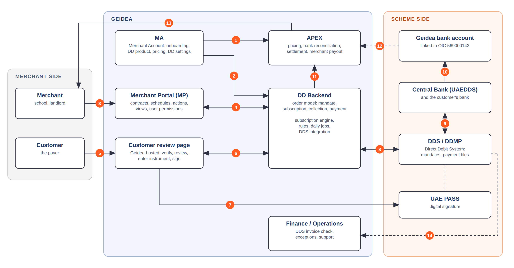
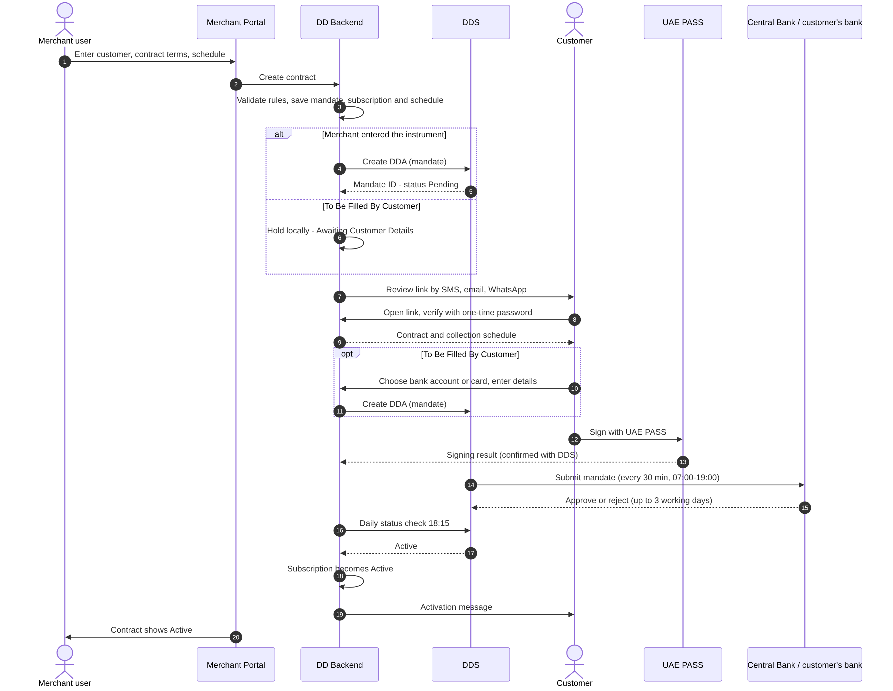
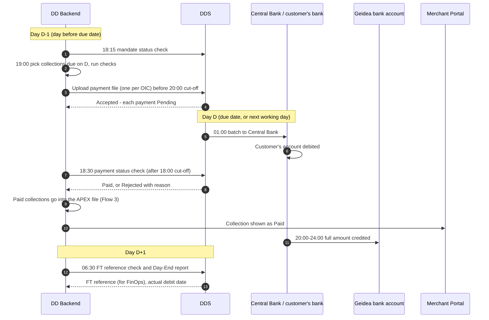
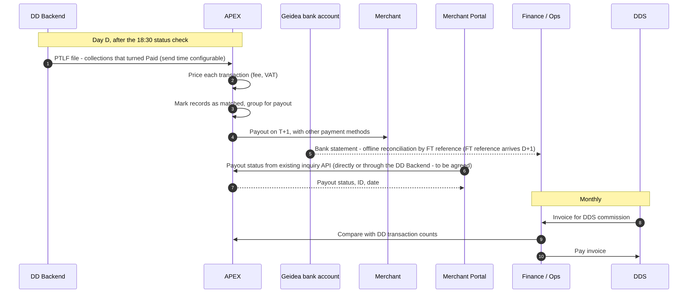
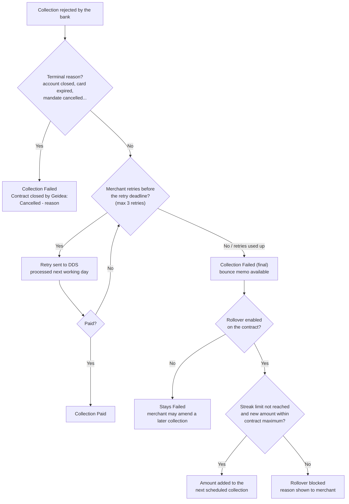
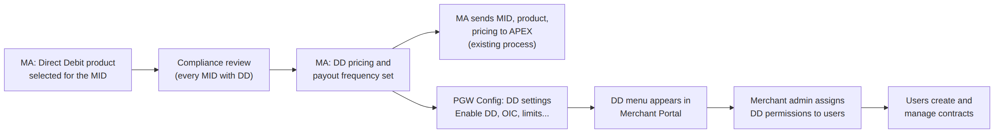
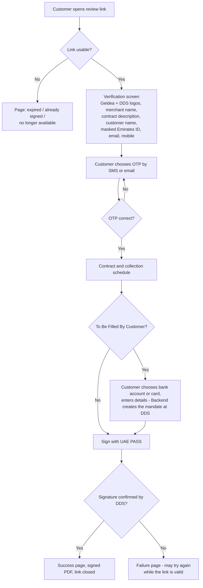
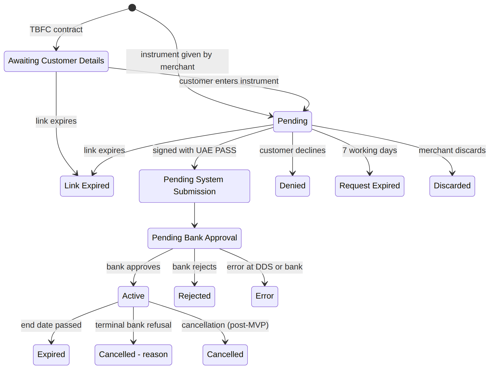
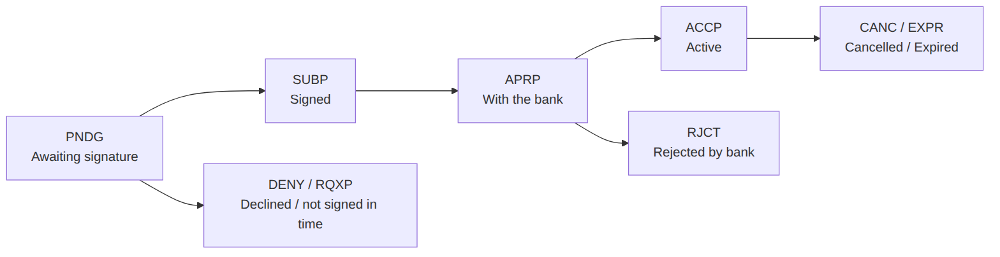
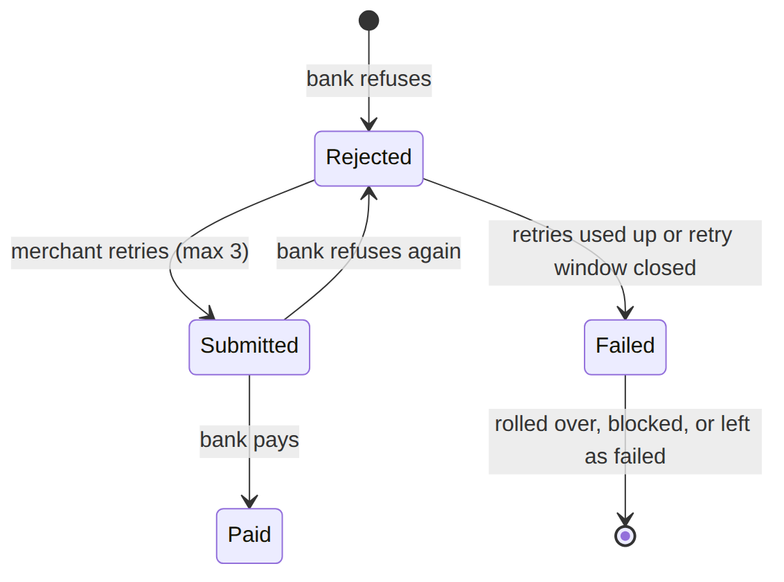

Direct Debit at Geidea — Product, Functional and Technical Reference
| Owner | Ghulam Rabbani, Product (Payment Gateway) |
| Version | 2.7 draft — 18 November 2026 |
| Replaces | “Direct Debit _ MP Scope” (Merchant Portal team) and its section 5, “Direct Debit Functional Scope” (07 September 2026) |
| Audience | Business, Risk, Compliance, Finance, Operations, Support, Merchant Portal, Merchant Account, DD Backend and APEX teams |
How this document is organised
| Part | What it covers | Who it is for |
|---|---|---|
| Part A — Direct Debit at Geidea | What Direct Debit is, who does what, how money and data flow, how a merchant is enabled, key rules, scope, open items | Everyone |
| Part B — Functional requirements | What the product must do. Changes since the 07-Sep-2026 version are in blue; superseded text is in |
Product, Business, QA, all build teams |
| Part C — Technical requirements | Delivery plan, frontend and Backend story alignment, and the Backend stories (S1 to S14) | Developers, QA, Delivery |
What changed in version 2.7 (18 November 2026)
| Topic | Change | Where |
|---|---|---|
| Cancellation — customer messages | Decided (Product, 18-Nov): every customer message about a cancellation is sent by email only (no SMS): cancellation request (and each resend), cancellation accepted, cancellation rejected by the bank. Exact wording added. The request email and the cancellation page tell the customer that the cancellation does not take effect until they sign it (DDS go-live checklist) | S8 sections 3 and 5, A14, B18 |
| Cancellation link | No expiry: the link works while the request awaits the customer’s signature. The merchant can resend it once per day | S8 sections 2 and 3 |
| Cancellation accepted | When DDS reports the cancellation request accepted (ACCP), Geidea cancels the mandate on its side at once; no separate mandate status inquiry |
S8 section 5 |
| After a cancellation is confirmed | Payments already in a generated payment file run to their final status; every other follow-up (retry, representment, rollover, Amend, scheduled collections) stops and is Cancelled | S8 rule 8, section 4 |
| Contract references | A DDA reference is never reused, including after the contract is cancelled | B3, S8 rule 7 |
What changed in version 2.6 (18 October 2026)
| Topic | Change | Where |
|---|---|---|
| TBFC moved to Phase 2 | Decided (Product, 18-Oct): “To Be Filled By Customer” is not built in this phase; the merchant always enters the bank account or card. DDS does not require it for go-live (it is not in DDS’s go-live checklist, and DDS’s API has no TBFC mode). Everything in this document marked TBFC — S2 section 4.1, S3 section 5, the TBFC bulk flow in S9, the Awaiting Customer Details status — is kept for Phase 2. Create Contract rejects bankInfoFillByCustomer = true in this phase |
A11, B3, B5, B14, C2, C3, S2, S3, S9 |
| Frequencies offered | Decided (Product, 18-Oct): this phase offers Daily, Weekly, Monthly, Quarterly, Half-yearly, Annually. Every two months, Every four months and One Time Only are DDS frequencies Geidea does not offer yet; Create Contract rejects them (V16) | A4, B3, S1 section 5.2, S2 |
| Re-setting a collection in Error | Decided (Product, 18-Oct): a collection in Error can be moved by Amend to any later date inside the contract period, including a date after later collections. It is exempt from the order rule (A9); the minimum gap is checked against the collections just before and after its new date (A10, A11). No rollover is added for this case | B8, S7 section 2 |
What changed in version 2.5 (15 October 2026)
Items marked Asked DDS are not yet confirmed; they are also listed in A13.
| Topic | Change | Where |
|---|---|---|
| DDS timings confirmed | DDS confirmed (08-Oct): pay / no-pay is final at the Central Bank 18:00 cut-off (banks confirm between 11:00 and 18:00; a collection a bank has not settled by 18:00 is failed by the Central Bank as “Technical issues at Paying Bank”). The FT reference is generated between 01:00 and 05:00 the next day. Same timings every day; an empty file on settlement holidays. DDS syncs with the Central Bank every 10 minutes | A4, A8, B7, S1 section 5.4, S5, S6 |
| Status check times | Mandate status sync moves to 18:15 and the due-date payment status check to 18:30, both after the 18:00 cut-off (DDS go-live checklist: “after 6 pm”) and before the 19:00 payment file. FT reference check stays 06:30. DDS agreed (15-Oct), and asked that the payment file is uploaded after the status check, as planned | A4, A8, B7, S1 section 5.4, S4, S5 |
| Mandates pending bank approval | DDS (15-Oct): most banks approve within 1 working day, some take 3 to 4, and one or two wait for a confirmation call with the customer. Geidea keeps checking until a final status; no time limit | B4, S4 |
| Collections in Error | DDS confirmed (15-Oct) that a payment in Error cannot be represented. The payment keeps its Error status for history; the collection shows “Payment validation error” with no Retry and no bounce memo. The merchant re-sets it with Amend schedule (new date, and amount if Variable); it is then sent as a fresh payment with a new payment reference. A mandate in Error stays final | B3, B7, B8, S5, S6, S7 |
| Denied and Suspended | DDS confirmed (15-Oct) that banks do not support DENY or SUSP. “DD Denied” is removed from the status list, filters and KPIs | B4, B5, S3, S4, S10 |
| New failure reason | “Technical issues at Paying Bank” (Central Bank fails a collection the bank did not settle by 18:00), reason code T: handled as a retryable rejection (DDS-confirmed) | B8, S6 |
| Contract cancellation | Now in the MVP (was post-MVP). DDS’s checklist lists it as core and DDS strongly recommends it. Merchant starts it on an Active contract with a DDS reason code (permission Cancel Contract); the customer signs on Geidea’s page with UAE PASS; new status Cancellation Pending; collections continue until the customer signs (the merchant may pause), stop once signed, resume if the bank rejects; a request cannot be withdrawn and never expires. S8 written | A10, A11, A13, B4, B9, B15, S8, S10, S11, S13 |
| Customer decline | DDS (15-Oct): offering discard to the customer is Geidea’s choice. MVP: merchant only; a customer who does not want to sign ignores the link and the mandate expires (Request Expired) | B5, A13 |
| Customer notices on rejections | DDS’s checklist expects rejection reasons to reach the customer as well as the merchant. DDS (15-Oct): its payer notifications are disabled for full-integration clients and it sets no required events or wording. Geidea’s design; to request suppression with production credentials | B11, A13 |
| UAE PASS signing | DDS UAE PASS Signature API v1.4: DDS checks the Emirates ID against the IBAN and bank before UAE PASS opens; callback statuses finished / failed / canceled / ddsError with exact failure messages, used for the customer’s outcome messages. The review page also tells the customer how to reset a forgotten UAE PASS signing password | B3, B5, S3 |
| Payment files | DDS (15-Oct): one accepted file per OIC per day — rejected uploads don’t count, a repeat upload after a timeout returns duplicate-payment errors. No manual upload on DDS’s portal for an API client (read-only dashboard only), so the manual fallback is a re-run through the API | B7, S5, S14, A13 |
| Merchant reference | The merchant reference is the DDS reference (DDA reference number, printed on the signed form, base of every payment reference); there is no separate Geidea contract reference. A 5-digit Geidea code per merchant goes in front of what the merchant types, so references stay unique across merchants under Geidea’s OIC; the input stops at the cap. Pending DD Backend: code per merchant or per MID, separator, generation | B3, S1, S2 |
| References shown | The Portal shows the merchant reference and, once DD Active, the Central Bank reference; DDS’s internal IDs are not shown to the merchant | S10 sections 1, 2 and 6 |
| IBAN and card display | The IBAN is shown in full on every merchant and customer screen and in the export, and stored in full by the DD Backend (encrypted at rest, never logged). The card number is always masked; the full number is held in Geidea’s token vault and the DD Backend keeps only the token. DDS support for an encrypted card number stays open | A3, A13, B3, B5, B12, C4 rule 4, S2, S3, S9, S10 |
| Contract list and KPI cards | No default date range: contracts run for months or years. The list shows every contract in the selected stores, and the KPI cards always show the totals for all of them — they do not follow search, filters or a date range | S10 sections 5 and 6, C3 |
| DDS go-live checklist | DDS’s “Checklist Before Client Go-Live” mapped item by item; new section A14 | A14 |
| TBFC | Reaffirmed in Phase 1 (the built frontend story had descoped it) | B3, C3 |
| Frontend backlog | The MP team’s 32 stories reviewed against this document and the build on the test portal; corrected as “Direct Debit _ MP Backlog” v1.0 (40 stories, new Epic 11 Customer Review & Signing). C3 summarises it; Backend story codes for every epic are reserved | C3 |
What changed in version 2.4 (07 October 2026)
| Topic | Change | Where |
|---|---|---|
| Merchant payout | Decided: T+1, even if Geidea receives the funds later. A collection goes to APEX when DDS reports it Paid on the due date; it no longer waits for the FT reference | A4, A7, A8, B7, B10, S1 section 5.4, S5, S12 |
| FT reference | Not needed for pricing or payout; used by FinOps for reconciliation. Adding it to the record already in APEX needs a change request with APEX’s vendor; a Backend extract for FinOps is the fallback | A7, A8, B10, S12 |
| DDS timings | The 18:00 status check and the 06:00 next-day FT reference check are DDS’s recommended check times, not committed response times. Clock times seen in the September live test are no longer quoted | A4, B7, S1, S5 |
| Store selection | Direct Debit follows the Portal’s existing multi-store selection: all of the user’s stores by default, one or several selectable | A9, B16, S10, S13 |
| User permissions | Per action, as a Direct Debit group in the Portal’s existing role framework. Proposed list; final list to be agreed with the MP team | A9, B15, S13 |
| Contract status | One status list for the Portal. DDS statuses carry the tag DD; Geidea-only statuses carry no tag. Ageing on Pending Bank Approval is not in the MVP | B4, S10 section 3 |
| Refresh status | The merchant “Refresh status” action is removed from the MVP | B4, S4, S10, S13 |
| Review link expiry | The link expires at the end of its last day and stops working at once; contracts are closed by a daily job, not an hourly one | B5, S1 section 5.4, S3 sections 1 and 10 |
| Mandate document | One document endpoint for the merchant: unsigned while the contract is DD Pending, signed after signing. The signed PDF is fetched once after signing and otherwise on request; the 15-minute retry is removed | B5, S3 section 9, S10 |
| Backend stories in Jira | Backend stories for the frontend Epics 2 and 4 have been created in Jira and are mapped to this document | C3 |
Scope sign-off
| Function | SPOC | Sign-off |
|---|---|---|
| Business owner | Business | |
| Risk | Risk & Compliance | |
| Cybersecurity | Cybersecurity | |
| FinOps | FinOps | |
| Finance | Finance | |
| Operations | Operations | |
| UAT | UAT team |
Sign-off given on the earlier version does not carry over; this version needs a fresh sign-off.
Reference documents
- DDS REST API document v2.0 (includes the “SLA Timing / Batch Process” table)
- UAE PASS Signature API document v1.3
- DDMP User Manual v1.0 and Payer’s Journey v2.1
- DDMP Operation Rule Book v1
- FAQ — Direct Debit v1.2 (Payer); UAE PASS FAQ
- DDMP Onboarding Documents; DDMP Customer Support Document
- APEX Merchant API UAE Specifications v1.27
- Direct Debit Portal Walkthrough (live test, 11 to 15 September 2026)
- Direct Debit MP Backlog (Merchant Portal frontend stories US-01 to US-32), and the Backend stories created in Jira for its Epics 2 and 4 (Part C section C3)
Glossary
| Term | Meaning |
|---|---|
| Direct Debit (DD) | A customer’s signed authority for a merchant to pull money from the customer’s bank account or card on agreed dates |
| DDS / DDMP | Direct Debit System FZ LLC, also called Direct Debit Marketplace. The licensed provider Geidea integrates with |
| UAEDDS | The UAE Central Bank’s Direct Debit System, the scheme that DDS submits to |
| OIC | Originator Identification Code. The Central Bank ID of the company collecting the money. Geidea’s is 560000001 |
| DDA / mandate | Direct Debit Authority. The signed, bank-approved authority itself, with its amount limits, frequency and validity dates |
| Contract | Geidea’s term for the mandate plus its subscription and collection schedule |
| Subscription | The collection schedule Geidea runs under a mandate. DDS does not hold it |
| Collection (occurrence) | One scheduled debit: a date and an amount |
| Payment | One attempt at DDS for a collection. Retries re-use the same payment |
| FT reference | Funds-transfer reference issued by DDS for a paid collection. It appears on Geidea’s bank statement and is the key Finance uses to reconcile the credit |
| TBFC | “To Be Filled By Customer”: the merchant leaves the bank or card details for the customer to enter |
| MA | Merchant Account: Geidea’s onboarding and merchant configuration system |
| MP | Merchant Portal: what the merchant’s users work in |
| DD Backend (DD BE) | Geidea’s Direct Debit service: order model, rules, daily jobs and the DDS integration |
| APEX | Geidea’s settlement platform: pricing, grouping and merchant payout |
| PTLF | The bulk transaction file the DD Backend sends to APEX |
| MID | Merchant ID. In Merchant Portal each MID is a “store” |
Part A — Direct Debit at Geidea
A1. What Direct Debit is
Referenced from 1 place
Direct Debit is the digital replacement for the post-dated cheque. Instead of handing over a book of cheques, the customer signs one electronic authority (the mandate) with UAE PASS. The mandate is registered with the UAE Central Bank’s Direct Debit System and approved by the customer’s own bank. From then on the merchant can collect each instalment on its due date without the customer doing anything.
Key characteristics:
- Regulated by the UAE Central Bank. Every mandate and every collection passes through the Central Bank’s scheme (UAEDDS). Geidea reaches it through the licensed provider DDS.
- A pull payment. The merchant initiates each collection, within the limits the customer signed: a minimum and maximum amount, a frequency, and a start and end date.
- Not real-time. There is no instant authorisation as with a card. Collections are sent in a daily file the evening before the due date, debited the next day, and confirmed later that day.
- Built for payments over a period of time. It suits a subscription or instalment plan: rent over a year, school fees over terms. A one-off collection is possible but is not the main use.
- Local only. UAE-issued bank accounts and cards, in AED, for customers with an Emirates ID and UAE PASS.
- Legally strong. A collection made in line with the signed mandate cannot be disputed on commercial grounds, and the bank issues a formal proof of failure (bounce memo) when a collection is refused.
Direct Debit is not a payment method inside the payment gateway. It does not touch MPGS or CyberSource. It is a separate integration with its own Backend.
A2. Market use case and target segments
Referenced from 1 place
The problem it solves. Merchants who collect large amounts on a schedule rely today on post-dated cheques or on chasing customers for transfers. Cheques are slow to collect, costly to handle and store, easy to lose, and painful when one bounces. Direct Debit keeps the legal weight of a cheque and removes the paper: collection is automatic, status is visible the same day, and a failed collection can be retried or carried forward.
| Post-dated cheques | Direct Debit | |
|---|---|---|
| Customer effort | Writes and hands over a cheque per instalment | Signs once with UAE PASS |
| Collection | Merchant deposits each cheque | Automatic on the due date |
| Visibility | Bank statement, days later | Paid or rejected the same day |
| Failure | Bounced cheque, manual follow-up | Up to 3 retries, automatic carry-forward, bounce memo |
| Change of amount or date | New cheque | Merchant amends the collection within the signed limits |
Target segments in scope now
- Real Estate: rent, service charges, instalment plans.
- Education: school and university fees.
Other segments with scheduled receivables (insurance, financing, memberships) can follow; nothing in the build is segment-specific.
Positioning. Any company can go to DDS directly. Geidea’s value is what sits on top: the subscription engine, schedule amendments, retry and rollover handling, and one consolidated payout with the merchant’s other payment methods. In Phase 2 the same engine is opened to partners through an API (A11).
A3. Payment instruments
Referenced from 4 places
| Instrument | In scope | Notes |
|---|---|---|
| UAE bank account (IBAN) | Yes | The main instrument. The bank is chosen from a list Geidea maintains to match DDS’s bank table |
| UAE-issued credit card | Yes, with conditions | Allowed by default. Can be switched off per merchant (see A9) |
| Non-UAE accounts or cards | No | Not supported by the scheme |
Note on credit cards (open item). DDS currently accepts the card number only in clear text. Handling a full card number brings PCI-DSS obligations, and the Merchant Portal is outside the PCI zone today. Until this is settled:
- Credit Card can be disabled for any merchant through its Direct Debit settings.
- The card number is always shown masked (last 4 digits). Decided (14-Oct-2026): the full number is held in Geidea’s token vault; the DD Backend keeps only the token and turns it back into the number when it has to be sent to DDS.
- The IBAN is not treated this way: it is shown in full on every screen and stored in full by the DD Backend (encrypted at rest, never written to logs). APEX does not need the card number: a static value is sent for every Direct Debit record (agreed with APEX, 06-Oct-2026).
- DDS has said it will support an encrypted card number; no date has been given.
The customer’s bank account or card details are checked against Central Bank records as part of UAE PASS signing, not before.
A4. Key scheme rules and timings
Referenced from 4 places
Rules at a glance
| Rule | Value |
|---|---|
| Maximum amount per collection | AED 100,000,000 (scheme limit). Geidea can set a lower limit per merchant |
| Amount type | Fixed (every collection identical) or Variable (within the signed minimum and maximum) |
| Frequency | The mandate carries a frequency ceiling. The actual schedule can be less frequent, never more |
| Minimum gap between two debits | Set by DDS per frequency, counted from the actual debit date (table below) |
| Customer signature | UAE PASS. An unsigned mandate expires after 7 working days |
| Bank approval of a signed mandate | Up to 3 working days |
| Payment file cut-off | 20:00 on the day before the due date |
| Retries of a rejected collection | 3 after the original attempt (4 attempts in total), the same rule as a bounced cheque |
| Changing a mandate’s terms | Not possible. Cancel and create a new one, with a new signature |
| Disputes | A collection made in line with the signed mandate cannot be disputed or reversed on commercial grounds. A narrow route exists for processing errors only (wrong amount, unauthorised instruction), within 30 days. There is no chargeback as with cards |
| Customer cancellation | The customer may cancel through the merchant or directly with their own bank. When the customer cancels at the bank, the next collection is refused with a “mandate cancelled” reason and Geidea closes the contract |
| Statement narration | The customer’s bank statement shows Geidea (the OIC owner), not the merchant. Banks control this wording |
Minimum gap between debits (confirmed by DDS, 24-Sep-2026)
| Frequency | DDS period (days) | Minimum gap (days) |
|---|---|---|
| Daily | 1 | 0 |
| Weekly | 7 | 4 |
| Monthly | 30 | 23 |
| Every two months | 60 | 50 |
| Quarterly | 90 | 80 |
| Every four months | 120 | 100 |
| Half-yearly | 180 | 160 |
| Annually | 360 | 330 |
Example: a Monthly mandate debited on 15 September cannot be debited again before 8 October.
Offered by Geidea in this phase (18-Oct-2026): Daily, Weekly, Monthly, Quarterly, Half-yearly, Annually. Every two months, Every four months and One Time Only are DDS frequencies Geidea does not offer yet.
DDS processing times (DDS REST API document v2.0, “SLA Timing / Batch Process”)
| Action | What DDS does | Response time | What Geidea does |
|---|---|---|---|
| Mandate | Submits to the Central Bank every 30 minutes between 07:00 and 19:00 | The customer’s bank has up to 3 working days to approve or reject | Checks mandate status once a day at 18:15 |
| Payment file | Sends the batch to the Central Bank at 01:00 on the due date | Same-day settlement between 20:00 and midnight | Uploads the file by 20:00 the day before; checks paid / not paid at 18:30 on the due date, after the Central Bank’s 18:00 cut-off; checks the FT reference at 06:30 the next day (generated 01:00 to 05:00) |
| Cancellation | Submits to the Central Bank every 30 minutes between 07:00 and 19:00 | The customer’s bank has up to 1 working day | MVP (S8) |
| Retry of a failed payment | Processed the next working day | Retries must be sent before a per-collection retry deadline |
Deduction and settlement timings for one collection
D is the due date. If D is a weekend or public holiday, the debit moves to the next working day.
| When | What happens |
|---|---|
| D-1, by 20:00 | Geidea uploads the payment file |
| D, 01:00 | DDS sends the batch to the Central Bank |
| D | Customer’s account is debited |
| D, 11:00 to 18:00 | Banks confirm collections. At the 18:00 Central Bank cut-off pay / no-pay is final; a collection not settled by then is failed as “Technical issues at Paying Bank” |
| D, 18:30 | Geidea checks DDS: the collection is Paid or Rejected |
| D, after the 18:30 check | Geidea builds the APEX file (PTLF) with the collections that turned Paid. The send time is configurable (see A8) |
| D, 20:00 to midnight | Full amount is credited to Geidea’s bank account |
| D+1 | Merchant payout (T+1, see A8) |
| D+1, 01:00 to 05:00 | DDS places the FT reference (DDS recommends checking from 06:00; month-end delays of about 30 minutes seen) |
| D+1, 06:30 | Geidea checks DDS for the FT reference. It is used by FinOps for reconciliation, not for payout |
DDS confirmed these timings (08-Oct-2026). They are the Central Bank’s settlement timings under the UAE DDS platform rules and apply every day; on a settlement holiday the file is empty. DDS syncs every status with the Central Bank every 10 minutes. What the September live test established from records also holds: a collection due on Sunday 13-Sep was debited on Monday 14-Sep, and the Paid status comes before the FT reference. DDS’s internal API SLA and escalation path are still to be agreed (A13).
A5. Commercial and funds model
Referenced from 1 place
- One originator. Geidea is the entity registered with the Central Bank, under OIC 560000001. Merchants are not registered individually; Geidea identifies them internally by MID. A merchant using its own OIC is deferred.
- Funds flow. The Central Bank credits the full collected amount to Geidea’s bank account linked to the OIC. DDS never holds the money and deducts nothing.
- DDS charges. DDS invoices Geidea monthly for its commission. Finance checks the invoice against the Direct Debit transaction counts in APEX.
- Merchant pricing. Geidea’s Direct Debit fee is set per merchant in MA at onboarding and applied by APEX, where Direct Debit is a payment scheme of its own. The fee is a flat fee per collection for now, separate from the merchant’s existing per-transaction fee. MA will provision both a flat fee and a percentage for Direct Debit so that percentage pricing can be offered later without further work. The commercial price points are a Business decision.
- Payout. APEX pays the merchant the collected amount less Geidea’s fee and VAT, together with the merchant’s other payment methods.
- No chargeback reserve. Because a correctly processed collection cannot be reversed on commercial grounds, payout does not need a chargeback-style hold. The narrow processing-error dispute route still exists.
A6. Who does what
Referenced from 1 place
Parties outside Geidea
| Party | Role |
|---|---|
| Merchant | Creates contracts, manages schedules, retries failed collections, receives payouts |
| Customer (payer) | Reviews the contract, enters bank or card details when asked, signs with UAE PASS |
| DDS / DDMP | Registers mandates, runs UAE PASS signing, submits payment files to the Central Bank, reports status and FT references |
| UAE PASS | The customer’s digital identity and signature |
| Central Bank (UAEDDS) and the customer’s bank | Approve or reject mandates; debit the customer; credit Geidea |
| Geidea’s bank | Holds the OIC-linked account that receives the collected funds |
Inside Geidea
| System or team | Role in Direct Debit |
|---|---|
| MA (Merchant Account) | Direct Debit is assigned to a MID as a product during onboarding. Pricing and payout frequency are set here and sent to APEX. Holds the merchant’s Direct Debit settings (where the current PGW Config sits for Tabby, Tamara, VIS, etc.) |
| MP (Merchant Portal) | The merchant’s screens: portfolio, create contract, contract detail, collections, actions, bulk upload. Also hosts user management, where Direct Debit permissions are assigned |
| Customer review page | Geidea-hosted page the customer opens from the link: customer verification via OTP, contract review, bank or card entry, hand-off to UAE PASS |
| DD Backend | Holds the order model (mandate, subscription, collection, payment) and manages customer notifications. Enforces every rule. Runs the daily jobs. The only system that talks to DDS. Sends paid collections to APEX and fetches payout status from it. Serves all data to the Merchant Portal. Holds the bank list and the working-day calendar in its configuration |
| APEX | Receives paid collections in a PTLF file. Treats Direct Debit as a new scheme. Prices each matched record, groups it and pays the merchant under the MID’s normal payout frequency. Exposes payout status through its existing inquiry API. Shows Direct Debit as a new scheme in internal and merchant-facing reports |
| Finance / Operations | Reconcile the credits on Geidea’s bank statement against Direct Debit collections using the FT reference. This is an offline Finance/FinOps activity, outside the Direct Debit build. Reconcile the DDS monthly invoice for payment. Handle exceptions raised by the daily jobs, through the operations console (S14) |
High-level solution

| # | Step |
|---|---|
| 1 | MA sends the MID, the Direct Debit product, pricing and payout frequency to APEX (existing process) |
| 2 | MA provides the merchant’s Direct Debit settings to the DD Backend |
| 3 | The merchant’s users create and manage contracts in Merchant Portal |
| 4 | Merchant Portal reads and writes everything through the DD Backend’s APIs |
| 5 | The customer opens the review link |
| 6 | The review page verifies the customer, shows the contract and takes the bank or card details through the DD Backend |
| 7 | The customer signs with UAE PASS |
| 8 | The DD Backend registers mandates with DDS, uploads the daily payment file, and fetches statuses and FT references |
| 9 | DDS submits mandates and debit instructions to the Central Bank and the customer’s bank |
| 10 | The Central Bank credits the full amount to Geidea’s bank account |
| 11 | The DD Backend sends paid collections to APEX in a PTLF file |
| 12 | APEX marks the records in the file as matched, then prices and groups them for payout |
| 13 | APEX pays the merchant |
| 14 | DDS invoices Geidea monthly; Finance checks it against APEX |
A7. End-to-end flows
Referenced from 3 places
Flow 1 — Contract creation and signing

- Merchant Portal captures the customer, the contract terms and the collection schedule in one guided flow, and shows every planned collection before sending.
- The DD Backend validates everything, saves the contract, and registers the mandate with DDS. If the merchant chose “To Be Filled By Customer”, the Backend holds the contract and registers it only when the customer has entered the bank or card details, because DDS cannot create a mandate without them.
- The customer gets a link, proves who they are with a one-time password, reviews the contract and schedule, and signs with UAE PASS.
- The bank approves within 3 working days. The Backend picks this up in its daily 18:15 check and activates the subscription.
Flow 2 — Subscription and daily collection cycle

- Every evening the Backend picks the collections due the next day, checks each one (contract still active, subscription not paused, amount within limits, minimum gap respected) and uploads one file per OIC to DDS before the 20:00 cut-off.
- DDS accepts a file all or nothing. If DDS rejects it, the Backend removes the rows DDS complained about, uploads the rest once more and raises an alert. If the file still does not go, it can be re-run through the operations console (S14). DDS accepts one file per OIC per day; uploads it rejected don’t count.
- On the due date the Backend fetches the result; paid collections go to APEX the same day (Flow 3). The next morning it fetches the FT reference and the actual debit date. The FT reference is for Finance’s reconciliation; payout does not wait for it.
Flow 3 — APEX, settlement and payout
Referenced from 1 place

- Only paid collections go to APEX, as soon as DDS reports them Paid on the due date. They do not wait for the FT reference (decision of 06-Oct-2026, see A8). Mandates, subscriptions, and rejected or failed collections never go to APEX.
- They go in a PTLF file only. There is no real-time API call to APEX for Direct Debit (agreed with APEX, 06-Oct-2026): payment confirmation arrives at cut-off times, so there is nothing to show in real time, and a record sent by API could be picked up early by same-day settlement.
- Every record that arrives in the file is treated by APEX as matched, which makes it ready for pricing. APEX prices it, groups it and includes it in the merchant’s normal payout.
- Bank statement reconciliation is not part of this flow. Matching the credit on Geidea’s bank statement to a collection by FT reference is an offline Finance/FinOps activity (open item, A13).
- FT reference in APEX. The FT reference arrives the day after the record is already in APEX. Adding it to that record needs a change request with APEX’s vendor (Emcrey), which APEX will raise once Product documents the requirement. If that is delayed, the DD Backend provides FinOps with an extract of paid collections and their FT references.
- Merchant Portal shows payout status for collected amounts, taken from APEX’s existing inquiry API. No new APEX work is needed for this. To agree with the MP and Backend teams: whether the Portal calls APEX directly in real time, or the DD Backend reads APEX on a schedule and serves the Portal.
- Merchant Portal “Transactions” tab. APEX will add a filter to exclude Direct Debit records (FR.03 of APEX’s requirements), and the Portal must apply it, so that Direct Debit records do not appear among card transactions. Direct Debit records are shown in the Direct Debit screens.
- Once a month Finance reconciles DDS’s invoice against the Direct Debit transactions in APEX.
Flow 4 — Failed collections

- Retry. The merchant can retry a rejected collection up to 3 times, but only before that collection’s retry deadline. The deadline exists because a late successful retry would sit too close to the next collection and DDS would refuse it.
- Terminal refusals. Some reasons (account closed, card expired, mandate cancelled, account blocked) mean the mandate can never be collected again. The collection fails at once and Geidea closes the contract.
- Automatic rollover. If the contract allows it, a finally failed amount is added to the next scheduled collection, within the contract’s maximum and a limit on consecutive rollovers.
- Amend. The merchant can change the date or amount of any future collection within the signed limits. This is also how a merchant recovers an amount that could not be collected or rolled over.
- Proof of failure. The bank’s bounce memo can be downloaded for a rejected collection.
A8. Settlement and merchant payout timing
Referenced from 8 places
- Direct Debit at Geidea — Product, Functional and Technical Reference
- Deduction and settlement timings for one collection
- Flow 3 — APEX, settlement and payout
- Open items
- Status of the open points in the earlier document
- B10. Reconciliation & Settlement - To be Finalized with the APEX team
- S7 › 2. Amend a collection
- S12 › Open points
Decided (Business, 06-Oct-2026): the merchant is settled on T+1, even if Geidea receives the Direct Debit funds later.
What follows from the decision:
- A collection is sent to APEX when DDS reports it Paid on the due date. It does not wait for the FT reference, which comes the next day.
- The FT reference is not needed for pricing or payout. It is used by FinOps to reconcile the credits Geidea receives in its settlement account.
- The credit normally reaches Geidea’s bank account the same evening (20:00 to midnight on the debit day). The payout does not depend on it.
- To carry the FT reference on the APEX record, APEX must be able to update a record that already exists. This is a change request with APEX’s vendor (Emcrey); APEX will raise it once Product documents the requirement. If it is delayed, the DD Backend gives FinOps an extract of paid collections with their FT references.
How APEX decides the payout day
- Each MID has one payout frequency (T+X). It applies to every record on the MID, Direct Debit included. It cannot be set per payment method today.
- X is counted from the match date: the day the PTLF file is loaded in APEX, not the day of the debit.
- APEX loads PTLF files by about 06:30 and runs pricing and grouping until about 07:15. A file loaded by then is in that day’s normal run.
What this means for the APEX file
| When the Direct Debit file reaches APEX | Result for a merchant on daily payout |
|---|---|
| After the 18:30 status check on D and before APEX’s 06:30 load on D+1 | Paid in the normal payout on D+1. This is the target |
| Later on D+1 | Misses the normal run. Paid that day only with a top-up pricing and a second payout, otherwise on D+2. To be avoided |
- A collection that DDS reports as Paid only at a later check goes into the next file.
- Direct Debit is paid together with the merchant’s other payment methods. Holding the file a day, which was considered for paying Direct Debit a day later than eCommerce, is no longer needed.
- For a MID that is not on daily payout, APEX applies the MID’s T+X to Direct Debit as well. How T+1 is then achieved for Direct Debit (for example a payout frequency at scheme level, if APEX confirms it exists) is to be confirmed with APEX (A13 item 2).
- Still to settle with APEX: the exact send time of the file, and how APEX counts the payout day for a file loaded on the evening of D compared with one loaded early on D+1 (A13 item 1).
For the build: the APEX file send time must be a configurable Backend setting (S1 section 5.4, S12). It falls after the 18:30 status check on the due date and before APEX’s 06:30 load the next day.
A9. Merchant enablement and configuration
Referenced from 6 places

Step 1 — Onboarding in MA
- Direct Debit is selected as a product for the MID in MA. It sits on the merchant’s CNP (eCommerce) MID; there is no separate Direct Debit MID type.
- Compliance review. Any MID that is assigned the Direct Debit product goes to Compliance for review, whatever its MCC. There is no MCC restriction in the system; Education and Real Estate are the commercial focus.
- Direct Debit pricing and the payout frequency are set up. Pricing is a flat fee per collection for now; MA provisions both a flat fee and a percentage for Direct Debit. The payout frequency is the MID’s own; no separate Direct Debit settlement setting is needed in MA.
- MA sends the MID, its products, pricing and payout frequency to APEX. This is the existing process; Direct Debit is one more product in it.
Step 2 — Direct Debit settings in PGW Config
Once the Direct Debit product is assigned to the MID, these settings become available in the merchant’s PGW Config in MA. They are set by Geidea, not by the merchant.
| Setting | Default | What it does |
|---|---|---|
| Enable Direct Debit | Off | The master switch. On: the Direct Debit menu appears in the merchant’s portal and the Direct Debit APIs work for this MID. Off: the menu is hidden and every Direct Debit action is blocked. Switching it off also pauses every active subscription for the merchant; collections already sent to DDS still complete. Switching it back on does not resume them; the merchant resumes each one |
| OIC | — | Which originator code the merchant’s contracts are registered under. Today always Geidea’s. Each contract keeps the OIC it was created with |
| Disable Credit Card Instrument | Off (card allowed) | On: neither the merchant nor the customer can choose Credit Card; only Bank Account is offered. Used while the card-number question in A3 is open. Affects new contracts only |
| Maximum Contract Amount | AED 100,000,000 | The highest “maximum amount per collection” a contract may carry for this merchant. Set by Risk. It is checked per contract; there is no cap across all of a merchant’s contracts |
| Minimum first-collection lead time | 4 working days | The first collection must be at least this far after the contract is created. It leaves time for the customer to sign and the bank to approve, so the first collection is not missed |
| Contract review expiry | 7 days | How long the customer’s review link stays valid. The link expires at the end of its last day; after that it shows “expired” at once, and the unsigned contract is closed by a daily job |
| Suppress Geidea customer notifications | Off | Phase 2 (partner model). The switch exists in the data model now and stays Off; it is not shown in PGW Config in the MVP. When On, Geidea does not send the signing-request or activation messages, because an API partner sends the review link itself. The review and signing page is still Geidea’s, and Geidea still sends the one-time password for it |
| Enable Bulk Contract Upload | Off | On: the bulk upload option appears in the merchant’s portal |
Controlling who may do what is a per-user matter and is not part of PGW Config, which is per MID. See step 3.
Backend configuration (Geidea only)
Separate from the merchant settings, the DD Backend holds configuration that applies to all merchants:
| Item | Why it is needed |
|---|---|
| DDS login per OIC | Every call to DDS is made with the login of the OIC a contract belongs to. Kept in the secrets vault |
| Card encryption key | For sending a card number to DDS in encrypted form, once DDS supports it (open item) |
| Bank list | The banks a merchant or customer can pick. DDS matches the bank by its exact name and offers no API for the list, so Geidea keeps its own copy. If a name is missing or spelled differently, DDS rejects the contract. It must be updated whenever DDS adds or removes a bank |
| UAE working-day calendar | Weekends and UAE public holidays. Several rules count in working days, and the Backend cannot apply them without it: the first collection must be at least 4 working days out; the bank has up to 3 working days to approve; an unsigned mandate expires after 7 working days; a retry is processed the next working day, which sets each collection’s retry deadline; and a debit due on a non-working day moves to the next working day. A wrong or out-of-date calendar leads to missed first collections and retries refused by DDS. Public holidays must be added as they are announced |
| Frequency and minimum-gap table | DDS’s rule for how close two debits may be. Held as configuration because DDS can change the numbers |
| Job schedule | The times of the daily jobs, set within DDS’s own cut-offs |
| Terminal refusal reasons | The bank reasons that end a contract (account closed, card expired and so on) |
Who maintains the bank list and the calendar day to day is to be agreed; the operations console (S14) is the natural place to edit them.
Step 3 — User permissions in Merchant Portal
Merchant Portal has a role framework: the business administrator (the first user of the business, covering all its stores) creates roles, ticks permissions per module, and assigns roles to users. Permissions there are per action; for example Export Transactions is separate from View Transactions. Direct Debit adds its own permission group to this framework, visible only when Direct Debit is enabled for the business.
Proposed permissions (07-Oct-2026). The final list is to be agreed with the MP team.
| Permission | Allows |
|---|---|
| View Direct Debit | See the menu, KPIs, contracts, collections and history; download the mandate document and proof of failure |
| Export Contracts | Export the contract list |
| Create Contract | Create a single contract |
| Manage Unsigned Contract | Resend the signing link, discard an unsigned contract, edit notes |
| Pause / Resume Subscription | Pause and resume |
| Amend Collection | Change the date or amount of future collections |
| Retry Collection | Retry a rejected collection |
| Cancel Contract | Cancel an active contract and resend the customer’s cancellation link |
| Bulk upload — maker | Upload a bulk file and submit it for approval |
| Bulk upload — checker | Approve or reject a bulk file uploaded by someone else |
Every action permission requires View. The checks are made on every request, so hiding a button is never the only control. The functional requirement is in B15 and the technical story is S13.
Store selection
In Merchant Portal each MID is a store, and a merchant with several branches has several. Store selection is an existing Portal feature: by default a screen covers all the stores the user can access, and the user can narrow it to one or several with the store selector. Direct Debit works the same way: the contract list, KPIs, search and export cover the stores selected, added together. A contract belongs to exactly one MID, so creating a contract and bulk upload are for one store, and an action on a contract is checked against that contract’s store. See B16.
Geidea support view
Support and call-centre staff today search a MID in MA and view the merchant’s portal as the merchant sees it. Direct Debit needs the same so that staff can answer merchant queries about contracts, collections and payouts. The design (view-only or with actions, which roles, audit) is an open item. See B17.
A10. User journeys
Referenced from 2 places
These replace the nine journeys in the earlier document. The earlier ones were checked against the current design and differ in these ways: they treated one-time and recurring mandates as separate journeys (it is one guided flow); the customer journey had no identity verification step; the recovery journey offered “combine billing” as a merchant choice (rollover is automatic; the merchant’s tool is Amend); and settlement was stated as T+1 (still open).
Journey 1 — Enable a merchant
| # | Who | What happens |
|---|---|---|
| 1 | Sales / Onboarding | Selects Direct Debit as a product for the merchant’s CNP MID in MA |
| 2 | Compliance | Reviews the MID |
| 3 | Onboarding | Sets Direct Debit pricing and payout frequency |
| 4 | MA | Sends MID, product and pricing to APEX |
| 5 | Geidea admin | Switches on Enable Direct Debit in PGW Config and sets the other settings |
| 6 | Merchant admin | Assigns Direct Debit permissions to users in Merchant Portal |
Journey 2 — Create a contract
| # | Who | What happens |
|---|---|---|
| 1 | Merchant user | Selects the store, opens Direct Debit, starts a new contract |
| 2 | Merchant user | Enters the customer’s name, Emirates ID, mobile, email, a merchant reference, a customer-facing description and optional internal notes |
| 3 | Merchant user | Enters the bank account or card, or ticks “To Be Filled By Customer” |
| 4 | Merchant user | Sets validity dates, Fixed or Variable amount, minimum and maximum, frequency ceiling |
| 5 | Merchant user | Sets the first collection date, the collection frequency and amount, and rollover rules |
| 6 | Portal | Shows every planned collection; the merchant can adjust individual dates and amounts within the rules |
| 7 | Merchant user | Reviews and sends |
| 8 | DD Backend | Validates, saves, registers the mandate with DDS (unless TBFC), sends the customer the review link |
| 9 | Portal | Shows the contract as Pending, or Awaiting Customer Details for TBFC |
Journey 3 — Customer reviews and signs

| # | Who | What happens |
|---|---|---|
| 1 | Customer | Receives the link by SMS, email and WhatsApp |
| 2 | Customer | Opens the link. Sees the verification screen: Geidea and DDS logos, merchant name, contract description, own name, masked Emirates ID, email and mobile |
| 3 | Customer | Chooses to receive a one-time password by SMS or email, and enters it |
| 4 | Customer | Reviews the contract terms and the full collection schedule |
| 5 | Customer (TBFC only) | Chooses bank account or card and enters the details. The mandate is registered with DDS at this point |
| 6 | Customer | Signs with UAE PASS. The bank details are checked against Central Bank records during signing |
| 7 | Customer | Sees the result and can download the signed mandate |
| 8 | Bank | Approves or rejects within 3 working days |
| 9 | DD Backend | Activates the subscription when the mandate is Active; the customer gets a confirmation message |
If the link expires (default 7 days), the contract is closed and the merchant creates a new one. The customer has no decline button in the MVP: a customer who does not want to sign simply ignores the link.
Journey 4 — Collections
| # | Who | What happens |
|---|---|---|
| 1 | DD Backend | The evening before each due date, sends the collection to DDS |
| 2 | Bank | Debits the customer on the due date |
| 3 | DD Backend | Fetches the result; the Portal shows Paid or Rejected, with the reason |
| 4 | DD Backend | Sends the paid collection to APEX the same day. Next morning, records the FT reference and the actual debit date |
| 5 | APEX | Prices, groups and pays the merchant |
| 6 | Merchant user | Sees payout status on the contract detail page |
Journey 5 — Recover a failed collection
| # | Who | What happens |
|---|---|---|
| 1 | Merchant user | Sees a Rejected collection, its reason and its retry deadline |
| 2 | Merchant user | Retries (up to 3 times, before the deadline) |
| 3 | DD Backend | If retries run out or the deadline passes, marks the collection Failed |
| 4 | DD Backend | If the contract allows rollover, adds the amount to the next collection; otherwise the reason is shown |
| 5 | Merchant user | May amend a later collection to recover the amount; may download the bounce memo |
| 6 | Merchant user | A collection in Error (payment validation error) is not retried: the merchant re-sets it with Amend schedule (new date, and amount if Variable); it is sent again as a fresh payment with a new payment reference |
Journey 6 — Manage a contract
| # | Who | What happens |
|---|---|---|
| 1 | Merchant user | Pauses a subscription; collections that fall due while paused are skipped. Resumes it later |
| 2 | Merchant user | Amends the date or amount of future collections, within the signed limits |
| 3 | Merchant user | Resends the signing link, or discards a contract the customer has not signed |
| 4 | Merchant user | Edits internal notes |
| 5 | Merchant user | Cancels an active contract with a reason (Cancel Contract permission); optionally pauses collections at the same time. The customer signs the cancellation with UAE PASS; once the bank accepts, the contract is DD Cancelled |
Collections continue until the customer signs the cancellation; to stop them at once the merchant pauses the subscription. A cancellation request cannot be withdrawn.
Journey 7 — Bulk upload
| # | Who | What happens |
|---|---|---|
| 1 | Maker | Chooses the Standard or TBFC template, uploads the file |
| 2 | DD Backend | Checks the file as it is read; a file that fails cannot be submitted |
| 3 | Maker | Reviews the rows and submits the file for approval |
| 4 | Checker | Reviews the file and approves or rejects it with a reason |
| 5 | DD Backend | Creates a contract per row and reports the outcome of each row |
Journey 8 — Support
| # | Who | What happens |
|---|---|---|
| 1 | Support agent | Searches the MID in MA and opens the merchant’s Direct Debit view (design open) |
| 2 | Support agent | Sees contracts, collections, failure reasons and payout status, and answers the merchant |
A11. Scope and phasing
Referenced from 3 places
| Phase | Included |
|---|---|
| MVP | Merchants using Geidea’s Merchant Portal. Enablement and settings; user permissions; create contract (bank account and card); customer review and signing; activation; daily collection cycle; retry, automatic rollover, bounce memo; pause/resume, amend, discard, notes, cancellation; portfolio, contract detail, export, activity history; bulk upload (Standard and TBFC); in-portal notifications and the event store; APEX file and payout status; operations console (minimum scope to be agreed, S14). Individual customers only. Launch with a small number of MIDs |
| Post-MVP | |
| Phase 2 | To Be Filled By Customer (TBFC) (moved 18-Oct-2026): the customer enters the instrument on the review page, and TBFC bulk upload. Partner (API) model: partners creating and managing contracts from their own systems through Geidea’s API; review link delivered to the partner; webhooks; the Suppress Geidea customer notifications setting; partner access to the operations console for its own OIC; co-branded review page. Also: joint accounts; non-individual (company) customers; merchant-owned or partner-owned OIC |
| Removed | Manual rollover of skipped collections and its undo. Replaced by Amend |
Provisions for the Phase 2 partner model
The partner model is not built in the MVP. In it, a partner runs its own merchant-facing system and uses Geidea’s Direct Debit engine through an API; the customer still reviews and signs on Geidea’s page. The current build must follow the principles below, so that Phase 2 can be added on top without changing the foundations.
| # | What the current build must do | Why it matters for Phase 2 |
|---|---|---|
| 1 | Every business rule and permission is enforced in the DD Backend, never only in Merchant Portal | A partner’s system will call the same APIs without the Portal in front |
| 2 | The Merchant Portal uses the DD Backend only through its documented, versioned APIs (/direct-debit/v1/...), with the merchant identified by MID. No Portal-only shortcuts or direct database access |
The same APIs become the partner API without being redesigned |
| 3 | Schedule generation, validation and status logic live in the Backend; the Portal only displays what the Backend returns | A partner must get the same results without re-implementing the logic |
| 4 | Every event is written to the event store from day one, including contract created (with the review link and its expiry) and link resent | Webhooks are then only a delivery mechanism added on top |
| 5 | Customer messages (signing request, resend, activation) are sent by one Backend component, behind a per-merchant switch that exists in the data model from the start (default: Geidea sends) | Phase 2 turns the switch on for a partner who sends its own SMS and email; nothing else changes |
| 6 | The customer review and signing page is a standalone Geidea page reached by link, not tied to a Merchant Portal session, and takes the merchant name and contract description from data. The one-time password is always sent by Geidea | The page stays Geidea’s for partners; the link is simply delivered by someone else. Co-branding can be added later |
| 7 | The review link is returned in the create-contract response, whoever sends it to the customer | The partner needs it from the API |
| 8 | Every contract carries its OIC; DDS logins, payment files, job runs and batches are all kept per OIC | Allows a partner or merchant with its own OIC, and operations-console access limited to that OIC |
| 9 | The permission check accepts a caller that is not a Portal user (S13 section 3) | A partner authenticates with API credentials for a MID |
| 10 | Errors are returned as machine-readable codes with field-level detail | A partner’s system must act on them without a screen |
These are repeated for the build teams in Part C, section C5.
A12. Operations and support
Referenced from 2 places
DDS’s own support runs Monday to Friday, 09:00 to 17:00, with escalation after 24 and 48 hours. Geidea does not pass this on to merchants; Geidea’s support is the merchant’s single contact.
| Area | Requirement |
|---|---|
| Merchant support front line | Geidea Support owns merchant communication and tickets, including incidents that need DDS |
| Operations console | Direct Debit runs on scheduled jobs against fixed DDS cut-offs. An internal console is proposed (story S14, for discussion) that shows every job run, its batch and its records, flags a job that failed or did not run, emails a group mailbox, and lets an authorised user re-run a job or upload a payment file by hand. In Phase 2, partners integrated by API may be given access limited to their own OIC, so every view and action is kept per OIC from the start |
| Operational alerts | Payment file not accepted by 19:45, whole-file rejection, a job that did not run, missed submissions, a contract-creation call with an unknown outcome, a payment with no FT reference after 7 days, reconciliation mismatches. Each alert must lead to an action in the console |
| Reference data | The bank list and the UAE working-day calendar are held in Backend configuration (A9) and must be kept current |
| Playbooks | Mandate rejection, failed collection, retry, terminal refusal, reconciliation mismatch, payout delay, customer who does not recognise “Geidea” on their statement |
| Business continuity | |
| Messaging | Merchant-facing material must not promise guaranteed payment; collections depend on funds and the bank |
A13. Risks and open items
Referenced from 9 places
- Direct Debit at Geidea — Product, Functional and Technical Reference
- Deduction and settlement timings for one collection
- Flow 3 — APEX, settlement and payout
- A8. Settlement and merchant payout timing
- A14. DDS go-live checklist
- B11. Notifications
- B18. Open Items
- S7 › 2. Amend a collection
- S7 › Gaps to flag to the DD Backend team (Integration Document v2)
Open items
| # | Item | Owner |
|---|---|---|
| 1 | Payout day decided (06-Oct-2026): T+1 (A8). Remaining: the exact send time of the APEX file, and how APEX counts the payout day for a file loaded on the evening of the due date compared with early the next morning | APEX team, DD Backend team |
| 2 | Payout frequency is per MID in APEX (confirmed). For a MID that is not on daily payout, how T+1 is achieved for Direct Debit: whether a scheme-level T+X setting exists and works (A8) | APEX team |
| 3 | Store selection: Direct Debit follows the Portal’s existing multi-store selection (all stores by default, one or several selectable). Built that way for the summary screen; to be applied to every Direct Debit screen and action (A9, B16) | MP team, DD Backend |
| 4 | Geidea support view of a merchant’s Direct Debit activity through MA (A9, B17) | MA, MP, Support |
| 5 | Credit card number handling: DDS clear card number and encryption key. Token vault decided (A3); its integration to be designed | IT Security, DDS, Product |
| 6 | APEX field values still needed: terminalId, posEntryMode, destinationBin, processingCode / transaction type, static pan; and the PTLF file specification (S12). PTLF-only is agreed | APEX team |
| 7 | Payout status in Merchant Portal, from APEX’s existing inquiry API: the Portal calls APEX directly in real time, or the DD Backend reads APEX on a schedule and serves the Portal (A7, S10) | MP team, DD Backend team |
| 8 | Operations console and job control (S14): scope for go-live, where it lives, who builds and operates it; what happens to a collection whose payment file missed its date; keeping every view per OIC so that partners can be given access in Phase 2 | Product, DD Backend team, Operations |
| 9 | Bulk upload: design discussion needed before development starts | Product, MP, DD Backend |
| 10 | Frontend backlog corrected as “Direct Debit _ MP Backlog” v1.0 (15-Oct): missing stories added (customer review page US-33, discard US-34, notes US-35, Transactions-tab exclusion US-36, TBFC bulk US-37, cancellation US-39 and US-40), built stories get change stories. To be taken through refinement and into Jira (C3) | MP team, DD Backend team, Delivery |
| 11 | Who keeps the bank list and the working-day calendar up to date in Backend configuration (A9) | Product, Operations |
| 12 | Direct Debit price points for merchants. Structure is settled: flat fee per collection for now, with flat and percentage both provisioned in MA | Business, Finance |
| 13 | Answered by DDS (15-Oct-2026): no lookup by merchant reference after a timeout (confirms S2: no automatic retry, Ops review); SUSP and DENY not supported by banks; a second payment file only in edge cases (see item 28) | DDS |
| 14 | Bounce memo: DDS confirmed (15-Oct) it is available after every rejection; prove it in the first decline test | DDS, QA |
| 15 | WhatsApp availability for customer messages; activation message wording; any further customer notifications — see item 25 for rejection and failure notices | Tech, Business |
| 16 | Statement narration shows Geidea, not the merchant: customer communication to reduce confusion | Business, Support |
| 17 | Support model, severities and playbooks (A12) | Operations, Support |
| 18 | Direct Debit settlement report: format and columns to be defined with FinOps and Operations. This decides what is passed to APEX in userData, which stays open until then (S12). APEX will show Direct Debit as a new scheme in Report 7 and in DTR/CDTR, VAT and MSR |
Product, FinOps, Operations, APEX |
| 19 | Bank statement reconciliation: matching credits on Geidea’s bank statement to collections by FT reference. Offline Finance/FinOps activity, outside the Direct Debit build; Direct Debit to be added to Finance’s reconciliation reports requirement | Product to raise with Finance / FinOps |
| 20 | Merchant Portal “Transactions” tab must exclude Direct Debit records, using the exclusion filter APEX is adding (A7) | APEX, MP team |
| 21 | DDS timings answered (08-Oct, A4). Still open: availability time of the Day-End Reconciliation report; whether the credit to Geidea’s account is still 20:00 to midnight on the debit day; DDS internal API SLA and escalation path (DDS asked how to agree it — meeting to set up); reason code for “Technical issues at Paying Bank” — T (DDS-confirmed 15-Oct) | Product, DD Backend, DDS |
| 22 | FT reference on the APEX record: change request with APEX’s vendor (Emcrey) to update an existing record; requirement to be documented by Product. Fallback: DD Backend extract of paid collections with FT reference for FinOps (A8, S12) | Product, APEX team, FinOps |
| 23 | Final list of Direct Debit permissions in the Portal’s role framework (A9, B15, S13) | MP team, Product |
| 24 | Contract cancellation — in the MVP (15-Oct). DDS: can follow go-live but strongly recommended; collections may continue while unsigned (Geidea’s choice); no way to withdraw a request (DDS could look at it on request). Product decisions in B9; S8 written; customer emails, link and closing rules decided 18-Nov. Open: Arabic email wording and loan reason codes (Business); whether to ask DDS for a withdraw option (Product) | Product, DDS |
| 25 | Customer notices on rejections and failures: the checklist expects rejection reasons for mandates and collections to reach the customer. Which events, channels and wording. DDS (15-Oct): its payer notifications are disabled for full-integration clients and it sets no required events or wording — Geidea’s design. Ask DDS to suppress its payer notifications when requesting production credentials | Product, Business, DDS |
| 26 | Customer-side discard — closed (15-Oct). DDS leaves it to Geidea. MVP: merchant discard only; a customer who does not want to sign ignores the link and the mandate expires (B5) | Product |
| 27 | Collections in Error — closed (15-Oct). DDS: representment is for RJCT only; an Error is corrected and sent as a fresh payment with a new payment reference. Solution: re-set through Amend (B8) | Product |
| 28 | Second payment file — closed (15-Oct). One accepted file per OIC per day; rejected uploads don’t count; a repeat upload after a timeout returns duplicate-payment errors; no manual upload on DDS’s portal (B7, S5, S14) | DDS |
| 29 | Geidea reference code: 5-digit code per merchant in front of the merchant reference (B3). Pending DD Backend: per merchant or per MID; separator and resulting cap (20 or 21); how the code is kept unique when generated | DD Backend team |
Status of the open points in the earlier document
| Earlier open point | Status now |
|---|---|
| Regulatory / OIC model | Resolved. Geidea’s OIC is the single originator. Merchant-owned OIC deferred |
| Funds flow | Resolved. Merchant payout is T+1 (A8); bank statement reconciliation is with Finance (item 19). Full amount credited to Geidea’s account the evening of the debit |
| API coverage | Resolved against DDS REST API v2.0 and UAE PASS Signature API v1.4. Bounce memo untested (item 14). Cancellation in the MVP (S8) |
| Scheduling ownership | Resolved. Geidea builds and owns the subscription engine and daily payment file |
| Cut-offs / SLAs | Resolved. See A4 |
| Retry rules | Resolved. 3 retries, retry deadline, terminal reasons |
| Data model | Resolved. Order model agreed; APEX mapping agreed except item 6 and userData (item 18) |
| APEX / transaction view | Mostly resolved. PTLF file only; field mapping agreed with APEX; items 6, 18 and 20 pending |
| Fees / VAT | Structure settled (flat fee, percentage provisioned); price points open (item 12) |
| Cancellations / disputes | Dispute position documented (A4). Cancellation in the MVP (S8, item 24). A customer cancelling at their bank is handled by design: the next collection is refused and the contract is closed |
| Security / privacy | Partly open (item 5). Card held as a token-vault token, never in full; IBAN stored and shown in full; logs masked |
| Support | Open (item 17) |
A14. DDS go-live checklist
Referenced from 2 places
DDS shared its “Checklist Before Client Go-Live” (October 2026). Each item is mapped below to this document. Migration items do not apply: Geidea has no dashboard merchants to migrate.
| Checklist item | Covered by | Status |
|---|---|---|
| Mandate creation journey | S2, S3 | Covered (TBFC is Phase 2) |
| Discard journey (contract in draft) | S7 section 3 (merchant discard; DDS Discard for Pending and Request Expired) | Covered: merchant discard; no customer-side discard in the MVP — DDS leaves it to Geidea (A13 item 26) |
| IBAN and signing; hint for resetting the UAE PASS signing password | S3 section 7.4 (IBAN failure); B5 (hint) | Covered |
| Cancellation journey; the customer signs the cancellation form; tell the customer the cancellation is not effective until signed | S8 | Covered: in the MVP; customer signs on Geidea’s page with UAE PASS. The request email and the cancellation page say the cancellation does not take effect until the customer signs (S8 sections 3.3, 3.5 and 3.7) |
| Mandate request expiry | S3 section 10 (link expiry, DDS Discard); S4 (RQXP) |
Covered |
| Payment journey; payment status responses | S5 | Covered |
| Representment and bounce memo | S6 | Covered; bounce memo after every rejection (DDS); to prove in the first decline test (A13 item 14) |
| UAE PASS errors; retry signing without a new mandate | S3 section 7 | Covered: “Try again” on the same mandate while the link is valid; IBAN mismatch needs a new contract |
| All due payments in one file; status by file ID | S5 | Covered: one accepted file per OIC per day (DDS-confirmed) |
| File sent before 20:00 on the day before; no amend API for payments | S5; S7 section 2 (Amend locked 18:45 the day before) | Covered |
| Payment status after 18:00 on the due date and after 06:00 the next day | S5 | Covered: 18:30 and 06:30 |
| Mandate status once a day after 18:00 until Active or Rejected | S4 | Covered: 18:15 daily |
| Statuses and rejection reasons for payments and mandates, to merchant and customer | S10, S11 | Merchant covered; customer notices are Geidea’s design, solution pending (A13 item 25) |
| Scheduling on time and in bulk; only Active mandates in the file | S5 | Covered |
| File accepted only if every row is valid; remove or correct and re-upload | S5 | Covered |
| Mandate status once a day for up to 3 days after signing | S4 | Covered: checked daily until final — DDS confirmed (15-Oct) some banks take 3 to 4 days |
| Prevent duplicate mandates; use Discard for unsigned ones | S2 (reference unique across the OIC, with the Geidea reference code), S3 section 10, S7 section 3 | Covered |
| Retry or recreate after an IBAN error | S3 section 7.4, S7 section 3 | Covered: discard and create a new contract |
| Clear message for a signing failure; IBAN validation error returned in the redirect | S3 section 7 | Covered: messages mapped from UAE PASS Signature API v1.4 |
| Representment up to 3 times; check status again afterwards | S6 | Covered (Representment Pending tracked) |
| A payment in Error (frequency mismatch) cannot be represented until corrected | S5, S7, B8 | Covered: no representment; merchant re-sets the collection with Amend and it is sent as a fresh payment with a new reference (DDS-confirmed 15-Oct) |
Part B — Functional Requirements
This part states what Geidea’s Direct Debit implementation must do at the functional level: screens, business rules, data captured, validations, statuses and timing. It is the updated version of “Direct Debit Functional Scope” (section 5), first published on 07 September 2026. Section numbers B1 to B14 match the earlier 5.1 to 5.14; B15 to B18 are new. Endpoint, parameter and error-code detail is in Part C.
How to read the changes
- Blue text is new or changed since the 07-Sep-2026 version.
Red strikethroughis superseded by a later decision. It is kept only so the team can see what changed, and is removed at the next clean publish.- Black text is unchanged.
Summary of changes since 07-Sep-2026
| Section | What changed |
|---|---|
| B2 | Onboarding in MA, Compliance review for every MID with Direct Debit, product and pricing sent to APEX. Flat fee now, percentage provisioned. Merchant settings defined. Action controls are user permissions (B15), not PGW Config. Credit Card allowed by default with a per-merchant disable switch. |
| B3 | Bank list maintained by Geidea. Merchant reference unique across the OIC. Minimum-gap table. First collection at least 4 working days out. Amend replaces “edit after activation”. Discard. What happens when registration with DDS fails. Card-number handling open. |
| B4 | Error status added. Suspended moved to Phase 2. Geidea-only statuses. Daily status check. One status list for the Portal, with DDS statuses tagged DD. |
| B5 | TBFC resolved. Verification screen and one-time password by SMS or email. Link expiry (end of day, daily job) and resend. One mandate document for the merchant, unsigned then signed. |
| B6 | Completed status. Skip reasons. Manual rollover no longer the recovery route. |
| B7 | Daily timeline aligned to DDS’s recommended check times: status check 18:00, FT reference 06:30 next day. APEX file built from the Paid status on the due date. Whole-file rejection and manual fallback. Job control. Minimum-gap safety net. |
| B8 | Retry deadline. Terminal refusals close the contract. Five rollover states. Manual rollover removed from MVP. Bounce memo. |
| B9 | Cancellation is post-MVP. |
| B10 | PTLF file only to APEX; field values agreed with APEX, a few still to come; merchant payout is T+1 and the file is sent on the Paid status without waiting for the FT reference; payout status from APEX’s existing inquiry API; bank statement reconciliation outside the build; Transactions tab must exclude Direct Debit. |
| B11 to B13 | Notification suppression, event list, no full card number or IBAN stored, MID as the only merchant identifier. Partner (API) model is Phase 2: B13 lists what the current build must provision; the review and signing page is always Geidea’s. |
| B14 | Standard and TBFC bulk flows, validation at upload, maker/checker with reject. Design discussion needed before development. |
| B15 to B18 | New: user permissions (per action, in the Portal’s role framework), multi-store selection, Geidea support view, open items. |

Contract status lifecycle (see B4).
B1. Scope & Actors
Referenced from 1 place
Geidea owns the merchant-facing product: enablement, mandate/subscription management, payer signing hand-off, collection orchestration, transaction visibility, reconciliation and merchant payout.
Direct Debit System FZ LLC (branded Direct Debit / DDS / UAEDDS / “DDMP”) performs the scheme-facing processing: mandate submission to the Central Bank and payer bank, UAE PASS signing, payment execution, and settlement crediting.
Direct Debit is not a payment method inside Geidea’s payment gateway — it never touches MPGS or CyberSource. It is a separate integration, built and owned by Backend independently of the PGW rails.
Terminology. “Contract” = the DDS mandate plus its Geidea subscription and collection schedule. “Collection” = one scheduled debit (Occurrence in the Order Model). “Payment” = one attempt at DDS for a collection; retries re-use the same Payment.
B2. Merchant Enablement
Referenced from 4 places
OIC Model: Geidea itself is the Central Bank–onboarded entity (OIC 560000001). Individual sub-merchants are not separately onboarded with the Central Bank — Geidea manages sub-merchant identification and settlement splitting entirely internally
- Every merchant is assigned an OIC in its DD configuration. In Phase 1 only Geidea-owned OICs can be assigned; merchant-owned OICs can be recorded but not assigned until their settlement/invoicing flow is designed.
- Each contract keeps the OIC it was created under. Changing a merchant’s OIC affects new contracts only.
- DDS login credentials are held per OIC (test and production), in the secrets vault. Admin can test them without creating anything.
Merchant Account: Direct Debit will be positioned as a payment method within the Payment Gateway product
Feature Toggle: Used to enable/disable Direct Debit as an option in merchant portal. Further user level control to allow/restrict specific features i.e. create contract, cancel contract, pause subscription, retry occurrence & rollover occurrence contract actions (create, resend signing link, discard, edit notes), subscription actions (pause/resume, amend collection, retry collection) and bulk upload (maker and checker as separate permissions). Encryption key input for handling card data transmission.
- These action controls are user-level permissions managed in Merchant Portal user management (owned by the MP team), not merchant-level (MID) settings in PGW Config. See B15. “Rollover occurrence” is removed because manual rollover is out of MVP (B8); “cancel contract” is post-MVP (B9).
- Every Backend endpoint enforces the permission, even where the portal already hides the button, so the control holds for any caller (in Phase 2, partners call the same API).
Onboarding in MA
- Direct Debit is selected as a product for the MID during onboarding in MA (Merchant Account). DD uses the merchant’s CNP (eCommerce) MID; there is no separate DD MID type.
- Assigning the DD product sends the MID for Compliance review, whatever its MCC. There is no MCC restriction in the system.
- DD pricing is set up in MA. MA sends the MID, its enabled products, pricing and payout frequency to APEX through the existing process.
- Only when the DD product is assigned do the DD settings below become available in the merchant’s PGW Config.
- Payout frequency is held per MID in APEX and applies to every record on the MID, Direct Debit included (confirmed with APEX, 06-Oct-2026). Merchant payout for Direct Debit is T+1 (Business decision, 06-Oct-2026; see B10). For a MID that is not on daily payout, how APEX applies T+1 to Direct Debit is to be confirmed with APEX. No separate Direct Debit settlement setting is needed in MA.
- Direct Debit pricing is a flat fee per collection for now, separate from the existing per-transaction fee. MA provisions both a flat fee and a percentage for Direct Debit.
Merchant Direct Debit configuration (per MID)
| Setting | Default | Rule |
|---|---|---|
| Enable Direct Debit | No | Master switch. No = DD menu hidden and every DD API blocked for the merchant. Switching to No also pauses every Active subscription; collections already sent to DDS carry on. Switching back to Yes does not auto-resume — the merchant resumes each one. |
| OIC | — | Required when DD is enabled. Must be an Active, Geidea-owned OIC. |
| Disable Credit Card Instrument | No (card allowed) | Yes = Credit Card cannot be chosen by the merchant or the customer (TBFC). Used per merchant while card-number encryption with DDS is open (DDS today only accepts a clear card number — a PCI issue). Affects new contracts only. Launch is planned with a small number of MIDs. |
| Maximum Contract Amount | AED 100,000,000 | Set by Risk, one flat number per merchant, capped at the DDS scheme limit of AED 100M. Checked per contract (max amount per collection); no aggregate cap across a merchant’s contracts. Lowering it does not affect existing contracts. |
| Minimum first-collection lead time | 4 working days | 0–30. The first collection must be at least this many working days after contract creation, to allow for bank approval (up to 3 working days) and the 20:00 file cut-off. |
| Contract review expiry | 7 days | 1–30. How long the customer’s review link stays valid. |
| Suppress Geidea customer notifications | No | Phase 2 (partner model, B13). Exists in the data model now, stays No, and is not shown in PGW Config in the MVP. Yes = Geidea does not send the signing-request or activation messages; the partner sends the review link itself. The review page stays Geidea’s, and Geidea still sends its one-time password. |
| Enable Bulk Contract Upload | No | Shows/blocks bulk upload (B14). |
Every configuration change is audited with old and new values.
Reference data held by Geidea
- Banks list — held in DD Backend configuration (DDS has no banks API). Bank names must match DDS’s spelling exactly, or DDS rejects the contract. It is updated whenever DDS publishes a new spec version.
- Frequency / minimum-gap table — held as configuration (see B3), since DDS may change the numbers.
- UAE working-day calendar — weekends and public holidays, held in DD Backend configuration. The Backend needs it for every rule that counts working days: the first-collection lead time, the bank’s 3-working-day approval, the 7-working-day signing limit, the retry deadline, and debits that move off a non-working day. Public holidays must be added as they are announced.
- Scheduler times — held as configuration (see B7).
- Terminal refusal reason codes — held as configuration (see B8).
B3. Mandate Creation
Referenced from 10 places
- Direct Debit at Geidea — Product, Functional and Technical Reference
- Open items
- Part B — Functional Requirements
- Reference data held by Geidea
- B4. Mandate Status Lifecycle
- B5. Contract Signing via UAE Pass
- B6. Subscription & Collection Schedule
- B7. Payment Execution - Daily Processing Chain
- B8. Failure Handling, Retry & Rollover
- B9. Cancellation
Contract creation and the subscription schedule must be captured in a single guided flow
Data Captured:
- Customer identity and contact: full name, email, UAE mobile number, customer type (Individual only for phase-1), and identity document (Emirates ID for individuals; trade licence detail for non-individuals, once that journey is in scope). Formats: mobile 05XXXXXXXX; Emirates ID 15 digits starting 784; name max 100 characters / 7 words.
- Merchant reference number: Unique per merchant. Mandatory, 3–26 characters. Checked by Geidea before DDS is called, across all merchants under the same OIC (DDS enforces the reference per OIC). A reference stays “used” even after its contract is discarded or cancelled — a new contract needs a new reference. The merchant reference is sent to DDS as the DDA reference number: it is the contract’s only business reference, and there is no separate Geidea contract reference. It is printed on the signed mandate form (“Consumer/Premises/etc”) and is the base of every payment reference (B7).
- Geidea reference code (15-Oct-2026). So that references stay unique across all merchants under Geidea’s OIC while the merchant keeps most of the field, the DD Backend gives each merchant a 5-digit code when Direct Debit is enabled for it, and puts it in front of the reference the merchant types (e.g.
48213-UNIT304). The full value is what goes to DDS, the signed form, the payment reference and APEX; uniqueness then only has to be checked within the merchant. The merchant’s part is capped so the total stays within 26 (the input field stops accepting characters at the cap). Pending DD Backend team: one code per merchant or per MID; whether a separator is used (cap 20 or 21); how the code is kept unique when it is generated.
- Geidea reference code (15-Oct-2026). So that references stay unique across all merchants under Geidea’s OIC while the merchant keeps most of the field, the DD Backend gives each merchant a 5-digit code when Direct Debit is enabled for it, and puts it in front of the reference the merchant types (e.g.
- Notes - a free-text field visible to the merchant only, never shown to the customer and never sent to DDS. Max 1,000 characters; belongs to the contract (mandate) and can be updated at any time, in any status.
- Contract Description - a short, plain-language description of what the contract is for (e.g. “Monthly rent collection - Building 12, Unit 304”). This is customer-facing: it is shown on the review-and-sign page, because otherwise the only context the customer has for what they are signing is the merchant’s name and a reference number that means nothing to them. Distinct from Notes above. Max 500 characters; also used in the signing notification. Never sent to DDS.
- Payment instrument: Bank Account (bank selected from
a live-fetched bank list - this list changes over time and must not be hard-coded or cachedGeidea’s maintained banks list — see B2; DDS offers no banks API) or UAE-issued Credit Card (unless the merchant’s Disable Credit Card Instrument setting is on). Non-UAE instruments are out of scope.Card data encryption for maintaining within Geidea as well as while sending to DD.Card-number handling is an open item: DDS accepts only a clear card number today, and using Geidea’s token vault to hold the card number securely is to be explored (B12, B18). - Validity window (commencement/expiry), amount type (fixed/variable), min/max amount, and frequency — both the mandate’s frequency ceiling and the subscription’s actual collection frequency
- Phase 2 (decided 18-Oct-2026): TBFC is not built in this phase; the merchant always enters the instrument. Merchant can choose to have the instrument data entered by the customer when opening the contract weblink, reviewing contract detail, inputting instrument detail and then proceed towards contract creation. Under this “To Be Filled By Customer” (TBFC) option the merchant makes no instrument choice at all — the customer chooses Bank Account or Credit Card as well as entering the details (see B5).
- Retries are not an input — the cap is fixed at 3 re-presentations by regulation (B8).
Amount Types & Limits:
- Fixed - every installment is identical (within Min & Max); changing the amount requires a new contract. Rule: amount = min = max, every collection carries that amount, and rollover cannot be enabled. Collection dates can still be adjusted.
- Variable - required whenever all installment amount are not equal, or if rollover is enabled (a rolled-over amount changes a future installment’s value). This is not just a UI label — it is part of what the customer legally consents to when signing.
- The contract’s max amount must be set high enough to cover whichever is larger: the highest individually-edited occurrence amount, or the highest possible rollover total (regular installment × rollovers permitted +1). Worded as a rule: every collection amount ≤ max amount, and if rollover is on, (highest collection amount) × (rollovers allowed + 1) ≤ max amount. Max amount ≤ the merchant’s Maximum Contract Amount (B2) and ≤ AED 100M.
- Frequency is a ceiling, not a fixed cadence. For e.g. Weekly frequency means at most one collection per week against that mandate, however, a monthly subscription can very well be setup for a weekly ceiling agreed with customer, but not daily.
- Minimum gap between debits (DDS-confirmed, 24-Sep-2026). DDS enforces a minimum number of days between two successful debits on one mandate, based on the mandate’s frequency ceiling. The gap is counted from the actual debit date of the previous collection, not its due date — e.g. a Monthly mandate debited on 15 Sep cannot be debited again before 8 Oct (15 Sep + 23 days).
| Frequency ceiling | DDS period (days) | Minimum gap (days) |
|---|---|---|
| Daily | 1 | 0 |
| Weekly | 7 | 4 |
| Monthly | 30 | 23 |
| Every Two Months | 60 | 50 |
| Quarterly | 90 | 80 |
| Every Four Months | 120 | 100 |
| Half-yearly | 180 | 160 |
| Annually | 360 | 330 |
| One Time Only | — | n/a (exactly one collection) |
Offered in this phase (18-Oct-2026): Daily, Weekly, Monthly, Quarterly, Half-yearly, Annually. Every Two Months, Every Four Months and One Time Only are not offered.
Consecutive collection dates in a schedule must respect this gap. A normal schedule (same day each month) is comfortably inside it; the gap only matters when dates are edited, a retry succeeds late, or a holiday pushes a debit later (see B7, B8).
First collection date: must be at least the merchant’s minimum lead time (default 4 working days) after contract creation, so normal bank-approval times do not cause the first collection to be missed. It must fall inside the validity window. A due date on a weekend or UAE public holiday is accepted as-is; DDS debits on the next working day.
Occurrence Preview & Edit:
- Before submission, the system must generate and display every occurrence (date + amount) implied by the subscription schedule. The merchant can edit individual occurrences to build patterns such as a higher first installment, a higher final installment, or a one-off adjustment (if variable Amount type is set). Dates can be edited for both amount types, provided order and the minimum gap still hold; the number of collections must match what the schedule generates.
The same per-occurrence edit capability must remain available even after activation, for any occurrence not yet collected or pushed for payment, without requiring re-signature - provided the edit stays within the contract’s approved min/max. An edit breaching the contract rules must be blocked- Amend (after activation) — modelled on the DDS portal’s own “Amend Payment”. The merchant can change the due date and/or amount of any future collection without re-signature, provided:
- the collection is still Scheduled (or is in Error, B8) and has not been sent to DDS, and it is before 18:45 on the day before its due date (the 19:00 payment file job may already be picking it up);
- the new amount stays within the contract’s min/max; on a Fixed contract only the date can change;
- the new date is inside the validity window, at least 2 days from today, keeps the collections in order, and respects the minimum gap to the previous and next collections;
- it does not cut short the retry window of an earlier rejected collection (B8).
- Several collections can be amended together in one save (some changes are only valid together, e.g. moving October later requires moving November later). The whole set is validated against the resulting schedule and saved all-or-nothing. A reason can be recorded. The original scheduled amount is kept for history.
- Amend is also the merchant’s way to recover an amount that could not be collected or rolled over (e.g. a Skipped collection), and the only way to re-set a collection in Error (B8): the amended collection becomes Scheduled again and is later sent as a fresh payment with a new payment reference.
Validation:
Bank/IBAN or card details are validated against the Central Bank as part of the UAE PASS signing step itself, not as a separate pre-check call. Only the account/identity match is Central-Bank-validated. DDS runs this check when the customer starts signing, before UAE PASS opens: the Emirates ID (or trade licence) is matched to the IBAN and bank name; the account-holder name is not used (DDS UAE PASS Signature API v1.4). If it fails, retrying will not help: the merchant must discard the contract and create a new one with correct details.
All other rules (formats, dates, amounts, gaps, limits, permissions, duplicate reference) are validated by Geidea before DDS is called, and all failures are returned together rather than one at a time.
Registration with DDS
- On creation (merchant-entered instrument) Geidea saves the contract, subscription and full schedule first, then registers the mandate with DDS. The schedule, rollover settings and notes are never sent to DDS.
- If DDS rejects the request, the contract is kept locally as rejected and the merchant can correct and retry with the same reference (nothing was created at DDS).
- If DDS does not answer (timeout), the outcome is unknown — DDS may have created the mandate, and DDS offers no lookup by merchant reference. No automatic retry; the contract is flagged for Ops review.
- Under TBFC, DDS is not called at creation — see B5.
Discard (unsigned contracts)
- A contract the customer has not signed can be discarded by the merchant — e.g. created with a mistake, or IBAN validation failed at signing. Allowed while: awaiting customer details (TBFC), rejected by DDS at creation, or Pending / Request Expired at DDS (Geidea calls DDS Discard). Not allowed once signed — that needs Cancel (B9). The review link then shows “no longer available”.
B4. Mandate Status Lifecycle
Referenced from 5 places
TenEleven statuses exist at DDS. The business-facing label and the raw status code must both be tracked - support and reconciliation need the raw code while merchants should only ever see the business label.
| Business label | Code | Meaning | Geidea handling |
|---|---|---|---|
| Pending | PNDG | Created, awaiting the payer’s review/signature. | View/remind/ |
| Request Expired | RQXP | No customer action within 7 working days. | Terminal. Merchant needs to create a new mandate. Geidea discards it at DDS. Subscription and pending collections Cancelled. |
| Pending |
SUBP | Signed via UAE PASS; moving into Central Bank/payer-bank submission. | In progress. |
| Pending Bank Approval | APRP | Awaiting the payer bank’s decision |
In progress |
| Rejected | RJCT | Rejected by validation, the Central Bank, or the payer bank, with a reason code. | Show reason to merchant in plain language; allow correction via a new mandate. Plain labels held for each RR reason code (e.g. RR05 “Account name doesn’t match”). Subscription and pending collections Cancelled. |
| Active | ACCP | Mandate fully approved and operational. | Enables subscription activation, payment-file inclusion, and collection. Central Bank reference stored. Customer activation message sent (B11). |
| Suspended | SUSP | Payments cannot be collected against this mandate. | |
| Cancelled | CANC | Cancelled by the merchant, possibly at the customer’s request. | Terminal. Disable future collections; preserve history. Payments already sent to DDS continue to be tracked. |
| Expired | EXPR | Validity window has passed. | Terminal. Disable future collections; preserve history. Subscription Completed. |
| Error | ERR | Error at DDS / bank. | Final — the contract’s life ends. Merchant and Ops see the status and error; merchant creates a new contract. Alert Ops. |
Geidea-only statuses (exist before or instead of a DDS status):
| Label | When |
|---|---|
| Awaiting Customer Details | TBFC contract created; customer has not yet entered the instrument. Nothing exists at DDS. Shown on the contract list as well as detail. |
| Link Expired | Review link expired before the customer finished. The link stops working at once; a daily job closes the contract. If the mandate was already at DDS, Geidea discards it there. |
| Discarded | Merchant discarded an unsigned contract (B3). |
| Cancelled — <reason> | Closed by Geidea after a terminal refusal, e.g. “Cancelled — Account closed” (B8). Not cancelled at DDS. |
| Cancellation Pending | A cancellation request is open for an Active mandate: awaiting the customer’s signature, or with the bank (B9). The DDS status is still Active. |
How status is learned. DDS does not push mandate status changes to Geidea. Geidea checks every mandate still on its way to activation (PNDG / SUBP / APRP) once a day at 18:15 (after the Central Bank’s 18:00 cut-off) — timed so that approvals seen today go into tonight’s 19:00 payment file — plus Active mandates the day after their end date, to record EXPR. Every status change is kept in a status history.
One status for the Portal (07-Oct-2026). A contract has exactly one status, taken from one list: the DDS statuses above carry the tag DD (DD Pending, DD Active, DD Rejected and so on) and the Geidea-only statuses carry no tag. The Portal displays and filters on this single status; it does not combine a DDS status with a Geidea status. Ageing on Pending Bank Approval and a merchant “Refresh status” action are not in the MVP. The full list is in S10 section 3.
Customer cancelling directly with their bank. Per the mandate T&Cs the customer may cancel with their own bank. DDS offers no notification of this, and MVP does not poll Active mandates for it. No financial exposure: the next collection is refused (reason O, mandate cancelled) and the contract is then closed (B8).
B5. Contract Signing via UAE Pass
Referenced from 7 places
- Geidea sends its own signing notification by SMS, Whatsapp & email only. DDS notifications will be supressed. Messages are in Arabic and English and carry the merchant name, contract description, review link and link expiry date. If WhatsApp is not technically available, Tech must confirm that explicitly before it is dropped. In Phase 2, a partner with Suppress Geidea customer notifications on sends the review link itself (B13).
- The customer opens a Geidea-hosted link, reviews the mandate and the collection schedule together, accepts T&Cs and signs using UAE PASS. The digital signature certificate is valid 3 years; an expired or invalid certificate requires re-verification before signing can proceed.
- Verification before any contract data is shown (25-Sep-2026). Anyone holding the link (a forwarded SMS, a shared phone) must not be able to see contract or bank details. The link first opens a verification screen showing the Geidea and DDS logos, the merchant name (needed because DDS always shows Geidea, via its OIC), the contract description, the customer name, and masked Emirates ID, email and mobile. The customer chooses to receive a one-time password by SMS or email, enters it, and only then sees the contract. Applies to every review link. OTP length, validity, resend and lock-out limits are configurable (proposed: 6 digits, 5 minutes, lock after repeated failures).
- Link states. The link shows one of: no longer available (discarded, cancelled, rejected, error), already signed, expired, verification required, or the contract.
- Link expiry and resend. The link expires after the merchant’s review expiry (default 7 days). The merchant can resend it (max 5 times); a resend extends the expiry, but for a mandate already at DDS never beyond DDS’s own 7-working-day expiry (RQXP). The link expires at the end of its last day and stops working at once; a daily job then closes the contract (status Link Expired).
- If the merchant selected “To Be Filled By Customer” for the bank/card fields, the customer completes those before signing — this data must be
masked/encrypted in transitand not exposed to the merchant beyond an approved masked view. The merchant then sees the IBAN in full, or the card number masked (v2.5).Note: Support in API missing. Query taken up with DDS team- TBFC — resolved (DDS-confirmed 08-Sep-2026). DDS has no deferred-instrument mode: a mandate cannot be created without instrument details. So Geidea holds the whole contract, subscription and schedule locally (status Awaiting Customer Details) and does not call DDS at creation. After verification the customer chooses Bank Account or Credit Card (card hidden if the merchant has disabled it) and enters the details; Geidea then registers the mandate with DDS in real time and the customer continues straight to signing in the same session — no new link. If DDS rejects the details, the customer corrects and resubmits. The customer cannot change anything else on the contract.
- Outcome: a completed signature moves the mandate to Pending
BankSystem Submission; the customer failing to complete signing producesDenied orRequest Expired (see status table above). Geidea always confirms the result with DDS rather than trusting the browser redirect alone. DDS’s callback returns finished, failed (with the reason), canceled (the customer left) or ddsError (UAE PASS Signature API v1.4). On failure the customer sees a plain-language reason and can try again while the link is valid; an IBAN validation failure cannot be retried (merchant discards and recreates — B3). - No decline option for the customer (15-Oct-2026). DDS leaves it to Geidea whether the customer, the merchant or both may discard an unsigned mandate. In the MVP only the merchant can (B3). A customer who does not want to sign ignores the link; DDS marks the mandate Request Expired after 7 days.
- Forgotten signing password. Before the customer signs, the page tells them how to reset a forgotten UAE PASS signing password: UAE PASS › Profile › Reset signing password (DDS go-live checklist).
- After signing, the customer sees a confirmation (“your bank will review it within up to 3 working days”) and can download the signed mandate PDF. Geidea stores the signed PDF: it is fetched once right after signing and, if that did not succeed, on the next request for it. The merchant gets the mandate document through one download action: the unsigned document while the contract is DD Pending, the signed one once the customer has signed. The unsigned mandate PDF can also be viewed by the customer during review once the mandate exists at DDS.
- Joint Account: Will be taken up in Phase-2
B6. Subscription & Collection Schedule
Referenced from 2 places
- Geidea’s Backend owns the collection schedule end to end (the “Subscription Engine”) — DDS holds no schedule of its own beyond the mandate’s amount/frequency ceiling.
- A subscription’s actual collection frequency must be no more frequent than its mandate’s frequency ceiling — it can be sparser, never denser.
- First Collection Date is a distinct value from the mandate’s own commencement date — a mandate signed on the 25th of a month can have its first real collection fall on the 5th of the following month. The recurring day-of-month is anchored off this date, not set independently.
- Subscription status: Pending Activation (until the linked mandate is Active) → Active (automatic on mandate activation) → Paused → Completed (every collection has reached a final state) or Cancelled (contract closed — including before activation: rejected, denied, expired link, discarded, error). These statuses are entirely internal to Geidea — it is never sent to or recognised by DDS.
Pause Subcription:
- Pausing a subscription must suspend collection activity only — the mandate itself stays Active throughout. Pause is forward-only: any occurrence already due, submitted, or settled before the pause takes effect is unaffected; only occurrences due after that point are excluded from generation and payment-file submission. Allowed only on an Active subscription with an Active mandate; an optional reason can be recorded.
- A mirrored Resume action must exist to reactivate a paused subscription. Collections skipped during the pause stay Skipped and are not collected.
- Occurrences that come due while paused are set to a terminal Skipped status at file-build time — no payment is ever created or submitted for them. Skipped is distinct from Failed: Failed means a payment was submitted and rejected or errored; Skipped means no payment was ever attempted. There is no retry path for a Skipped occurrence
— the only way to recover its amount is the manual rollover mechanism in Section B7.— manual rollover is out of MVP. A merchant who wants to recover the amount does so by amending an upcoming collection (B3). - Why a collection can be Skipped (recorded as a reason): paused; mandate not yet Active in time for the file; minimum gap would be broken (amount rolls over automatically — B7); or missed submission (e.g. yesterday’s job failed — alert Ops).
B7. Payment Execution - Daily Processing Chain
Referenced from 8 places
- Each day, the system must identify every occurrence due the following day, build a single bulk payment submission, and submit it to DDS ahead of DDS’s hard cutoff of 8:00 PM the day before the due date (T-1). Each line carries the mandate reference, the payment reference, the amount, and the due date. One file per OIC per day. The payment reference is the merchant reference plus the collection’s 6-digit sequence number (e.g. SAND-1114-000003) and stays the same through retries. A collection re-set after an Error gets a new payment reference: the next unused 6-digit number on the contract (e.g. 000013 on a 12-collection contract) — B8. Once a collection is in a file it can no longer be amended.
- Before a collection is added to the file it is checked in this order: contract closed → Cancelled; mandate not yet Active → Skipped; subscription paused → Skipped; due date after the mandate end date → Cancelled; amount outside min/max → Error + Ops alert; minimum-gap safety net fails → Skipped and its amount rolls over automatically.
- Minimum-gap safety net. Just before sending, Geidea checks the collection against the latest actual (or expected) debit date on the mandate. If it would be too close — typically because a holiday pushed the previous debit later — it is Skipped and its amount rolls onto the next collection (B8), rather than moving the date, which would ripple through the rest of the schedule.
- DDS accepts a payment file all or nothing: one bad row rejects the whole file. Geidea then removes the rows DDS complained about (those collections go to Error), re-uploads the rest once, and raises an alert. If the file is still not accepted by 19:45, an alert is raised for manual action.
- One accepted file per OIC per day (DDS, 15-Oct-2026). DDS counts files it has accepted, not upload attempts: a file rejected for bad rows does not count, so the corrected file is uploaded again the same day. If an upload times out, uploading the same file again returns a duplicate-payment error for rows already received — which confirms the first upload worked (S5). Once a file is accepted there is no second one that day: a mandate that becomes Active after the file was uploaded misses the next day’s collection, which is Skipped (mandate not yet active) and rolls over.
- Manual fallback. An authorised Geidea user must be able to re-run the payment file job for the day through the API (operations console, S14).
Download the generated file, upload it on DDS’s portal by hand and mark it as uploaded.An API client cannot upload files on DDS’s portal: DDS offers API upload only, plus a read-only monitoring dashboard (DDS, 15-Oct-2026). - If a collection misses its date because no file went out, DDS will not accept it later with the same due date. How it is recovered (sent the next day with a new date, or skipped and rolled over) is open and is part of the S14 discussion. Until decided, it is marked Skipped (“missed submission”) with an alert.
- Every scheduled job must keep a record of each run, be safe to run again for the same date, and be triggerable by hand. A job that fails, or does not start when expected, raises an alert by email (S14).
- DDS confirms pay/no-pay status per line by 6:00 PM on the due date itself: banks confirm between 11:00 and 18:00 and the result is final at the Central Bank’s 18:00 cut-off; a collection a bank has not settled by then is failed as “Technical issues at Paying Bank” (DDS, 08-Oct-2026). Geidea checks at 18:30. Same timings every day; on a settlement holiday the file is empty. This is a status signal only, not a cash event - it must not be treated as confirmation of an actual credit.
- Payment statuses from DDS: Pending (PNDG), Under Process (APRP), Accepted-Paid (ACCP), Rejected-Not Paid (RJCT), Error (ERR), Representment Pending (RPND — a retry in progress). Each refusal carries a reason code with a plain label (e.g. I “Insufficient funds”, S “Payment stopped by customer”).
- FT reference and actual debit date. The FT (funds transfer) reference ties a payment to Geidea’s bank statement. It does not arrive with “paid”: DDS places it between 01:00 and 05:00 the next day and recommends checking from 06:00; Geidea checks at 06:30. It is used by FinOps for reconciliation and is not needed for pricing or payout. The actual debit date comes from DDS’s Day-End Reconciliation report, pulled the next morning, and is what the minimum-gap rule uses. A payment is ready for APEX as soon as it is Accepted-Paid (decision of 06-Oct-2026); it does not wait for the FT reference.
- Funds settle on the due date itself, credited to Geidea’s OIC-linked account in a defined 8:00 PM–12:00 AM batch window - this is a batch credit, not an instantaneous per-transaction one, and the full amount is credited with no deduction by DDS. If the due date is a weekend or holiday, the file is still sent on T-1 and the bank debits on the next working day.
- Merchant payout follows
T+1 after Geidea’s own settlement windowon T+1: the collection is sent to APEX on the Paid status and paid in the merchant’s next normal payout (decided 06-Oct-2026, see B10), computed by APEX (fee/MDR deduction and payout calculation), and bundled into the merchant’s normal consolidated payout alongside its other payment rails. - First-payment timing: the first debit under a newly Active mandate is not simply “the day after activation” - it depends on whether the Active status is confirmed before or after the daily cutoff processing window. Rule: a collection is sent only if its mandate is already Active when the 18:15 status check runs on T-1. Example, first collection due 5 Oct: approved 2 Oct 11:00 → collected 5 Oct; approved 4 Oct 15:00 → just in time; approved 4 Oct 19:30 → missed, collection Skipped (“not active in time”). Prevention: the 4-working-day minimum lead time (B3).
- A subscription is Completed when every collection is final (Paid, Failed, Cancelled, or Skipped with nothing left to roll onto). The mandate stays Active at DDS until its end date.
Note: The scheduler time setup should be kept configurable — defaults below, set within DDS’s windows and tuned from production experience (UAE time):
| Job | Default time |
|---|---|
| Mandate status sync | Daily 18:15 (T-1), after the Central Bank’s 18:00 cut-off |
| Payment file build and upload | Daily 19:00, must finish by 19:50; Ops alert 19:45 (DDS hard cut-off 20:00) |
| Payment status check on due date | 18:30, after the 18:00 cut-off; optional earlier check at 14:00. An empty result on a settlement holiday is normal |
| FT reference check | 06:30 the day after the debit, retry 12:00, then daily (stop after 7 days, alert Ops) |
| Day-End Reconciliation pull | Daily 06:30 for the previous day |
| Retry deadline / final-failure job | Daily 07:00 |
| APEX file (collections that turned Paid) | Configurable. After the 18:30 status check on the due date and before APEX’s 06:30 load the next day; exact time to be set with APEX (B10) |
| Review link expiry (closes contracts whose link expired the day before) | Daily, shortly after midnight |
Backend team to confirm the 19:00–20:00 chain completes comfortably at expected volumes, or propose an earlier start.
B8. Failure Handling, Retry & Rollover
Referenced from 11 places
- Direct Debit at Geidea — Product, Functional and Technical Reference
- Open items
- A14. DDS go-live checklist
- Part B — Functional Requirements
- B2. Merchant Enablement
- Reference data held by Geidea
- B3. Mandate Creation
- B4. Mandate Status Lifecycle
- B7. Payment Execution - Daily Processing Chain
- B9. Cancellation
- S7 › 2. Amend a collection
Retry:
- A rejected payment can be re-submitted for retry, capped at 3 attempts (original attempt + 3 retries = 4 total). Each retry reuses the original payment reference rather than creating a new one. Once the cap is reached, no further retry is possible on that occurrence. Retry is a merchant action (permission-controlled), allowed only while the mandate is Active and the subscription is not paused.
- Retry deadline. A successful retry is a debit, so the minimum gap counts from it; a late retry would make DDS refuse the next collection. Each collection therefore has a last day a retry may be sent:
retry deadline = next collection’s due date − minimum gap days − 1 working day
- (−1 working day because DDS processes a retry on the next working day; for the last collection the mandate end date is used.) Examples: Monthly, due 1 Sep, next 1 Oct → deadline 7 Sep. Monthly, due 1 Feb, next 1 Mar → 5 Feb. Weekly, Mon 7 Sep → Wed 9 Sep. If the rejection arrives after the deadline there is no retry window. The deadline is recalculated when a date is amended.
- Terminal refusals. Some reason codes mean the mandate can never be collected again: A, V, W (account closed), D (account holder deceased), E, F, G (card blocked / expired / cancelled), O (mandate cancelled), X, Y, Z (account blocked by court / law enforcement / Central Bank). The collection goes straight to Failed — no retry, no rollover — and the contract is closed by Geidea as “Cancelled — <reason>”, with its subscription and future collections Cancelled. It is not cancelled at DDS (that needs the customer’s signature, B9); nothing more is sent against it.
- Collections in Error (v2.5). A collection DDS returns in Error (ERR) is a validation failure at DDS or the Central Bank, for example a debit that breaks the frequency rule. DDS confirmed (15-Oct-2026) that it cannot be represented: it must be corrected and submitted as a fresh payment. So: the payment record keeps its Error status for history; the collection shows “Payment validation error”, with no Retry and no bounce memo; the merchant re-sets the collection through Amend schedule (B3) — a new future date that keeps the minimum gap and the contract period, and for Variable contracts a new amount if wanted. The new date may fall after later collections (decided 18-Oct-2026): the order of collections does not bind an Error collection, but the minimum gap to the collections just before and after its new date always applies. The collection is then Scheduled again and goes out in a later payment file as a fresh payment with a new payment reference (B7). It does not use any of the 3 retries and is not rolled over automatically. A mandate in Error stays final (B4).
- “Technical issues at Paying Bank.” A collection the bank did not settle by the 18:00 cut-off is failed by the Central Bank with this reason. It is not caused by the customer and is not terminal: treated as a rejection that can be retried. Its reason code is T (“Technical Issues at Paying Bank – Auto NoPay Response from UAEDDS”, DDS REST API v2.0; confirmed by DDS 15-Oct-2026).
- When a rejection becomes final (Failed): the 3rd retry is rejected; or the retry deadline has passed with no retry in progress (checked daily at 07:00); or a terminal reason code; or the mandate is closed.
Automatic Rollover:
- Applies to a Failed occurrence
once its retries are exhausted or the next occurrence becomes due while the previous occurrence is in Failed statusas soon as it becomes Failed (retry cap reached or retry deadline passed — not terminal refusals), and to a collection Skipped by the minimum-gap safety net (B7), and only if rollover is enabled on the contract. The failed amount folds ontoa future occurrencethe next collection that is still Scheduled and not yet sent, provided doing so stays within the contract’s max amount and the rollover allowance below has not been used up. If either check fails, theoccurrence is marked terminally Failed and a proof-of-failure document is generatedoccurrence stays Failed, the next collection keeps its own amount, and the reason is recorded. - Rollover allowance is a consecutive-streak cap, not a lifetime budget - it resets to zero the moment any occurrence on the subscription is actually collected. The system must be able to tell the merchant apart, per occurrence: never attempted, succeeded, blocked because it would breach the max amount,
orblocked because the consecutive-rollover cap is already used up, or no later collection left to roll onto - these arefourfive distinct states, not a single yes/no. - Worked example — installment AED 5,000, max AED 15,000, 2 rollovers allowed: Jan paid (streak 0) → Feb fails, rolls onto Mar (10,000, streak 1) → Mar fails, rolls onto Apr (15,000, streak 2) → Apr fails, streak cap reached, stays Failed; May stays 5,000 → May paid, streak resets.
- If rollover is off or blocked, the merchant can still recover the amount by amending an upcoming collection (B3).
Manual Rollover: — descoped from MVP (24-Sep-2026). Replaced by Amend (B3) as the merchant-controlled recovery route; automatic rollover stays in scope.
Applies only to Skipped occurrences (see B6). The merchant selects a destination from among the upcoming collectible (Scheduled) occurrences via a picker, rather than the amount being forced onto the immediately next occurrence - this lets amounts from several Skipped occurrences spread across different future dates instead of laddering through each other and prematurely hitting the max-amount ceiling.The action must be reversible (Undo) for as long as the destination occurrence has not itself been submitted for payment. Manual rollover is disabled while the subscription is paused (the merchant must Resume first); Undo remains available regardless of pause state, since undoing does not create a new payment obligation.A single destination occurrence must be able to receive rolled-over amounts from more than one source occurrence, with each contributing source individually visible and individually reversible - the design must not assume a destination only ever receives from one source.
Proof of Failure:
- A downloadable
, Central Bank–approved proof-of-failure document must be available per terminally failed occurrenceproof of failure — DDS’s bank bounce memo — must be available for any payment that has been rejected at least once, for the merchant’s own debt-recovery or legal use. Geidea fetches it from DDS once and stores it. DDS confirmed (15-Oct-2026) it is available after every rejection. A collection in Error has no bounce memo (it was never presented to the bank).
B9. Cancellation
Referenced from 8 places
- There is no in-place amendment of a mandate’s core terms. Any change to those terms - amount, frequency, validity window, instrument - requires cancelling the existing mandate and creating a new one, with a fresh customer digital signature; a cancellation on its own does not carry over to a new mandate automatically. (Amending individual collection dates/amounts within the signed terms is allowed — B3.)
- Every cancellation must capture a reason, drawn from a defined set of reason codes
(e.g. account closed, card replaced/expired/lost, unreliable billing, dispute resolution, moving providers, or other): DDS’s cancellation reason codes P01–P99 (for example P50 account closed or closing, P30–P33 card cancelled, expired, replaced or lost, P20 moving service providers, P99 other with comments) — S8. - Cancellation requires customer consent via UAE Pass signing
- In the MVP scope (Product, 15-Oct-2026). DDS’s go-live checklist lists the cancellation journey as core; DDS allows it to follow go-live but strongly recommends it, because a customer cannot close a bank account while an active direct debit is on it.
- How it works (DDS-confirmed, 15-Oct-2026): the merchant starts a cancellation on a DD Active contract, with a reason; Geidea creates the cancellation request at DDS and sends the customer a link; the customer verifies and signs the cancellation form with UAE PASS on Geidea’s page; the Central Bank and the customer’s bank accept it (up to 1 working day) and the contract becomes DD Cancelled: future collections are cancelled and history is kept. While the request is open the contract shows Cancellation Pending (awaiting customer signature, or with the bank).
- Collections while pending. Collections continue until the customer signs: the mandate stays valid and DDS keeps accepting payments. A merchant who wants them to stop at once pauses the subscription; the cancel dialog says this in a note and offers “Also pause collections now”. Once the customer has signed, collections stop; if the bank then rejects the cancellation, they resume.
- No withdraw. A cancellation request cannot be withdrawn (DDS has no API) and never expires. If the customer does not sign it stays pending and collections continue unless paused; the merchant is told this before confirming. One pending request per contract.
- Permission. Only users with the Cancel Contract permission see the action (B15).
- Discard ≠ Cancel. An unsigned contract is discarded (B3), not cancelled. Contracts closed by a terminal bank refusal are closed on Geidea’s side only (B8). A customer may also cancel directly with their own bank (B4).
B10. Reconciliation & Settlement - To be Finalized with the APEX team
Referenced from 5 places
Agreed with APEX team on 09-Sep, 30-Sep, 01-Oct and 06-Oct-2026. A few field values and the PTLF file specification are still to come from APEX team; userData stays open until the settlement report format is defined (B18). Full field specification: story S12 in Part C.
- Mandates and Subscriptions carry no money movement and are not posted to APEX at all. A Payment (one collection attempt) is the only unit that federates to APEX, and only once it reaches Accepted/Paid status
with a funds-transfer reference present. It does not wait for the funds-transfer (FT) reference (decision of 06-Oct-2026). - Federation runs on a schedule (a Backend batch job), not per payment since payment confirmation is received at a cut-off time and not realtime.
APEX API for DD federation is yet to be finalizedFormat: a PTLF bulk file only, laid out like APEX’s Create Transaction structure. No API call to APEX is made for Direct Debit (agreed 06-Oct-2026). APEX treats every record in the file as matched and ready for pricing. - Timing. The file is built after the 18:30 status check on the due date and carries the collections that turned Paid. Its send time is a Backend setting, to be set with APEX so that the file is in APEX’s normal run for a T+1 payout: APEX counts the MID’s T+X from the day the file is loaded, and loads files by about 06:30 for that day’s run. A collection seen as Paid only at a later check goes in the next file. One APEX record per collection; retries never create a second record.
- Key values sent to APEX (full table in S12):
| APEX field | Value for Direct Debit |
|---|---|
| interSystemID | DD:<OIC>:<DDS payment reference>, e.g. DD:560000001:SAND-1114-000003 |
| referenceNumber (12 digits) | Last digit of the year + day of the year of the debit date + DDS’s payment ID padded to 8 digits |
| orderId and subscriptionNumber | The merchant reference of the contract (same value in both), so every payment under one contract can be found together |
| arn | DDS’s FT reference. Not yet available when the file is built; filled later only once APEX can update an existing record (see below) |
| localDate / localTime | Date and time the payment turned Paid (the debit date), not the due date |
| amount / settlementAmount, currency | Amount collected; 784 (AED) |
| messageType / processingCode / responseCode | 200 / Payment series 5x0000 / 00 |
| cardProduct, tranDestination, scheme | DD (new APEX value) |
| pan | Bank account: fixed placeholder. Card: the full card number (see B12) |
| authorizationCode | Time of the transaction (HHMMSS) |
| terminalName / terminalLocation | “DDebit <MID>” |
| terminalId, posEntryMode, destinationBin | Open - values awaited from the APEX team |
| Fee, VAT, payout and clearing fields | Not sent; APEX fills them |
- APEX owns fee/MDR calculation, VAT treatment, settlement grouping
, reconcilation with central bank settlement to Geideaand merchant payout computation. Direct Debit is a new scheme in APEX. Reconciling the credits on Geidea’s bank statement against collections by FT reference is an offline Finance/FinOps activity and is outside the Direct Debit build (B18). - DDS never touches the funds and charges no per-transaction fee; it invoices Geidea monthly, manually, for its own commission. DDS will not provide settlement files or reports of any kind - only its documented APIs may be used to retrieve transaction and reconciliation data. Geidea pulls DDS’s Day-End Reconciliation report daily and logs any mismatch (status, amount, FT reference) for Ops. Finance reconciles DDS’s monthly invoice against the DD transaction counts in APEX.
- Merchant Portal must read contract/subscription/occurrence data directly from Geidea’s Direct Debit backend, and read payout/settlement-status data from APEX. The scope can be a narrow, targeted lookup for payout details
rather than bulk-federating the full dataset into APEX just to keep it as a single inquiry sourceonly -final design still pendingpayout status, payout ID and payout date come from APEX’s existing inquiry API (Transaction Inquiry by subscriptionNumber, then Payout Inquiry); no new APEX work is needed. To agree with the MP and Backend teams: the Portal calls APEX directly in real time, or the DD Backend reads APEX on a schedule and serves the Portal. A failed payout lookup must not stop the rest of the page loading. - Merchant payout is T+1 (Business decision, 06-Oct-2026), even if Geidea receives the funds later. The collection is sent to APEX on the Paid status. The FT reference follows the next day and is needed only by FinOps for reconciliation. To add it to the record already in APEX, a change request with APEX’s vendor (Emcrey) is required; APEX will raise it once Product documents the requirement. If that is delayed, the DD Backend provides FinOps with an extract of paid collections and their FT references. Still to settle with APEX: the file send time (Part A section A8).
- Merchant Portal Transactions tab. Direct Debit records must not appear in the Portal’s existing Transactions tab. APEX will provide a filter to exclude Direct Debit (and one to retrieve Direct Debit only); the Portal must apply it.
- Required reporting: To be finalized - APEX will show Direct Debit as a new scheme in its internal reports (Report 7) and merchant-facing reports (DTR/CDTR, VAT, MSR). A Direct Debit settlement report format is to be defined with FinOps and Operations; its columns decide what the Backend passes to APEX in
userData.
B11. Notifications
Referenced from 3 places
- Customer-facing notifications will be kept minimal: signature request, confirmation of contract activation. Need to confirm from business on additional customer side notifications consisting of upcoming occurrence, collection status (pass/failed), etc. Also the verification OTP (B5). Activation message wording to be finalised near build. The one-time password is always sent by Geidea.
- Rejection reasons for the customer (v2.5, solution pending). DDS’s go-live checklist expects the customer, as well as the merchant, to see the reasons when a mandate or a collection is rejected or fails. Geidea suppresses DDS’s own customer messages, so Geidea must send these. DDS confirmed (15-Oct-2026) that full-integration clients have DDS’s payer notifications disabled, and that DDS sets no minimum set of events or wording: it is Geidea’s decision. Which events, channels and wording is to be decided (A13 item 25). Geidea asks DDS to suppress its payer notifications when requesting production credentials.
- Merchant-facing notifications cover contract status changes and per-occurrence processing events, delivered
both in-portal and via webhookin-portal in the MVP; delivery by webhook comes with the partner model in Phase 2. Events: contract — notification sent, instrument provided, signed, signing failed, link expired, activated, rejected, error, cancelled, expired, discarded; collection — submitted, paid, rejected, error, skipped, retry submitted, failed, rolled over, rollover blocked; subscription — paused, resumed, schedule amended, completed. Every event is stored from day one, so webhook delivery can be added later without changing how events are raised.
B12. Security & Data Handling
Referenced from 3 places
- Instrument data (IBAN, card number) must be transmitted to DDS as required by the mandate-creation and signing flow with proper encryption -
must be stored on Geidea’s side in encrypted form onlythe full IBAN or card number is never stored by Geidea and never written to logs; only the last 4 digits are kept-masked display on FEv2.5: the IBAN is stored in full (encrypted at rest) and shown in full on every merchant and customer screen; the card number is never stored by the DD Backend — it is held in Geidea’s token vault, the DD Backend keeps the token, and the card is always shown masked. Neither is ever written to logs. - Card numbers (open item). DDS currently accepts only a clear card number, which would break PCI-DSS compliance; DDS has said it will support an encrypted card number (no date). Credit Card can be disabled per merchant until this is settled (B2).
To be explored:Decided (v2.5): holding the card number in Geidea’s token vault, with the DD Backend keeping only a token and fetching the number when it must be sent to DDS. APEX does not need the card number; a static value is sent for every Direct Debit record (agreed 06-Oct-2026). The Card Encryption Public Key mechanics are also open with IT Security and DDS. - Emirates ID and mobile number are masked in logs and on customer-facing screens. DDS credentials are held in the secrets vault and never returned by any API.
- The customer review page shows no contract data until verification (B5).
- Every create, status change, amend, pause, retry, rollover, discard and configuration change is audited (who, when, old and new value). Mandate and payment status changes each keep a history.
B13. API Support
Referenced from 3 places
- Solution design should be such that a merchant/partner desiring to setup its own Direct Debit service through its frontend while having Geidea rails at its back should be able to do so.
- Phase 2. The partner model is not built in the MVP. The MVP serves merchants through Geidea’s Merchant Portal. The current build must provision for it so that no foundational change is needed later. Named driver: Noon Payments.
- How the partner model will work: the partner creates and manages contracts from its own system through the same Geidea DD API. The contract review and signing page always belongs to Geidea. The DD Backend generates the review link and gives it to the partner in the create-contract response and by webhook; the partner sends it to the customer through its own SMS and email. The customer verifies, reviews, enters the instrument where needed and signs on Geidea’s page, and Geidea sends the one-time password for it. Co-branding of the page can be looked at later.
- What the current build must do to provision for it:
- Enforce every rule and permission in the DD Backend, never only in the Portal.
- Have the Merchant Portal use the Backend only through its documented, versioned APIs, with MID as the merchant identifier in every API and all API documentation. The Backend maps MID to its internal store ID; that mapping never appears in the API.
- Keep schedule generation, validation and status logic in the Backend.
- Store every event from day one, including contract created (with the review link) and link resent.
- Send customer messages from one Backend component behind a per-merchant switch (Suppress Geidea customer notifications, default No).
- Keep the customer review page standalone (reached by link, no Portal session), with the one-time password always sent by Geidea, and return the review link in the create-contract response.
- Keep OIC on every contract, payment file, job run and batch.
- Let the permission check accept a caller that is not a Portal user.
- Return machine-readable error codes.
B14. Bulk Contract Upload
Referenced from 3 places
Option to create contracts in bulk based on csv file upload.
File format to capture complete contract and subscription data points
Bulk file validation to be in place to ensure that the contents are complete and adequate for proper contract and subscription setup
Maker/checker for bulk file upload and its review & approval
DDS has no bulk-mandate API (DDS-confirmed); Geidea registers each row with DDS one at a time, exactly like a single contract. In Phase 1 (driven by a real-estate partner’s portfolio onboarding). Enabled per merchant (B2).
Two separate flows: Standard (every row has full instrument details) and TBFC (every row is To Be Filled By Customer — no instrument data expected). No mixed files. In this phase only the Standard flow is built; the TBFC flow is Phase 2.
Validation at upload: everything that can be checked when the file is read is checked immediately (file type and columns, mandatory fields, formats, duplicates inside the file). A file that fails these checks cannot be submitted; the maker corrects it and uploads again. The remaining business rules are applied when each row is processed after approval, and any row that fails is reported with its reason.
Maker/checker is on the same side: a merchant upload is approved by a merchant checker; a Geidea Ops upload (on a merchant’s behalf) by a Geidea checker. Maker and checker are separate user permissions (B15), and a maker cannot approve their own file. The checker sees a list of bulk files with status, maker and checker names and timestamps, opens a Pending Review file to see every record, and can approve or reject with a reason.
Processing: Standard files are picked up by a job every 15 minutes after approval and each row is registered with DDS; the file status reflects queued / processing / completed / partially completed. TBFC files are processed immediately on approval — each row becomes a contract in Awaiting Customer Details and the customer is sent the review link; no DDS call at that point.
Note: a design discussion is required before bulk upload is taken up for development.
B15. Direct Debit User Permissions
Referenced from 7 places
- Merchant Portal already has a role framework: the business administrator creates roles, ticks permissions per module and assigns roles to users. Permissions are per action (for example Export Transactions is separate from View Transactions). Direct Debit adds its own permission group to it, shown only when DD is enabled for the business.
- Proposed permissions (07-Oct-2026); the final list is to be agreed with the MP team:
| Permission | Allows |
|---|---|
| View Direct Debit | See the DD menu, KPIs, contract list and detail, collections, activity history; download the mandate document and proof of failure |
| Export Contracts | Export the contract list |
| Create Contract | Create a single contract |
| Manage Unsigned Contract | Resend signing link, discard unsigned contract, edit notes |
| Pause / Resume Subscription | Pause and resume |
| Amend Collection | Change the date or amount of future collections |
| Retry Collection | Retry a rejected collection |
| Cancel Contract | Start a cancellation of an Active contract; resend the customer’s cancellation link |
| Bulk upload - maker | Upload a bulk file and submit it for approval |
| Bulk upload - checker | Approve or reject a bulk file (never the user’s own upload) |
- A user can have View without any action permission. Every action permission requires View: selecting an action permission selects View with it, so no permission can be granted on its own and lead to an empty page.
- Permissions apply within the stores (MIDs) the user is allowed to work in (B16).
- An action the user has no permission for is hidden. An action the user has permission for, but which the status of the contract or collection does not allow, is shown disabled.
- The permission is checked on every request, so a screen left open after a permission was removed, or a direct call, cannot bypass it.
- The status rules of each action (for example, retry only on a Rejected collection) still apply on top of the permission.
- Every permission change and every permitted action is audited.
- Cancel Contract is its own permission (B9). Manual rollover is not in the MVP and has no permission.
B16. Store Selection
Referenced from 4 places
- In Merchant Portal each MID is a store. Store selection is an existing Portal feature: by default a screen covers all the stores the user can access, and the user can narrow it to one or several with the store selector.
- Direct Debit follows the same model: the contract list, KPIs, search and export cover the stores selected, added together. With several stores selected, each contract shows its store.
- A contract belongs to exactly one MID. Creating a contract and bulk upload are for one store; an action on a contract is checked against that contract’s store.
- Users only see and act on contracts of stores they are permitted for.
B17. Geidea Support View
Referenced from 4 places
- Geidea support and call-centre staff can today search a MID in MA and impersonate it to see the merchant’s portal, Pay by Link and payouts.
- The same is needed for Direct Debit, so staff can see a merchant’s contracts, collections, failures and payout status when handling queries. To be designed: view-only or with actions, which Geidea roles, and audit of access (B18).
B18. Open Items
Referenced from 5 places
The full register, with owners, is in Part A section A13. Items that affect these requirements directly:
- Merchant payout is decided: T+1. Open: the APEX file send time (APEX, DD Backend); the change request for APEX to take the FT reference on an existing record, and the interim extract for FinOps (Product, APEX, FinOps).
- For a MID that is not on daily payout: how APEX applies T+1 to Direct Debit, for example a payout frequency at scheme level if it exists (APEX team).
- Final list of Direct Debit permissions in the Portal’s role framework (B15) (MP, Product).
- Multi-store selection (B16) to be applied to every Direct Debit screen and action.
- Geidea support view of a merchant’s Direct Debit activity (B17).
- Payout status: Portal calls APEX directly, or the DD Backend reads APEX on a schedule and serves the Portal (B10).
- Operations console and job control, including what happens to a collection whose payment file missed its date, (B7, S14).
- Card number handling: DDS clear card number, encryption key (IT Security, DDS). Token vault decided (v2.5); integration to be designed.
- APEX values for terminalId, posEntryMode, destinationBin, processingCode / transaction type and static pan; PTLF file specification (APEX team).
- Direct Debit settlement report format and the resulting
userDatacontent (Product, FinOps, Operations). - Bank statement reconciliation by FT reference: offline, with Finance/FinOps; outside the build.
- Merchant Portal Transactions tab to exclude Direct Debit records (APEX, MP).
- Bulk upload design discussion before development.
- WhatsApp availability; activation message wording; further customer notifications (Tech, Business).
- Bounce memo: available after every rejection (DDS, 15-Oct-2026); to prove in the first decline test.
- Contract cancellation: DDS’s questions answered (15-Oct); in MVP scope; customer emails decided (18-Nov). Open: Arabic email wording and loan reason codes (Business); asking DDS for a way to withdraw an unsigned cancellation request (Product) — S8.
- Customer notices on rejections — Geidea’s design (A13 item 25). Cancellation emails (request, cancelled, rejected) are part of S8 section 3.7.
- Pending DD Backend: reference code details (A13 item 29).
Part C — Technical Requirements
This part is for the build teams. It contains the delivery plan, the alignment between the Merchant Portal frontend stories and the Backend stories, and the Backend stories themselves.
- Backend stories (S1 to S14) are written by Product as complete features. Each gives endpoints, parameter tables, field mappings to the order model and to DDS, rules and worked examples.
- Frontend stories (US-01 to US-40) are the Merchant Portal backlog, kept in the “Direct Debit MP Backlog” page, corrected as “Direct Debit _ MP Backlog” v1.0 (15-Oct-2026). They are not repeated here; this part shows how they line up with the Backend stories and what has to change in them.
- S1 to S7 were written on 24-Sep-2026 and are updated here to the decisions made since. S12 was updated on 06-Oct-2026 after the meeting with APEX. S9 to S14 are new drafts for review; S8 was written on 15-Oct-2026.
- Version 2.4 (07-Oct-2026) updates S1 (section 5.4), S3, S4, S5, S10, S12 and S13 for the decisions listed under “What changed in version 2.4” at the top of this document.
- Version 2.5 (15-Oct-2026) updates S1 (section 5.4, reference code), S2 (merchant reference with the reference code), S3 (signing outcomes from UAE PASS Signature API v1.4, password hint), S4 (no DENY or SUSP), S5 and S6 (check times after the 18:00 cut-off; collections in Error re-set through Amend, not retried), S7 (Amend for Error collections), S8 (cancellation written; in the MVP), S9 and S10 (IBAN in full, card in the token vault, Central Bank reference, KPI cards over every contract in the selected stores), C4 rule 4, and rewrites C2 and C3 against the corrected frontend backlog. Points still with DDS are marked Asked DDS and listed in A13.
C1. Story map
Referenced from 1 place
| # | Story | What it delivers | Status |
|---|---|---|---|
| S1 | DD Merchant Enablement & Configuration | OIC and DDS credentials, merchant Direct Debit settings, banks list, frequency table, scheduler times, shared DDS client | Written, updated 07-Oct (scheduler times) |
| S2 | Create DDS Contract | One contract created, validated and registered with DDS; TBFC held locally | Written, updated 02-Oct |
| S3 | Contract Sending & Signing | Customer journey: link, verification and OTP, contract view, TBFC instrument entry, UAE PASS, mandate document, link expiry | Written, updated 14-Oct |
| S4 | Mandate Approval & Activation | Daily status sync, status handling, subscription activation | Written, updated 14-Oct (sync at 18:15) |
| S5 | Daily Collection Cycle | Payment file, status tracking, FT reference, debit date, subscription completion | Written, updated 14-Oct (status check 18:30) |
| S6 | Failed Collection Handling | Retry, final failure, automatic rollover, bounce memo | Written, updated 15-Oct (Error collections re-set through Amend, not retried) |
| S7 | Contract & Subscription Management | Pause/resume, amend a collection, discard, notes | Written, updated 02-Oct; 15-Oct (Amend re-sets a collection in Error) |
| S8 | Contract Cancellation | Cancel with reason, customer UAE PASS signature | |
| S9 | Bulk Contract Upload | Standard and TBFC bulk files, maker/checker, processing | New draft. Design discussion needed before development |
| S10 | Merchant Portal Views & Reporting | Contract list, search, KPIs, detail, collections with payout status, activity history, export | New draft, updated 07-Oct |
| S11 | Merchant Notifications & Webhooks | Event store and in-portal notifications (MVP); webhooks (Phase 2) | New draft |
| S12 | APEX Federation | Daily PTLF file to APEX, field specification, payout read-back | Draft, updated 07-Oct. Sent on the Paid status. A few field values and the PTLF file specification awaited from APEX team; userData open |
| S13 | Direct Debit User Permissions | Permissions in the Merchant Portal role framework, checked on every request | New draft, updated 07-Oct. Final permission list to be agreed with MP |
| S14 | Operations Console & Job Control | Job run log, missed-run detection, email alerts, manual re-run, payment file fallback, exceptions queue | New draft, for discussion |
C2. Delivery slices
Referenced from 3 places
Why. The frontend and Backend teams each work from their own backlog, split differently. The result has been Backend work the frontend does not yet use, and frontend work blocked on Backend work not yet done. Neither backlog is rewritten. Instead, every frontend story and every Backend story belongs to one delivery slice: an end-to-end capability that can be demonstrated. Sprints are planned by slice, so both teams take their part of the same slice together.
Working rules
- API contract first. For each slice the endpoints and fields in the Backend story are agreed before either team builds, so the frontend can build against a mock.
- Shared references. Each frontend ticket names the Backend story section it depends on; each Backend story names the frontend stories it serves.
- Done means it can be demonstrated end to end at the fortnightly demo.
- The contract list and detail screens come early (slice 3). The order model is built in slices 1 and 2; once the Backend exposes the inquiry APIs and the Portal shows contracts, collections and detail mapped to the order model, every later slice can be viewed and tested through the Portal.
| Slice | Capability | Backend | Frontend stories (backlog v1.0) |
|---|---|---|---|
| 1 | Enablement, access and user permissions | S1, S13 | US-01, US-02 |
| 2 | Create contract |
S2 | US-07 to US-13 (built; change stories) |
| 3 | Contract list, detail and collections (inquiry) | S10 sections 1 to 4 | US-04, US-17, US-18 |
| 4 | Customer review and signing | S3 | US-33 |
| 5 | Activation and status tracking | S4; S3 resend and PDFs | US-14, US-15, US-16 |
| 6 | Daily collection cycle | S5 | Feeds the statuses in US-18 |
| 7 | Failure recovery | S6 | US-22, US-23, US-26 |
| 8 | Contract management and cancellation | S7, S8 | US-19, US-20, US-34, US-35, US-21, US-39, US-40 |
| 9 | Payout and APEX | S12 | US-27, US-36 |
| 10 | Portfolio KPIs, search, export, activity history | S10 sections 5 to 8 | US-03, US-05, US-06, US-32 |
| 11 | Notifications and error handling (webhooks are Phase 2) | S11 sections 1 to 3 and 5 | US-30, US-31; US-38 customer notices (solution pending) |
| 12 | Bulk upload | S9 | US-28, US-29, US-37 |
| 13 | Operations console and job control | S14 | Internal console screens (owner to be agreed; not Merchant Portal) |
| Removed | Manual rollover | — | US-24, US-25 |
The job run log and manual re-run in S14 should be built alongside the first scheduled job (slice 5), not left to the end. Slice 6 has no screen of its own; the frontend tests it through slice 3’s screens, using seeded data or DDS’s test status-change APIs.
C3. Frontend story alignment
Referenced from 22 places
- Direct Debit at Geidea — Product, Functional and Technical Reference
- Reference documents
- Open items
- Part C — Technical Requirements
- C2. Delivery slices
- C3. Frontend story alignment
- S1 — DD Merchant Enablement & Configuration
- S2 — Create DDS Contract
- S3 — Contract Sending & Signing
- S4 — Mandate Approval & Activation
- S5 — Daily Collection Cycle
- S5 › 1. Choose tomorrow’s collections (payment file job, part 1)
- S6 — Failed Collection Handling
- S7 — Contract & Subscription Management
- S7 › 1. Pause and resume
- S8 › Story summary
- S8 › 1. Start a cancellation
- S9 › Story summary
- S10 › Story summary
- S11 › Story summary
- S12 › Story summary
- S13 › Story summary
The frontend backlog was reviewed on 14-Oct-2026: each of the 32 stories was read on its Jira page and compared with this document, the DDS go-live checklist (A14) and the build on the test portal. The corrected backlog is the document “Direct Debit _ MP Backlog” v1.0 (15-Oct-2026); it holds every story in full, with corrections highlighted and a build status. Rule (Product): this document is the reference; a frontend story that differs from it is corrected. A story already built is not reopened: its correction is raised as a new story linked to it.
Verdict per story
| Verdict | Stories |
|---|---|
| Keep | US-01, US-06, US-11, US-16, US-27, US-29, US-30 |
| Built — changes in a change story (US-nn.1, linked to the original) | US-03.1 (Total Collections counts Paid only; Declined = Rejected + Error; KPIs always cover every contract in the selected stores — no filters, no date range), US-04.1 (store column, row menu, actual debit date; no default date range; IBAN in full), US-05.1 (status and frequency options; no DD Denied), US-07.1 (reference typed by the merchant behind the Geidea reference code, up to 20 characters, unique per merchant — code details pending DD Backend; 784; 7 words; description 500), US-08.1 (TBFC in Phase 1; IBAN and card formats; IBAN in full, card masked), US-09.1 (all DDS frequencies; cap from the merchant setting; sum-of-collections rule removed), US-10.1 (4 working days from today), US-12.1 (dates editable on Fixed), US-13.1 (Not Submitted outcomes), US-17.1 (description, Central Bank reference once active, Outstanding, actions; Cancel only through the cancellation flow) |
| Updated (not built yet) | US-14 (remove ageing, Suspended and Denied), US-15 (resend extends the link; refused once expired), US-20 (no manual rollover), US-23 (fifth rollover state), US-26 (bounce memo for any rejection), US-28 (two flows), US-31 (no silent failures), US-32 (event list) |
| Rewritten | US-02 (per-action permissions), US-18 (collection statuses incl. Rejected, Error shown as “Payment validation error”, Cancelled, Representment Pending; reasons; retry deadline; five rollover states), US-19 (now “Amend Collection Schedule”, S7 section 2; also re-sets a collection in Error with a new payment reference), US-22 (retry a Rejected collection only; Error is re-set through Amend; Failed is final), US-21 (cancel an active contract, S8) |
| Removed | US-24, US-25 (manual rollover) |
| Placeholder | US-38 customer notices on rejections (solution pending; Geidea’s design) |
| New | US-33 customer review and signing page (new Epic 11), US-34 discard, US-35 edit notes, US-36 keep Direct Debit out of the Transactions tab, US-37 TBFC bulk upload, US-39 track a cancellation, US-40 customer signs the cancellation (Epic 11) |
Backend stories per frontend epic
One Backend feature per frontend epic, holding the Backend stories that serve its frontend stories, written in the frontend format (user story and acceptance criteria) with a pointer to the section of this document. Epics 2 and 4 are in Jira; the other codes are reserved.
| Frontend epic | Backend story | Serves | Section of this document | Jira |
|---|---|---|---|---|
| Epic 1 — Access & Permissions | BE-E1.1 Enablement and module access (switching Direct Debit off pauses active subscriptions) | US-01 | S1 section 3 | To create |
| BE-E1.2 Permission enforcement | US-02 | S13 | To create | |
| Epic 2 — Dashboard & Portfolio | BE-E2.1 Contract List | US-04 | S10 section 1 | MEU-692 |
| BE-E2.2 Contract Search & Filters | US-05 | S10 section 6 | MEU-693 | |
| BE-E2.3 Portfolio KPIs | US-03 | S10 section 5 | MEU-694 | |
| BE-E2.4 Contract Portfolio Export | US-06 | S10 section 7 | MEU-695 | |
| Epic 3 — Create Contract | BE-E3.1 Create contract: validation and outcomes | US-07 to US-13 | S2 | To create (change story) |
| Epic 4 — Status & Authorization | BE-E4.1 Mandate Status Sync & Status Handling | US-14 | S4 sections 1, 3 and 4; B4 | MEU-697 |
| BE-E4.2 Contract Status Model | US-14 | S10 section 3; B4 | MEU-698 | |
| BE-E4.3 Resend Signing Link & Link Expiry | US-15 | S3 sections 1 and 10 | MEU-699 | |
| BE-E4.4 Mandate Document | US-16 | S3 section 9 | MEU-700 | |
| Epic 5 — Contract Detail & Collections | BE-E5.1 Contract detail | US-17 | S10 section 2 | To create |
| BE-E5.2 Collection list | US-18 | S10 section 4 | To create | |
| BE-E5.3 Amend schedule | US-19 | S7 section 2 | To create | |
| Epic 6 — Contract Actions | BE-E6.1 Pause and resume | US-20 | S7 section 1 | To create |
| BE-E6.2 Discard | US-34 | S7 section 3 | To create | |
| BE-E6.3 Edit notes | US-35 | S7 section 4 | To create | |
| BE-E6.4 Cancellation: start, track, close | US-21, US-39 | S8 sections 1, 2, 4, 5 | To create | |
| Epic 7 — Failed Collection Recovery | BE-E7.1 Retry | US-22 | S6 section 1 | To create |
| BE-E7.2 Final failure, retry deadline job, automatic rollover | US-23 | S6 sections 2 and 3 | To create | |
| BE-E7.3 Bounce memo | US-26 | S6 section 4 | To create | |
| Epic 8 — Payout & Transactions | BE-E8.1 Payout status for the Portal | US-27 | S10 section 4, S12 | To create |
| Epic 9 — Bulk | BE-E9.1 Bulk file upload and checks; BE-E9.2 Approval and processing | US-28, US-29, US-37 | S9 | To create, after the design session |
| Epic 10 — Notifications & Audit | BE-E10.1 Events and notifications; BE-E10.2 Activity history; BE-E10.3 Error codes | US-30, US-32, US-31 | S11, S10 section 8, C4 | To create |
| Epic 11 — Customer Review & Signing | BE-E4.5 Review session, verification and OTP; BE-E4.6 TBFC instrument, signing and signed PDF; BE-E4.7 Cancellation signing | US-33, US-40 | S3 sections 2 to 9; S8 section 3 | To create |
| No frontend epic | BE-P1 Daily collection cycle · BE-P2 APEX file (PTLF) · BE-P3 Operations console · BE-P4 Configuration (OIC, credentials, bank list, calendar, terminal codes) · BE-P5 Customer notifications | — | S5, S12, S14, S1, S11 | To create |
The Merchant Account (MA) stories for the Direct Debit toggle and pricing exist (GDADV005-107631 to 107633); the other per-MID settings in A9 (OIC, Disable Credit Card, Maximum Contract Amount, minimum lead time, review expiry, Enable Bulk) need an MA story.
C4. Rules for every story
Referenced from 4 places
These apply to every story without being repeated in each one.
Field names.
snake_casenames are fields in the agreed Direct Debit - Order Model.camelCasenames are API request/response fields or DDS fields; each table says which. Every story lists the Order Model fields it adds, under “Order Model changes” — add them to the Order Model and the schema as part of that story.Where the rules live. The Backend enforces every rule, even when the Merchant Portal already hides or blocks the option. In Phase 2, partners call the same API directly, so nothing may depend on the Portal doing the check (C5).
Audit trail. Every create, status change, edit, pause, retry, rollover and discard writes an audit record: entity, entity ID, action, old value, new value, who (user ID or
system), when.Sensitive data. (v2.5) The IBAN is stored in full, encrypted at rest, and may be returned in full to the Portal and the customer page. The card number is never stored by the DD Backend: it is held in Geidea’s token vault, the Mandate keeps the token and the last 4 digits. Neither is ever written to logs. Emirates ID and mobile number are masked in logs.
Status history. Every status change on Mandate and Payment writes a history row (status, reason, time, source).
DDS calls go through the shared DDS client defined in S1 section 6 (credentials by OIC, formats, error handling, retry policy).
Merchant events. Each story lists the events it raises (e.g.
contract.signed). S11 stores them and shows them to merchants as in-portal notifications. Delivery by webhook is Phase 2. Until S11 is built, events are stored in an event table.Times are UAE time (UTC+4). All scheduler times come from configuration (S1 section 5), never hard-coded.
API response envelope is:
code,success(boolean, never a string),message,timestamp,data. Errors return a machine-readable error code plus a list of field errors.Merchant identifier. Every API and all API documentation identify the merchant by MID. The Backend maps MID to its internal store ID GUID; that mapping never appears in the API.
These stories are the requirement. The Backend team implements what is written here. Where the DD Backend team’s Integration Document v2 differs, each story lists it under “Gaps to flag to the DD Backend team”; anything not built must be agreed with Product as excluded or deferred.
C5. Provisions for the Phase 2 partner model
Referenced from 4 places
The partner (API) model is Phase 2 and is not built now. In it, a partner runs its own merchant-facing system on Geidea’s Direct Debit engine through the API, while the customer still reviews and signs on Geidea’s page. Every story in this part must be built so that Phase 2 can be added without changing the foundations. Where a story mentions partners, it is describing a provision, not MVP scope.
| # | What the current build must do | Why it matters for Phase 2 |
|---|---|---|
| 1 | Every business rule and permission is enforced in the DD Backend, never only in Merchant Portal | A partner’s system will call the same APIs without the Portal in front |
| 2 | The Merchant Portal uses the DD Backend only through its documented, versioned APIs (/direct-debit/v1/...), with the merchant identified by MID. No Portal-only shortcuts or direct database access |
The same APIs become the partner API without being redesigned |
| 3 | Schedule generation, validation and status logic live in the Backend; the Portal only displays what the Backend returns | A partner must get the same results without re-implementing the logic |
| 4 | Every event is written to the event store from day one, including contract created (with the review link and its expiry) and link resent | Webhooks are then only a delivery mechanism added on top |
| 5 | Customer messages (signing request, resend, activation) are sent by one Backend component, behind a per-merchant switch that exists in the data model from the start (default: Geidea sends) | Phase 2 turns the switch on for a partner who sends its own SMS and email; nothing else changes |
| 6 | The customer review and signing page is a standalone Geidea page reached by link, not tied to a Merchant Portal session, and takes the merchant name and contract description from data. The one-time password is always sent by Geidea | The page stays Geidea’s for partners; the link is simply delivered by someone else. Co-branding can be added later |
| 7 | The review link is returned in the create-contract response, whoever sends it to the customer | The partner needs it from the API |
| 8 | Every contract carries its OIC; DDS logins, payment files, job runs and batches are all kept per OIC | Allows a partner or merchant with its own OIC, and operations-console access limited to that OIC |
| 9 | The permission check accepts a caller that is not a Portal user (S13 section 3) | A partner authenticates with API credentials for a MID |
| 10 | Errors are returned as machine-readable codes with field-level detail | A partner’s system must act on them without a screen |
Phase 2 scope, not to be built now: partner API credentials and onboarding; webhook registration and delivery (S11 section 4); exposing the Suppress Geidea customer notifications setting (S1 section 3); partner access to the operations console (S14 section 7); co-branding of the review page; partner-owned OIC.
C6. Backend stories
Referenced from 3 places
S1 — DD Merchant Enablement & Configuration
Referenced from 32 places
- Direct Debit at Geidea — Product, Functional and Technical Reference
- A8. Settlement and merchant payout timing
- Part C — Technical Requirements
- C1. Story map
- C2. Delivery slices
- C3. Frontend story alignment
- C4. Rules for every story
- C5. Provisions for the Phase 2 partner model
- C6. Backend stories
- S1 › 3. Merchant Direct Debit configuration
- S2 › Story summary
- S2 › 2. Pre-checks (before any processing)
- S2 › 3a. Field-level rules
- S2 › 3b. Contract × collections rules
- S2 › 4c. Call DDS Create DDA
- S2 › 7. Send the signing notification to the customer
- S3 › 1. Signing notification (first send and resend)
- S3 › 10. Link expiry job
- S4 › 1. Daily mandate status sync job
- S5 › Story summary
- S5 › 1.1 The minimum gap rule — what it is, what can break it, how we stay inside it
- S5 › 2. Build and upload the payment file (payment file job, part 2)
- S6 › 1. Merchant retry
- S6 › 2. When a rejection becomes a final failure
- S6 › 2.1 Refusals that end the contract
- S7 › 2. Amend a collection
- S8 › 2. Merchant view and actions while pending
- S9 › Story summary
- S13 › Story summary
- S13 › 5. Removing the old toggles
- S14 › Story summary
- S14 › 2. Missed-run detection
Delivery slice: 1 · Serves frontend stories: US-01 (and the settings behind every other story)
Story summary
Before any merchant can create a Direct Debit contract, Geidea must be able to switch DD on for that merchant, tell the Backend which OIC and DDS login to use, and hold the settings every later story reads. This story builds that foundation.
| Item | Value |
|---|---|
| Users | Geidea admin / Back Office (sets config); Merchant Portal (reads config) |
| Delivers | OIC registry, DDS credentials, merchant DD configuration, banks list, frequency table, scheduler times, shared DDS client |
| Read by | Every other story |
| Existing UI reference | Merchant Portal Replica: PGW Config in MA modal (merchant settings) and DD BE Config modal (credentials, card encryption key) |
What an OIC is (plain terms). The OIC (Originator Identification Code) is the Central Bank ID of the company collecting the money. Geidea has one: 560000001. Every DDS call is made with the DDS username/password that belongs to an OIC, and all money collected under that OIC lands in the bank account linked to it. Today every merchant uses Geidea’s OIC.
Requirements
1. OIC registry
- Create admin endpoints (Geidea back-office only):
POST /direct-debit/v1/admin/oics,GET /direct-debit/v1/admin/oics,GET /direct-debit/v1/admin/oics/{oicId},PUT /direct-debit/v1/admin/oics/{oicId}. - Store one record per OIC:
| Field | M/O | Validation / meaning |
|---|---|---|
oic_code |
M | 9 digits, unique (e.g. 560000001) |
owner_type |
M | Geidea | Merchant. Only Geidea can be assigned to merchants in Phase 1 (see 3.3) |
display_name |
M | Max 100 chars, e.g. “Geidea — Settlement Bank” |
settlement_bank_name |
M | Bank of the OIC-linked account |
settlement_account_masked |
M | Last 4 digits only |
status |
M | Active | Inactive. An Inactive OIC cannot be assigned, and new contracts cannot be created under it |
2. DDS credentials per OIC
Referenced from 1 place
- Each OIC holds the DDS username and password for each environment (test, production). These are the credentials used for every DDS call made for mandates under that OIC.
- Store them in the secrets vault, not in the database. API responses never return them; they show
••••and alastUpdatedAt. - Provide
POST /direct-debit/v1/admin/oics/{oicId}/test-credentials. It proves the login works without creating anything: call DDS Day-End Reconciliation ReportGET /v1/merchant/payments/day-end?date={today}. Result: HTTP 200 or 404 = credentials valid (404 only means “no payments that day”); HTTP 401 = credentials wrong. - Also store here the Card Encryption Public Key (from the DD BE Config modal): used to encrypt a card number before sending it to DDS. Mechanics still open (see Open point a).
3. Merchant Direct Debit configuration
Referenced from 8 places
- C3. Frontend story alignment
- C5. Provisions for the Phase 2 partner model
- S2 › 2. Pre-checks (before any processing)
- S2 › 3b. Contract × collections rules
- S2 › 7. Send the signing notification to the customer
- S3 › 1. Signing notification (first send and resend)
- S8 › 2. Merchant view and actions while pending
- S9 › Story summary
- Create
GET /direct-debit/v1/admin/merchants/{merchantId}/configandPUT /direct-debit/v1/admin/merchants/{merchantId}/configfor Geidea admin (the PGW Config in MA screen), and a read-onlyGET /direct-debit/v1/configfor the Merchant Portal, which returns the calling merchant’s settings (no secrets). - Store one configuration record per merchant:
| Setting (config field) | Type | Default | Rule | Used by |
|---|---|---|---|---|
Enable Direct Debit (enable_direct_debit) |
Yes/No | No | Master switch. No hides the DD menu and blocks every DD API for this merchant. All other settings below sit under this switch | All |
OIC (oic_id) |
OIC reference | — | Required when DD is enabled. Must be an Active OIC with owner_type = Geidea |
S2, S5 |
Reference code (dd_reference_code) |
5 digits | Generated | Generated by the DD Backend when Direct Debit is first enabled; never changes and never reused for another merchant. Put in front of every merchant reference (S2 rule 2.5, field merchantReference) so references stay unique across merchants under the OIC. Shown read-only in PGW Config. Pending DD Backend team: per merchant or per MID; separator; how uniqueness is guaranteed at generation (5 random digits give 100,000 codes, so each new code must be checked against existing ones) |
S1, S2 |
Disable Credit Card Instrument (disable_credit_card_instrument) |
Yes/No | No (card allowed) | Yes = Credit Card cannot be chosen by merchant or customer. Switch to Yes for a merchant while card-number encryption with DDS is still open (today DDS only accepts a clear card number, which would break PCI compliance) | S2, S3 |
Maximum Contract Amount (max_contract_amount) |
AED, 2 dp | 100,000,000 | 1 ≤ value ≤ 100,000,000 (DDS scheme cap). One flat number per merchant, set by Risk. Checked per contract only; no cap across all of a merchant’s contracts | S2 |
Minimum first-collection lead time (min_first_collection_lead_working_days) |
Integer (working days) | 4 | 0–30. The first collection must be at least this many working days after contract creation, to leave time for bank approval (up to 3 working days) and the 20:00 file cut-off | S2 |
Contract review expiry (days) (contract_review_expiry_days) |
Integer | 7 | 1–30. How long the customer’s review link stays valid | S2, S3 |
Suppress Geidea customer notifications (suppress_customer_notifications) |
Yes/No | No | Phase 2 (partner model, C5). Add the field now, default No; do not show it in PGW Config in the MVP. Yes = Geidea does not send the signing-request or activation messages; an API partner sends the review link through its own SMS and email. The review and signing page is still Geidea’s, and Geidea still sends the one-time password for it (S3 section 3) | S2, S3, S4 |
Enable Bulk Contract Upload (enable_bulk_contract_upload) |
Yes/No | No | Shows/blocks bulk upload | S9 |
- Rules when settings change:
- Changing the OIC affects new contracts only. Existing mandates keep the OIC copied onto them when they were created.
- Switching Enable Direct Debit to No: block new contracts and all merchant actions immediately, and pause every Active subscription of that merchant (set
Subscription.status = Paused,pause_reason = dd_disabled). Collections already sent to DDS carry on. Switching back to Yes does not resume them automatically; the merchant resumes each one (S7). - Switching Disable Credit Card Instrument to Yes blocks card for new contracts and new TBFC submissions only. Existing card mandates are not affected.
- Lowering Maximum Contract Amount does not affect existing contracts.
- Every change writes an audit record with old and new values.
4. Action permissions (moved to S13)
Referenced from 2 places
The per-merchant user permissions that were listed here (allow_create_contract, allow_resend_signing_link, and so on) are removed (decision 25-Sep-2026). Allowing or blocking individual Direct Debit actions is a user-level permission in Merchant Portal user management, not a MID-level setting in PGW Config. The requirement is now story S13 — Direct Debit User Permissions.
What stays true for every story: an endpoint that performs a permission-controlled action returns 403 ACTION_NOT_ALLOWED when the calling user does not hold the permission (S13 section 3).
5. Reference data and scheduler times
Referenced from 1 place
5.1 Banks list
Referenced from 1 place
- Store DDS’s Banks Master Table as a Geidea-maintained reference table:
bank_id(DDS number),bank_name(spelled exactly as DDS spells it — DDS matches on the name),active(Yes/No). GET /direct-debit/v1/banksreturns active banks for the portal dropdown. Admin can add, rename or deactivate banks.- DDS has no API for this list; it changes when DDS publishes a new spec version (e.g. v1.8 added Zand, v1.9 removed several). The list is held in DD Backend configuration and must be updated when that happens; a wrong or missing name makes DDS reject the contract.
5.2 Frequency table
Referenced from 4 places
Store as configuration (DDS may change these numbers). GET /direct-debit/v1/frequencies returns it for the portal.
| Frequency (DDS value) | Rank (1 = most frequent) | DDS period (days) | Minimum gap between two successful debits (days) |
|---|---|---|---|
| Daily | 1 | 1 | 0 |
| Weekly | 2 | 7 | 4 |
| Monthly | 3 | 30 | 23 |
| Every Two Months (not offered in this phase) | 4 | 60 | 50 |
| Quarterly | 5 | 90 | 80 |
| Every Four Months (not offered in this phase) | 6 | 120 | 100 |
| Half-yearly | 7 | 180 | 160 |
| Annually | 8 | 360 | 330 |
| One Time Only (not offered in this phase) | 9 | — | Not applicable (one collection only) |
How to read it: a Monthly mandate debited on 15 Sep cannot be debited again before 8 Oct (15 Sep + 23 days). The gap is always counted from the actual debit date, not the due date (DDS-confirmed). “Rank” lets code compare frequencies: a subscription’s frequency must have a rank ≥ the mandate’s frequency rank.
5.3 UAE working-day calendar
A table of UAE non-working days (weekends + public holidays), held in DD Backend configuration. The Backend cannot apply these rules without it: the first-collection lead time (S2 rule V15), the bank’s 3-working-day approval, the 7-working-day cap on a resent link (S3 section 1), the retry deadline (S6 section 1.2), and the shift of a debit due on a non-working day (S5). Public holidays must be added as they are announced. Who keeps it current is an open point; the operations console (S14) is the natural place to edit it.
5.4 Scheduler times (global configuration)
Referenced from 9 places
- Direct Debit at Geidea — Product, Functional and Technical Reference
- A8. Settlement and merchant payout timing
- S3 › 10. Link expiry job
- S4 › 1. Daily mandate status sync job
- S5 › Story summary
- S5 › 2. Build and upload the payment file (payment file job, part 2)
- S6 › 2. When a rejection becomes a final failure
- S14 › Story summary
- S14 › 2. Missed-run detection
| Job | Default time (UAE) | Story |
|---|---|---|
| Mandate status sync | Daily 18:15 | S4 |
| Payment file build and upload | Daily 19:00; must finish by 19:50 (DDS hard cut-off 20:00) | S5 |
| Payment status check on due date | 18:30 (after the Central Bank’s 18:00 cut-off); optional earlier check at 14:00 | S5 |
| FT reference check | 06:30 on the day after the debit; retry 12:00; then daily | S5 |
| Day-End Reconciliation pull | Daily 06:30, for the previous day | S5 |
| APEX file (PTLF) | Configurable. After the 18:30 payment status check on the due date and before APEX’s 06:30 load the next day; exact default to be set with APEX (S12 section 4). The file is built from the Paid status and does not wait for the FT reference | S12 |
| Retry deadline job (closes retry windows, triggers rollover) | Daily 07:00 | S6 |
| Review link expiry job (closes contracts whose link expired the day before) | Daily, shortly after midnight | S3 |
| Standard bulk file processing | Every 15 minutes | S9 |
These follow DDS’s timing table (DDS REST API document v2.0, “SLA Timing / Batch Process”): mandates go to the Central Bank every 30 minutes between 07:00 and 19:00; the payment batch goes at 01:00 on the due date; the payment file must be uploaded by 20:00 the day before the due date. DDS confirmed on 08-Oct-2026 that pay / no-pay is final at the Central Bank’s 18:00 cut-off and that the FT reference is generated between 01:00 and 05:00 the next day, every day (an empty file on settlement holidays). The mandate sync runs at 18:15 and the payment status check at 18:30, after the cut-off, as DDS’s go-live checklist asks.
All times are configuration. Geidea sets them within DDS’s own time windows and adjusts them based on production experience.
5.5 Terminal payment reason codes
Referenced from 1 place
Some bank refusal reasons mean the mandate can never be collected again (for example, the account is closed). A retry cannot help. Store this list as configuration; S6 section 2.1 uses it.
| Code | Meaning |
|---|---|
| A | Account closed |
| D | Account holder deceased |
| E | Card blocked |
| F | Card expired |
| G | Card cancelled |
| O | Mandate (DDA) cancelled |
| V / W | Account closed (authority / bank compliance) |
| X / Y / Z | Account blocked (court / law enforcement / Central Bank) |
6. Shared DDS client
Referenced from 2 places
One internal component makes every call to DDS, so all stories behave the same way.
- Base URL per environment: test
https://test.directdebit.ae/api, productionhttps://directdebit.ae/api. All paths start/v1/merchant/.... - Login: HTTP Basic auth with the username/password of the OIC passed in by the caller (the mandate’s own
oic, never the merchant’s current OIC). - Formats: dates
dd/MM/yyyy; text trimmed, no double spaces; only these special characters:( ) { } ! & @ $ : / - _ . + space. - Errors: DDS returns validation errors as
{"errors": {"<field>": ["<reason>"]}}. The client turns this into a list of field + reason for the caller. - Retries — the simple rule:
- Calls that only read (get status, get PDF, day-end report) may be retried automatically up to 3 times (after 5s, 30s, 2 min).
- Calls that create or change something at DDS (Create DDA, upload payment file, represent payment, discard, cancel) are never retried automatically. If DDS doesn’t answer, we can’t know whether it acted, so the calling story decides what to do (each story says how).
- Timeouts: 30 seconds per call (configurable).
- Logging: log method, path, HTTP status and duration for every call. Mask IBAN, card number, Emirates ID and mobile in logged bodies. Never log the password.
Open points
| # | Point | Status |
|---|---|---|
| a | Card Encryption Public Key: what it encrypts, who issues and rotates it, and whether it depends on DDS’s own encrypted-card-number change | Open — needs IT Security + DDS |
| b | Merchant-owned OIC (owner_type = Merchant): stored but not assignable until its settlement/invoicing flow is designed |
Deferred |
S2 — Create DDS Contract
Referenced from 30 places
- Direct Debit at Geidea — Product, Functional and Technical Reference
- Open items
- A14. DDS go-live checklist
- Part C — Technical Requirements
- C1. Story map
- C2. Delivery slices
- C3. Frontend story alignment
- S1 › 3. Merchant Direct Debit configuration
- S1 › 5.3 UAE working-day calendar
- S2 › Story summary
- S3 › Story summary
- S3 › 1. Signing notification (first send and resend)
- S3 › 5. TBFC: customer enters their payment instrument
- S3 › 6. Start signing with UAE PASS
- S4 › 2. Refresh status on demand — removed from the MVP
- S4 › 4. Activation and the first collection
- S5 › 1. Choose tomorrow’s collections (payment file job, part 1)
- S6 › 1. Merchant retry
- S6 › 3. Automatic rollover
- S7 › 3. Discard an unsigned contract
- S8 › Rules (Product, 15-Oct-2026)
- S9 › Story summary
- S9 › 3. File format
- S9 › 4. Checks when the file is uploaded (blocking)
- S9 › 6. Processing after approval
- S10 › 3. Contract status
- S11 › 2. Event catalogue
- S12 › 3. Field mapping
- S13 › 1. Permissions
- S14 › 6. Exceptions queue
Story summary
The Backend exposes one endpoint that creates a Direct Debit contract (Mandate + Subscription + Occurrence schedule) and, unless the customer will fill in their own instrument (TBFC), registers the mandate with DDS and sends the customer a review-and-sign link.
| Item | Value |
|---|---|
| Story ID | S2 |
| Consumers | Geidea Merchant Portal (MVP); partner systems through the same API (Phase 2, C5) |
| DDS API used | Create DDA — POST /v1/merchant/direct-debit-authorities |
| Order Model entities written | Mandate, Subscription, Occurrence |
| Depends on | S1 (DDS client, OIC and credentials, merchant DD configuration, action permissions, banks list, frequency table) |
| Followed by | S3 Contract Sending & Signing, then S4 Mandate Approval & Activation |
| Out of scope | Joint Account, Non-Individual customers, Bulk upload (S9), sending and signing (S3) |
Field names in snake_case are Order Model fields (see Direct Debit - Order Model). Field names in camelCase are API request fields or DDS fields — the tables say which.
Requirements
1. Endpoint
Create POST /direct-debit/v1/contracts for contract creation, used by the Merchant Portal in the MVP and, in Phase 2, by partners calling the same API.
- The merchant is identified by MID (
merchantId), taken from the authenticated session, never trusted from the request body. All DD APIs and API documentation use MID. - Internally the Backend maps MID to its store ID GUID; that mapping stays inside the Backend and is not exposed in the API.
2. Pre-checks (before any processing)
Run these checks in order, reading the merchant’s Direct Debit configuration (S1 section 3). The first failure stops the request and nothing is created.
| # | Check | Config element read | On failure |
|---|---|---|---|
| 2.1 | Direct Debit is enabled for the merchant | Direct Debit Config → Enable Direct Debit (Yes/No) | 403 DD_NOT_ENABLED |
| 2.2 | Contract creation is allowed for the merchant | User permission Contract actions (S13) | 403 ACTION_NOT_ALLOWED |
| 2.3 | An OIC is assigned to the merchant | Direct Debit Config → OIC | 422 OIC_NOT_CONFIGURED |
| 2.4 | If paymentMethodType = Credit Card, card is allowed for this merchant |
Direct Debit Config → Disable Credit Card Instrument (Yes/No). If Yes, reject any Credit Card request | 422 INSTRUMENT_NOT_ENABLED |
| 2.5 | merchantReference is not already used on any mandate under the same OIC. The value checked is the full DDA reference, {dd_reference_code}-{merchantReference}; because the code is unique per merchant, this is in effect a check within the merchant |
Local lookup on Mandate.dda_reference_number + Mandate.oic |
409 DUPLICATE_MERCHANT_REFERENCE — DDS is not called |
Why 2.4 exists. Credit Card is allowed by default. DDS currently only accepts the card number in clear text, which would break Geidea’s PCI-DSS compliance, so while that encryption point stays open Geidea can switch Disable Credit Card Instrument to Yes for any merchant. The Backend enforces the flag even though the portal also hides the option, because partners call this API directly.
Why 2.5 exists. DDS rejects duplicate references, but a timeout can leave a mandate created at DDS without Geidea knowing. Checking locally first means a DDS duplicate error can only ever mean “an earlier attempt of ours went through”, which makes that case detectable. The check is OIC-wide (decision 01-Oct-2026) because DDS itself enforces the reference per OIC: two merchants under Geidea’s OIC cannot use the same reference.
3. Request parameters and validation
All validation runs server-side and returns every failed rule in one response, not only the first. All text is trimmed, double spaces are rejected, and special characters are limited to the DDS set ( ) { } ! & @ $ : / - _ . + space.
3a. Field-level rules
Referenced from 1 place
M = mandatory, O = optional, C = conditional.
| API field | M/O/C | Validation |
|---|---|---|
merchantReference |
M | |
contractDescription |
O | Max 500 chars; shown to the customer on the review page |
notes |
O | Max 1,000 chars; merchant-only, never shown to customer or sent to DDS |
customerName |
M | Max 100 chars, max 7 words |
customerEmail |
M | Valid email format, max 100 chars |
customerMobile |
M | 05XXXXXXXX (10 digits) |
emiratesId |
M | 15 digits, starts with 784 |
bankInfoFillByCustomer |
M | true / false. true = TBFC (see step 4.1). In this phase only false is accepted; true returns TBFC_NOT_AVAILABLE (TBFC is Phase 2) |
paymentMethodType |
C — M if TBFC = false; must be absent if TBFC = true | Bank Account | Credit Card; Credit Card subject to check 2.4 |
bankName |
C — M if TBFC = false | Must match an entry in the banks list (S1 section 5.1) |
accountHolderTitle |
C — M if Bank Account | Max 100 chars, letters only, max 7 words |
bankAccountType |
C — M if Bank Account | Current | Savings |
iban |
C — M if Bank Account | AE + 21 digits (23 chars) |
cardNumber |
C — M if Credit Card | 16 digits, Luhn check |
cardHolderName |
C — M if Credit Card | Max 100 chars, max 7 words |
startDate |
M | YYYY-MM-DD; contract validity start (DDS commencesOn) |
endDate |
M | YYYY-MM-DD; contract validity end (DDS expiresOn) |
amountType |
M | Fixed | Variable |
amount |
C — M if Fixed | Decimal, 2 dp; the regular installment |
minAmount |
M | Decimal, 2 dp, > 0 |
maxAmount |
M | Decimal, 2 dp |
frequencyCeiling |
M | DDS values: Daily, Weekly, Monthly, Every Two Months, Quarterly, Every Four Months, Half-yearly, Annually, One Time Only |
frequency |
M | Same value set as frequencyCeiling — the actual collection cadence |
firstCollectionDate |
M | YYYY-MM-DD |
rollover.enabled |
M | true / false |
rollover.maxConsecutive |
C — M if rollover enabled | Integer ≥ 1 |
collections[] |
M | Array of { dueDate: YYYY-MM-DD, amount: decimal } — the schedule shown to the merchant in the occurrence preview |
Retries are not an input. The cap is fixed at 3 re-presentations (4 attempts total) by regulation.
3b. Contract × collections rules
| # | Rule | Error code |
|---|---|---|
| V1 | startDate ≥ today, and endDate > startDate |
INVALID_CONTRACT_PERIOD |
| V2 | startDate ≤ firstCollectionDate ≤ endDate |
FIRST_COLLECTION_OUT_OF_PERIOD |
| V3 | At least 1 collection. If frequencyCeiling = One Time Only, exactly 1 |
INVALID_COLLECTION_COUNT |
| V4 | The first collection’s dueDate = firstCollectionDate |
FIRST_COLLECTION_MISMATCH |
| V5 | Every dueDate is ≥ firstCollectionDate and ≤ endDate |
COLLECTION_OUT_OF_PERIOD |
| V6 | dueDates are strictly ascending, no duplicates |
COLLECTION_DATE_ORDER |
| V7 | frequency is not more frequent than frequencyCeiling. Order, most to least frequent: Daily > Weekly > Monthly > Every Two Months > Quarterly > Every Four Months > Half-yearly > Annually > One Time Only |
FREQUENCY_EXCEEDS_CEILING |
| V8 | The gap between any two consecutive collection dueDates is ≥ the minimum gap (days) for the contract’s frequencyCeiling, per the DDS frequency table below (confirmed by DDS team, 24-Sep-2026). E.g. Monthly: ≥ 23 days |
COLLECTION_GAP_TOO_SHORT |
| V9 | The number of collections equals the count the Backend generates from firstCollectionDate + frequency up to endDate. Individual dates may differ from the generated dates (merchant edits in the preview) only if V5, V6 and V8 still hold |
SCHEDULE_COUNT_MISMATCH |
| V10 | Every collection amount is ≥ minAmount and ≤ maxAmount |
COLLECTION_AMOUNT_OUT_OF_RANGE |
| V11 | If amountType = Fixed: amount = minAmount = maxAmount, every collection amount = amount, and rollover.enabled = false |
FIXED_AMOUNT_VIOLATION |
| V12 | If amountType = Variable: collection amounts may differ (e.g. custom first or last installment) |
— |
| V13 | If rollover.enabled = true: amountType must be Variable, and (highest collection amount) × (maxConsecutive + 1) ≤ maxAmount |
ROLLOVER_EXCEEDS_MAX_AMOUNT |
| V14 | minAmount ≤ maxAmount; maxAmount ≤ the merchant’s Maximum Contract Amount (Direct Debit Config) and ≤ AED 100,000,000 |
MAX_AMOUNT_EXCEEDS_LIMIT |
| V15 | firstCollectionDate ≥ today + the merchant’s minimum first-collection lead time in working days (S1 section 3, default 4) |
FIRST_COLLECTION_TOO_SOON |
| V16 | frequencyCeiling and frequency are one of the frequencies offered in this phase: Daily, Weekly, Monthly, Quarterly, Half-yearly, Annually |
FREQUENCY_NOT_OFFERED |
DDS frequency table (used by V8). DDS enforces a minimum number of days between two successful claims on one mandate, based on the mandate’s paymentFrequency (our frequencyCeiling). Store these as configuration, not hard-coded.
frequencyCeiling |
DDS defined period (days) | Min gap between two successful claims (days) |
|---|---|---|
| Daily | 1 | 0 |
| Weekly | 7 | 4 |
| Monthly | 30 | 23 |
| Every Two Months (not offered in this phase) | 60 | 50 |
| Quarterly | 90 | 80 |
| Every Four Months (not offered in this phase) | 120 | 100 |
| Half-yearly | 180 | 160 |
| Annually | 360 | 330 |
| One Time Only (not offered in this phase) | — | Not applicable: exactly one collection (V3) |
Gap is counted from the actual debit date of the previous successful claim, not its due date (DDS-confirmed, 24-Sep-2026): a Monthly claim debited on 15 Sep allows the next claim no earlier than 8 Oct (15 Sep + 23 days). At contract creation only due dates exist, so V8 checks due dates; the daily collection job must re-check against the last actual debit date before submitting each claim.
A dueDate on a weekend or UAE public holiday is accepted as-is. DDS collects on the next working day; the actual settlement date is captured later (S5 section 3.4), not here.
4. Create local records, then call DDS
4a. Order Model updates required before build
Referenced from 1 place
The fields below are not yet in the agreed Order Model. Add them to the Order Model (and the Backend schema) as part of this story:
| Entity.field | Type / values | Purpose |
|---|---|---|
Mandate.customer_type |
enum: Individual | Non-Individual |
Sent to DDS as customerType. Always Individual in Phase 1 |
Mandate.credit_card_holder_name |
string, max 100 | Sent to DDS for Credit Card instrument |
Mandate.uaepass_signing_url |
string, server-side only | Built in step 6; released to the customer only after the OTP gate (S3 section 3) |
Mandate.created_by |
user ID | Audit trail |
Mandate.signing_notification_sent_at |
timestamp | Step 7 audit |
Mandate.signing_notification_channels |
list: SMS, Email |
Step 7 audit |
Occurrence.original_amount |
decimal | The amount as first scheduled; never changes after creation. Keeps the original plan visible for history and reporting after edits (S7) or rollovers (S6) change amount |
Mandate.mandate_creation_stage — extend values |
add submitting_to_dds, dds_rejected, dds_outcome_unknown to the existing awaiting_customer_instrument | submitted_to_dds |
Tracks the outcome of the DDS call (step 5; Open point b) |
4b. Create Mandate, Subscription and Occurrences (merchant-provided instrument)
In one database transaction, create the records below. “API” = the request field.
| Order Model field | Set to |
|---|---|
| Mandate | |
merchant_id |
From session |
oic |
Snapshot of the merchant’s OIC from Direct Debit Config at this moment (a later OIC change must not alter this mandate) |
dda_reference_number |
{dd_reference_code}-{merchantReference}, e.g. 48213-UNIT304 (≤ 26 characters). This full value goes to DDS as ddaReferenceNumber, is printed on the signed form and is the base of every payment reference |
contract_description |
API contractDescription |
notes |
API notes |
customer_full_name |
API customerName |
customer_email |
API customerEmail |
customer_mobile_number |
API customerMobile |
customer_type |
Individual |
customer_id_type |
UAE Emirates Identity Card |
customer_id_number |
API emiratesId |
cust_nid |
API emiratesId |
instrument_provided_by |
merchant |
instrument_type |
API paymentMethodType |
bank_name |
API bankName |
account_title |
API accountHolderTitle (Bank Account only) |
account_type |
API bankAccountType (Bank Account only) |
credit_card_holder_name |
API cardHolderName (Credit Card only) |
instrument_reference |
(v2.5) Bank Account: the full IBAN, encrypted at rest. Credit Card: last 4 digits only; the full card number goes to Geidea’s token vault and the token is stored in card_token. Never logged |
commences_on |
API startDate |
expires_on |
API endDate |
min_amount |
API minAmount |
max_amount |
API maxAmount |
amount_type |
API amountType |
payment_frequency |
API frequencyCeiling |
mandate_creation_stage |
submitting_to_dds |
status_code, status_label |
null until DDS responds |
created_at, created_by |
System, session user |
| Subscription | |
mandate_id |
The new Mandate |
status |
Pending Activation |
frequency |
API frequency |
subscription_start_date |
API firstCollectionDate |
subscription_end_date |
= Mandate.expires_on |
day_of_month_anchor |
Day-of-month of firstCollectionDate |
rollover_enabled |
API rollover.enabled |
rollovers_allowed |
API rollover.maxConsecutive (0 if rollover disabled) |
schedule_version |
1 |
Occurrence (one row per collections[] item) |
|
subscription_id |
The new Subscription |
sequence_number |
1..n in dueDate order |
due_date |
Item dueDate |
amount |
Item amount |
original_amount |
Item amount (same as amount at creation) |
amount_source |
scheduled for every occurrence at creation. merchant_edited is set only by later edits (S7 section 2); rollover_adjusted only by rollovers (S6 section 3) |
status |
Scheduled |
rolled_over |
none |
payment_created |
false |
4c. Call DDS Create DDA
Referenced from 1 place
Fetch the DDS credentials linked to Mandate.oic (S1 section 2) and call Create DDA POST /v1/merchant/direct-debit-authorities with this mapping:
| Order Model field | DDS request field | Format / note |
|---|---|---|
customer_full_name |
customerFullName |
|
customer_email |
customerEmail |
|
customer_mobile_number |
customerMobileNumber |
05XXXXXXXX |
dda_reference_number |
ddaReferenceNumber |
|
customer_type |
customerType |
Individual |
customer_id_type |
customerIdType |
UAE Emirates Identity Card |
customer_id_number |
customerIdNumber |
|
cust_nid |
custNid |
|
commences_on |
commencesOn |
dd/MM/yyyy |
expires_on |
expiresOn |
dd/MM/yyyy |
min_amount |
minAmount |
Number |
max_amount |
maxAmount |
Number |
payment_frequency |
paymentFrequency |
|
amount_type |
amountType |
|
instrument_type |
userPreferPaymentMethod |
Bank Account | Credit Card |
bank_name |
customerAccountBankName |
Must match the DDS banks master table |
account_title |
customerBankAccountTitle |
Bank Account only |
account_type |
customerBankAccountType |
Bank Account only |
| full IBAN (in memory only) | customerBankAccountNumber |
Bank Account only |
| full PAN (from the token vault, in memory only) | customerCreditCardNumber |
Credit Card only — blocked at launch by check 2.4 |
credit_card_holder_name |
creditCardHolderName |
Credit Card only |
Never sent to DDS: notes, contract_description, oic (it only selects which credentials make the call), and anything on Subscription or Occurrence — DDS never sees the schedule or rollover settings.
4.1 TBFC branch (bankInfoFillByCustomer = true)
Referenced from 2 places
Phase 2 — not built in this phase (decided 18-Oct-2026). Kept here for Phase 2.
DDS does not accept a mandate without instrument details, so under TBFC the Backend holds the contract locally and does not call DDS in this story.
- Create Mandate, Subscription and Occurrences exactly as in 4b, except:
instrument_provided_by=customer;mandate_creation_stage=awaiting_customer_instrument;instrument_type,instrument_reference,bank_name,account_title,account_type,credit_card_holder_nameall null. - Merchant-facing status label = Awaiting Customer Details.
- Skip 4c and step 5; go straight to step 6.
- Create DDA is called later, in S3 section 5, once the customer submits their instrument on the review page.
5. Handle the DDS response
Referenced from 2 places
Update the Mandate from the Create DDA response:
| DDS outcome | Order Model updates | Returned to caller |
|---|---|---|
201 Created { ddaId, ddarId } |
dda_id ← ddaId; ddar_id ← ddarId; status_code = PNDG; status_label = Pending; mandate_creation_stage = submitted_to_dds |
Continue to step 6 |
400 { errors: { field: [reason] } } |
mandate_creation_stage = dds_rejected |
422 with each DDS error mapped back to the API field name. Merchant may retry with the same merchantReference — nothing was created at DDS |
| Timeout / 5xx / no response | mandate_creation_stage = dds_outcome_unknown; raise an Ops alert |
502 DDS_OUTCOME_UNKNOWN. No automatic retry — DDS may have created the mandate, and DDS offers no lookup by ddaReferenceNumber to check |
DDS’s Create DDA response carries no status; PNDG is the documented initial state of every new DDA. Status changes after this come from the signing callback (S3 section 7) and the daily status sync (S4).
6. Generate the contract review & signing link
Referenced from 2 places
Applies to both paths (merchant-provided and TBFC).
- Review URL =
https://<portal-host>/contracts/review/{mandateId}— the Geidea-hosted review page. - Set
Mandate.review_link_expires_at= now + Direct Debit Config Contract review expiry (days) (default 7). The link expires at the end of that day: the time part is always 23:59:59 UAE time. - Merchant-provided path only: build the UAE PASS URL from
ddar_id—{DDS baseURL}/appApi/v1/customer/uaepass-signer-process?mode=web&ddarId={ddar_id}&redirectUrl={Geidea signing-callback URL}— and store it inMandate.uaepass_signing_url. It is not returned to the merchant and is shown to the customer only after the OTP check (S3 section 3). Under TBFC it is built in S3 section 5.
7. Send the signing notification to the customer
Referenced from 1 place
- Read the merchant’s Suppress Geidea customer notifications setting (S1 section 3, default No).
- If No (default): read
customer_emailandcustomer_mobile_numberfrom the Mandate and send the signing request by SMS, email and WhatsApp using Geidea’s templates (S3 section 1): merchant display name,contract_description, review URL, link expiry date. - If Yes (Phase 2, partner sends its own messages): send nothing. The partner sends the customer the
reviewUrlreturned in step 8 (also delivered by webhook, eventcontract.created) through its own SMS and email. The page behind that link is Geidea’s. - Set
signing_notification_sent_atandsigning_notification_channels(empty when suppressed). - A failed send does not roll back the contract. Log it; the merchant can resend (S3 section 1).
8. API response
Return 201 with:
| Field | Source |
|---|---|
mandateId |
Mandate.mandate_id |
merchantReference |
Mandate.dda_reference_number |
ddaId |
Mandate.dda_id (null under TBFC) |
status, statusLabel |
Mandate.status_code / status_label; under TBFC null / Awaiting Customer Details |
reviewUrl, reviewLinkExpiresAt |
Step 6 |
subscription |
subscriptionId, status, frequency, startDate, endDate |
schedule[] |
Per Occurrence: sequenceNumber, dueDate, amount, status |
Phase 2 — when notifications are suppressed (partner integration), the response is the same. The partner takes reviewUrl and reviewLinkExpiresAt from it and sends the link to the customer itself. The contract review and signing page always belongs to Geidea: the customer verifies, reviews, enters the instrument under TBFC and signs there.
The response never contains the full card number or the UAE PASS signing URL. (v2.5) The IBAN may be returned in full.
Open points
| # | Point | Status |
|---|---|---|
| a | Credit Card instrument: DDS currently accepts only a clear card number, and the DD Backend must never store it. Decided (v2.5): Mandate.card_token) for whenever the number has to be sent to DDS. Open: the token vault integration and DDS encryption. APEX no longer needs the card number: a static pan is sent for every record (S12, agreed 06-Oct-2026). |
Open — IT Security, Product |
Gaps to flag to the DD Backend team (Integration Document v2)
These requirements are not yet reflected in the DD Backend team’s Integration Document v2 and need to be added:
| # | Requirement in this story | What v2 has today |
|---|---|---|
| G1 | TBFC: hold the contract locally, do not call DDS until the customer enters the instrument (section 4.1) | Calls DDS immediately and returns a ddaId even when bankInfoFillByCustomer = true |
| G2 | Merchant identified by MID in all APIs and documentation; MID maps internally to the store ID GUID | Uses storeId everywhere, no MID |
| G3 | merchantReference mandatory, 3–26 chars, unique per merchant |
Optional, max 50 |
| G4 | No maxRetries input; cap fixed at 3 |
Takes maxRetries |
| G5 | Geidea sends the customer notification unless the merchant’s suppress toggle is on (section 7) | States Geidea never sends customer notifications |
| G6 | Validation rules V1–V15, incl. minimum gap (V8) and lead time (V15) | Not specified |
| G7 | Pre-checks 2.1–2.5 incl. Disable Credit Card flag and user permission | Not specified |
| G8 | Order Model fields in section 4a | Not present |
S3 — Contract Sending & Signing
Referenced from 27 places
- Direct Debit at Geidea — Product, Functional and Technical Reference
- A14. DDS go-live checklist
- Part C — Technical Requirements
- C1. Story map
- C2. Delivery slices
- C3. Frontend story alignment
- S1 › 3. Merchant Direct Debit configuration
- S1 › 5.3 UAE working-day calendar
- S1 › 5.4 Scheduler times (global configuration)
- S2 › Story summary
- S2 › 4a. Order Model updates required before build
- S2 › 4.1 TBFC branch ( bankInfoFillByCustomer = true)
- S2 › 5. Handle the DDS response
- S2 › 6. Generate the contract review & signing link
- S2 › 7. Send the signing notification to the customer
- S3 › 6. Start signing with UAE PASS
- S4 › Story summary
- S4 › 2. Refresh status on demand — removed from the MVP
- S7 › 3. Discard an unsigned contract
- S7 › Order Model changes
- S8 › 3. The customer signs the cancellation
- S9 › Story summary
- S10 › 2. Contract detail and collections
- S10 › 3. Contract status
- S11 › 2. Event catalogue
- S13 › 1. Permissions
- S14 › 6. Exceptions queue
Delivery slices: 4 (customer page) and 5 (resend, documents) · Serves frontend stories: US-15, US-16, US-33 (customer review and signing page)
Story summary
This story covers the customer’s whole journey after a contract is created: receiving the link, opening Geidea’s review page, proving who they are (verification screen and one-time password), reviewing the contract, entering their bank details when the merchant chose TBFC, signing with UAE PASS, seeing the result, and the page closing. It ends when the mandate is signed (SUBP) or the link expires.
| Item | Value |
|---|---|
| Users | Customer (review page, no login); merchant (resend link) |
| DDS APIs used | Create DDA (TBFC only), UAE PASS signer process (redirect), Get Unsigned PDF, Get Signed PDF, Get Status of a DDA, Discard DDA |
| Starts from | S2 step 6–7 (review link created and first notification sent) |
| Hands over to | S4 (bank approval) |
The customer never logs in. The link plus the verification step is what protects the contract details.
Requirements
1. Signing notification (first send and resend)
Referenced from 5 places
- S2 sends the first message. This story owns the templates and the resend.
- Channels: SMS, email and WhatsApp, Arabic + English. If WhatsApp is not technically available, Tech must confirm that explicitly before it is dropped.
- Template content: merchant display name,
contract_description, review link, link expiry date. - Suppression (Phase 2): if the merchant’s Suppress Geidea customer notifications = Yes (S1 section 3), Geidea sends neither the first message nor a resend; the partner sends the review link through its own channels. The one-time password in section 3 is always sent by Geidea, because the review page is Geidea’s.
- Resend:
POST /direct-debit/v1/contracts/{mandateId}/resend-signing-link.- The user must hold the Contract actions permission (S13).
- Allowed only while the customer hasn’t finished:
mandate_creation_stage = awaiting_customer_instrument, orstatus_code = PNDG. Not allowed oncereview_link_expires_athas passed (section 10). - Resend extends the link: new
review_link_expires_at= end of day (23:59:59 UAE time) on today +contract_review_expiry_days. - Limit for contracts already at DDS (
PNDG): DDS itself expires an unsigned mandate 7 working days after it was created (RQXP). The extension cannot go past that date — capreview_link_expires_atatcreated_at+ 7 working days. TBFC contracts not yet sent to DDS have no such cap. - Maximum 5 resends per contract (configurable), to prevent message spam.
- Update
signing_notification_sent_at,signing_notification_channels; incrementsigning_notification_count. - Phase 2: if notifications are suppressed, Geidea sends nothing: the call extends the link, returns
reviewUrland the new expiry, and raisescontract.link_resentfor the partner’s webhook.
2. Customer opens the review page
Referenced from 4 places
The review page (https://<portal-host>/contracts/review/{mandateId}) first calls GET /direct-debit/v1/sign/{mandateId}/access. The Backend decides which screen the customer sees:
| Condition (checked in this order) | pageState returned |
Customer sees |
|---|---|---|
| Mandate not found, discarded, cancelled, rejected |
NOT_AVAILABLE |
“This contract is no longer available. Contact <merchant>.” |
Already signed (status_code is SUBP, APRP or ACCP) |
ALREADY_SIGNED |
“You have already signed this contract.” |
review_link_expires_at ≤ now |
EXPIRED |
“This link has expired. Contact <merchant> for a new one.” |
| No valid review session yet (verification is always required) | OTP_REQUIRED |
Verification screen (step 3) |
| Otherwise | READY |
The contract (step 4) |
The response for every state includes only pageState and the merchant display name. For OTP_REQUIRED it also includes the verification-screen data in step 3a. No contract terms, schedule or instrument details are returned until the state is READY.
3. Verification and OTP access check
Referenced from 5 places
Why: the review page shows the customer’s contract and bank details. Anyone who gets hold of the link (a forwarded SMS, a shared phone) should not be able to see them. So before any contract data is shown, the customer confirms who they are with a one-time password sent to a channel already on the contract. (Design decision 25-Sep-2026; replaces the earlier “type your full mobile number, SMS only” design.)
Step 3a — verification screen. Returned with pageState = OTP_REQUIRED:
| Shown | Source |
|---|---|
| Geidea logo and DDS logo | Static |
| Merchant name | Merchant profile. Needed because DDS always shows Geidea (the OIC owner), so the customer must see which merchant this contract is with |
| What the contract is for | Mandate.contract_description |
| Customer name | customer_full_name |
| Emirates ID, masked | customer_id_number, last 4 digits only |
| Email, masked | customer_email, e.g. a•••••@gmail.com |
| Mobile, masked | customer_mobile_number, e.g. 05•••••64 |
Step 3b — choose the channel and send the OTP. POST /direct-debit/v1/sign/{mandateId}/send-otp with { "channel": "SMS" | "EMAIL" }.
- Generate a 6-digit OTP, valid 5 minutes. Send it to the contract’s mobile (SMS) or email, as chosen. Store only a hash of it and the channel used.
- The customer can switch channel and ask again. A new OTP cancels the previous one. Allowed 60 seconds after the last send, maximum 3 sends per 30 minutes across both channels.
Step 3c — check the OTP. POST /direct-debit/v1/sign/{mandateId}/verify-otp with { "otp": "123456" }:
- Wrong or expired:
OTP_INVALID/OTP_EXPIRED. After 5 wrong attempts, lock verification for this contract for 30 minutes (OTP_LOCKED). - Right: create a review session — a token valid 30 minutes, tied to this one mandate. Return it to the page.
- Every later customer call in this story (contract view, PDF, instrument entry, start signing) must carry a valid review session token, otherwise return 401
REVIEW_SESSION_REQUIRED.
All numbers above (6 digits / 5 min / 60 s / 3 sends / 5 attempts / 30 min) are proposed defaults, held in configuration. The OTP is sent by Geidea for every merchant, including those with Suppress Geidea customer notifications on.
4. Contract view
GET /direct-debit/v1/sign/{mandateId}/getCustomerContractDetails (review session required). Returns:
| Shown to customer | Source (Order Model) |
|---|---|
| Merchant name | Merchant profile |
| What the contract is for | Mandate.contract_description |
| Customer name | customer_full_name |
| Emirates ID (masked, last 4) | customer_id_number |
| Mobile (masked) | customer_mobile_number |
| Payment instrument | instrument_type + bank_name + instrument_reference (IBAN in full; card last 4 — v2.5). Under TBFC: instrumentRequired: true and no instrument |
| Validity | commences_on – expires_on |
| Amount type, min and max per collection | amount_type, min_amount, max_amount |
| Frequency | Subscription.frequency |
| Schedule | Every Occurrence: sequence_number, due_date, amount; plus the total |
| Link valid until | review_link_expires_at |
Never returned: notes (merchant-only), full card number, uaepass_signing_url.
Unsigned mandate PDF. GET /direct-debit/v1/sign/{mandateId}/unsigned-pdf streams DDS Get Unsigned Mandate PDF GET /v1/merchant/direct-debit-authorities/{ddaId}/unsigned-pdf. Only available once dda_id exists (so under TBFC, only after step 5).
5. TBFC: customer enters their payment instrument
Referenced from 5 places
Phase 2 — not built in this phase (decided 18-Oct-2026). Kept here for Phase 2.
Only when instrument_provided_by = customer and mandate_creation_stage = awaiting_customer_instrument. Otherwise return 409 INSTRUMENT_ALREADY_PROVIDED.
- The page shows the Bank Account / Credit Card choice. Credit Card is hidden, and rejected by the Backend, if the merchant’s Disable Credit Card Instrument = Yes (read the setting now, at submission, not at contract creation).
POST /direct-debit/v1/sign/{mandateId}/instrumentwith the same instrument fields and validation as S2 section 3a:paymentMethodType,bankName,accountHolderTitle,bankAccountType,iban(orcardNumber,cardHolderName). The customer cannot change anything else on the contract.- Save to the Mandate:
instrument_type,bank_name,account_title,account_type(orcredit_card_holder_name),instrument_reference(full IBAN, or card last 4 with the card number sent to the token vault andcard_tokensaved — v2.5); setmandate_creation_stage = submitting_to_dds. - Call DDS Create DDA with exactly the S2 section 4c mapping, using the mandate’s
oiccredentials. - Handle the answer exactly as S2 section 5: 201 → save
dda_id,ddar_id,status_code = PNDG, stagesubmitted_to_dds, builduaepass_signing_url(S2 section 6.3). 400 → stage back toawaiting_customer_instrumentand show the customer the field errors so they can correct and resubmit. Timeout → stagedds_outcome_unknown, show “We could not complete this step, please try again later or contact <merchant>”, alert Ops. - On success the page continues straight to the contract view with the instrument filled in, then signing (step 6). One session, no new link.
Partners (Phase 2). There is no partner-side instrument entry. The review and signing page is always Geidea’s, so a partner’s customer enters the instrument on the same page, through the same steps.
6. Start signing with UAE PASS
- Before the Sign button, the page shows: “Forgot your UAE PASS signing password? Reset it in UAE PASS › Profile › Reset signing password.” (DDS go-live checklist)
- Customer clicks Sign. Page calls
POST /direct-debit/v1/sign/{mandateId}/start-signing(review session required). - Allowed only when
status_code = PNDGand the link has not expired. Returnuaepass_signing_url; the page redirects the browser there. - The URL (built in S2 section 6.3 / S3 section 5) is:
{DDS baseURL}/appApi/v1/customer/uaepass-signer-process?mode=web&ddarId={ddar_id}&redirectUrl={Geidea signing-callback URL}. DDS then walks the customer through UAE PASS (mobile number, app confirmation, signing password). At signing, DDS also checks the IBAN and Emirates ID against Central Bank records.
7. Signing callback
Referenced from 5 places
When the customer finishes (or fails), DDS sends the customer’s browser to Geidea’s callback: GET /direct-debit/v1/webhooks/direct-debit/signing-callback?action=sign&signerProcessId=...&status=...&statusMsg=...&ddId=...&signerProcessMode=web. Per DDS UAE PASS Signature API v1.4: status is finished, failed, canceled (the customer left UAE PASS) or ddsError (unexpected DDS error); statusMsg carries the failure message, URL-encoded; signerProcessId and signerProcessMode may be 0 when the failure happened before UAE PASS opened (DDS checks run first). Use status, statusMsg and ddId for the outcome.
- Find the Mandate by
dda_id=ddId. If none, show theNOT_AVAILABLEpage and alert Ops. - Don’t trust the URL alone. These parameters arrive through the customer’s browser, so they could be edited. Always confirm by calling DDS Get Status of a DDA
GET /v1/merchant/direct-debit-authorities/{ddaId}/status. - Then act on DDS’s answer:
| DDS status after signing | Backend updates | Result page shown |
|---|---|---|
SUBP (signed, pending bank submission) or APRP |
status_code = DDS value; status_label = Pending System Submission / Pending Bank Approval; signed_at = now; signer_process_id = signerProcessId |
Success: “Contract signed. Your bank will review it within up to 3 working days.” Download signed PDF (step 9) |
Still PNDG and callback status=failed or ddsError |
last_signing_error = statusMsg / ddsError; signing_attempts + 1 |
Failed: plain-language reason + “Try again” (back to step 6) while the link is valid |
Still PNDG, callback said finished |
Nothing yet; re-check once after 30 s | “We’re confirming your signature…”; if still PNDG, treat as failed |
Still PNDG and callback status=canceled |
signing_attempts + 1 |
Not completed: “You left before signing. You can sign whenever you’re ready while the link is valid.” |
Anything else (DENYERR, RJCT) |
Set status as returned (S4 rules apply) | Not completed: “Please contact <merchant>” |
- IBAN validation failure (
statusMsgcontainsiban validation failed): DDS checks the Emirates ID (or trade licence) against the IBAN and bank name before UAE PASS opens; the account-holder name is not used. The bank details don’t match Central Bank records, so retrying won’t help.Show “Your bank details could not be verified. Please contact <merchant>.”Show the message for the exactstatusMsg(v1.4), then “Please contact <merchant>.”: and raise merchant eventcontract.signing_failedwith reasonIBAN_VALIDATION_FAILEDand thestatusMsg. The merchant must discard (S7) and create a new contract.
statusMsg (decoded) |
Customer message |
|---|---|
iban validation failed : Invalid format |
Your bank account details are not in a valid format. |
iban validation failed : DDS could'nt find bank |
Your bank is not available for direct debit. |
iban validation failed : DDS could'nt find details |
Your bank account details could not be found. |
iban validation failed : DDS could'nt match the details when idType = EI |
Your Emirates ID does not match this bank account. |
iban validation failed : DDS could'nt match the details when idType = TL |
The trade licence does not match this bank account (non-individual customers, Phase 2). |
- Other DDS messages before UAE PASS (examples, v1.4):
Signing process has already been completed for id : {ID}→ showALREADY_SIGNED;Only pending mandate is allowed to sign→ re-check the status and show the matching page (usuallyNOT_AVAILABLE);Resource not found with id : {ID}→NOT_AVAILABLEand alert Ops. Any otherfailedmessage → Failed with “Try again”.
8. Closing the page
After success, end the review session. Any later visit to the link shows ALREADY_SIGNED (step 2). The customer receives no further messages from Geidea until activation (S4).
9. Mandate document (signed and unsigned PDF)
Referenced from 4 places
Changed 07-Oct-2026: the signed PDF is fetched once after signing and otherwise on request (the 15-minute retry is removed), and the merchant has one document endpoint instead of separate signed and unsigned ones.
- Right after a successful signing (step 7), try once to fetch DDS Get Signed Mandate PDF
GET /v1/merchant/direct-debit-authorities/{ddaId}/signed-pdfand store it in Geidea’s document store; save the reference inMandate.signed_pdf_ref. If the attempt fails, do nothing more: no retry job and no alert. The next request for the document fetches it (rule 3). - Customer: the success page offers the signed PDF (
GET /direct-debit/v1/sign/{mandateId}/signed-pdf, review session required). If it is not stored yet, fetch it from DDS, store it and return it. - Merchant: one endpoint,
GET /direct-debit/v1/contracts/{mandateId}/document(path indicative). The Backend chooses the document from the contract’s status; the Portal never asks for “signed” or “unsigned”. The response statesdocumentType=unsignedorsigned.
| Contract status | Document | Where it comes from |
|---|---|---|
| Awaiting Customer Details, Not Submitted | None | Nothing exists at DDS |
Pending (PNDG) |
Unsigned | DDS Get Unsigned Mandate PDF on each request; not stored |
Pending System Submission (SUBP), Pending Bank Approval (APRP) |
Signed | Stored copy; if none, fetch DDS Get Signed Mandate PDF, store it, return it |
Active (ACCP) and every later status (Expired, Cancelled, Cancelled — reason) |
Signed | Stored copy; if none, fetch from DDS, store it, return it. The unsigned document is never used |
Rejected (RJCT), Error (ERR) |
Signed if the customer had signed (signed_at filled); otherwise none |
As above |
| None | The customer never signed |
Controls. Only the signed document is ever stored, so an unsigned copy can never be returned after the customer signs. The caller needs the View Direct Debit permission and access to the contract’s store; a contract of another merchant returns not found. If DDS does not answer, return a clear “not available right now, try again” result, not a server error. A status with no document returns “not available”. Documents are read-only.
Test environments only: provide POST /direct-debit/v1/contracts/{mandateId}/signed-pdf for QA without UAE PASS. It must be disabled in production.
10. Link expiry job
Referenced from 5 places
Runs once a day, shortly after midnight (S1 section 5.4). It closes contracts the customer never finished, so they don’t sit open forever. It is not what stops an expired link from working: the review page (section 2) and the resend endpoint (section 1) compare review_link_expires_at with the current time on every request, so an expired link is refused at once. (Changed 07-Oct-2026: the job was hourly, and the link expired at an exact time rather than at the end of the day.)
Pick every mandate where review_link_expires_at < now and the customer hasn’t signed:
| Contract situation | What the job does |
|---|---|
TBFC, customer never entered details (mandate_creation_stage = awaiting_customer_instrument) |
Nothing exists at DDS, so no DDS call. Set stage link_expired, status_label = Link Expired, expired_at = now |
Registered at DDS but not signed (status_code = PNDG) |
Call DDS Discard DDA POST /v1/merchant/direct-debit-authorities/{ddaId}/discard so it can’t be signed later. Then status_label = Link Expired, expired_at = now. If Discard fails, retry on the next run; after 3 failures alert Ops |
In both cases: Subscription status = Cancelled; every Occurrence status = Cancelled; raise event contract.link_expired. To proceed, the merchant creates a new contract.
Note: DDS also expires unsigned mandates itself after 7 working days (RQXP). Geidea’s own expiry (default 7 calendar days) usually comes first; if DDS’s comes first, S4 handles it.
Order Model changes
Add to the Order Model:
| Entity.field | Type / values | Purpose |
|---|---|---|
Mandate.signing_notification_count |
integer | Resend limit (step 1) |
Mandate.signed_at |
timestamp | When DDS confirmed the signature |
Mandate.signer_process_id |
string | UAE PASS signing reference from the callback |
Mandate.signing_attempts |
integer | Failed signing attempts |
Mandate.last_signing_error |
string | Last failure reason from DDS |
Mandate.signed_pdf_ref |
string | Stored signed PDF |
Mandate.expired_at |
timestamp | When the link expiry job closed the contract |
Mandate.mandate_creation_stage — extend values |
add link_expired |
TBFC link expired before details were entered |
Subscription.status — extend values |
add Cancelled if not present |
Contract closed before activation |
Occurrence.status — extend values |
add Cancelled |
Collection will never happen because the contract closed |
Technical tables (not Order Model): review_otp_challenge (mandate_id, otp_hash, expires_at, attempts, resends, locked_until) and review_session (token, mandate_id, expires_at).
Merchant events raised
contract.notification_sent, contract.instrument_provided (TBFC), contract.signed, contract.signing_failed, contract.link_expired.
Open points
| # | Point | Status |
|---|---|---|
| a | Exact names and casing of the DDS signing-callback parameters (signerProcessId, ddId, status, statusMsg, ddsError) to be confirmed against a sandbox run |
Dev to verify |
Gaps to flag to the DD Backend team (Integration Document v2)
| # | Requirement in this story | What v2 has today |
|---|---|---|
| G1 | Verification screen and OTP (SMS or email) before any contract data is shown, on every review link | Contract details returned on a plain GET by contract ID |
| G2 | Page states (NOT_AVAILABLE, ALREADY_SIGNED, EXPIRED, OTP_REQUIRED, READY) |
Not specified |
| G3 | TBFC instrument entry by the customer (section 5) | Missing |
| G4 | Callback confirmed with Get Status of a DDA before updating the mandate (section 7.2) | Updates status from callback parameters |
| G5 | Resend endpoint extending link expiry, SMS/email/WhatsApp, suppression toggle | Only records that the partner sent a notification |
| G6 | Signed PDF fetched and stored after signing; link expiry job with DDS Discard (sections 9–10) | Missing |
S4 — Mandate Approval & Activation
Referenced from 19 places
- Direct Debit at Geidea — Product, Functional and Technical Reference
- A14. DDS go-live checklist
- Part C — Technical Requirements
- C1. Story map
- C2. Delivery slices
- C3. Frontend story alignment
- S1 › 3. Merchant Direct Debit configuration
- S1 › 5.4 Scheduler times (global configuration)
- S2 › Story summary
- S2 › 5. Handle the DDS response
- S3 › Story summary
- S3 › 7. Signing callback
- S3 › 8. Closing the page
- S3 › 10. Link expiry job
- S5 › The daily timeline for one collection due on day D
- S5 › 4. Close the subscription when nothing is left
- S8 › Story summary
- S8 › 5. Status check and closing the contract
- S11 › 2. Event catalogue
Delivery slice: 5 · Serves frontend stories: US-14
Story summary
After the customer signs, DDS sends the mandate to the Central Bank and the customer’s bank, which approve or reject it within up to 3 working days— most banks within 1 working day, some in 3 to 4, and one or two only after a confirmation call with the customer (DDS, 15-Oct-2026); there is no time limit, so the check runs until a final status. DDS does not notify Geidea when this happens — the Backend has to ask. This story is the daily check that asks DDS for every open mandate’s status and applies the result: activating the subscription when approved, closing the contract when rejected, expired or cancelled.
| Item | Value |
|---|---|
| Trigger | Daily job (default 18:15) |
| DDS APIs used | Get Status of a DDA; Discard DDA |
| Starts from | S3 (mandate signed, SUBP) — but the job checks every mandate that isn’t final |
| Hands over to | S5 (collections run for Active mandates) |
The normal path:

Requirements
1. Daily mandate status sync job
Referenced from 2 places
- Runs daily at the configured time (default 18:15, S1 section 5.4). 18:15 is after the Central Bank’s 18:00 cut-off (DDS go-live checklist: check once a day after 18:00) and early enough that approvals seen today go into tonight’s 19:00 payment file (S5).
- Selects every mandate still on its way to activation:
status_code=PNDG,SUBPorAPRP. - Also selects Active (
ACCP) mandates whoseexpires_onwas yesterday, once, to recordEXPR. Other Active mandates are not checked daily in MVP (see note below). - For each mandate, call DDS Get Status of a DDA
GET /v1/merchant/direct-debit-authorities/{dda_id}/statuswith the credentials of the mandate’s ownoic. - If the status is the same as stored, only update
status_checked_at. If it changed, apply section 3 and write a Mandate Status History row (old status, new status, reason, source =daily_sync). - One mandate failing (timeout, 5xx) must not stop the others. Failed ones are retried by the DDS client (S1 section 6.5) and then picked up the next day.
- The job must finish before the 19:00 payment file job starts. Alert Ops if it is still running at 18:50.
Note — customer cancelling directly with their bank. DDS documents no webhook or push notification for this; the only way to learn it is to ask DDS. MVP does not check Active mandates for it. There is no financial risk: any collection sent afterwards is refused by DDS or the bank (reason code O, mandate cancelled), and S6 section 2.1 then closes the contract.
DDS responses (examples from DDS spec):
- Pending/Signed/With bank/Cancelled/Expired:
{"id": 975, "status": "SUBP", "ddaRefNo": "SAND-1113"} - Rejected: adds
"reasonCode": "RR05" - Error: adds
"errors": {"accountNumber": ["INVALID PAYER ACCOUNT..."]} - Active: adds
"cbDdaRefNo": "29000003662025000000007"(Central Bank reference)
2. Refresh status on demand — removed from the MVP
Removed on 07-Oct-2026; no merchant “Refresh status” action is built. Signing is known at once through the signing callback (S3 section 7), and bank approval is picked up by the daily check. The first collection is at least 4 working days out (S2 rule V15), so waiting for the 18:15 check is rarely material. Operations can re-run the status sync job from the console (S14).
3. What to do for each DDS status
Referenced from 3 places
When a mandate’s status changes, update it as below. “Not-yet-submitted occurrences” means Occurrences with status = Scheduled and payment_created = false.
| DDS status | Plain meaning | Mandate updates (status_code, status_label, others) |
Subscription | Occurrences | Also |
|---|---|---|---|---|---|
PNDG |
Waiting for customer to sign | Pending | No change | No change | — |
SUBP |
Signed, DDS about to send to bank | Pending System Submission | No change | No change | — |
APRP |
With Central Bank / customer’s bank | Pending Bank Approval | No change | No change | — |
ACCP |
Approved — Active | Active; cb_dda_ref_no = cbDdaRefNo; activated_at = now |
Pending Activation → Active |
No change (S5 collects them) | Unless notifications are suppressed: customer SMS/email/WhatsApp “Your direct debit with <merchant> is active. Track it in the DD app.” Event contract.activated |
RJCT |
Bank rejected it | Rejected; reject_reason_code = reasonCode; reject_reason_label = plain label (section 3.1) |
Cancelled |
Not-yet-submitted → Cancelled |
Event contract.rejected |
DENY |
Not used: banks do not support DENY (DDS, 15-Oct-2026). If ever returned, log and alert Ops | ||||
RQXP |
Customer didn’t sign within 7 working days | Request Expired. Call DDS Discard DDA to close it | Cancelled |
Not-yet-submitted → Cancelled |
Event contract.link_expired |
ERR |
Error at DDS/bank | Error; last_dds_error = the errors object as text. Final: the contract’s life ends here. Merchant and Ops can see the status and error; the merchant must create a new contract |
Cancelled |
Not-yet-submitted → Cancelled |
Alert Ops; event contract.error |
CANC |
Cancelled (by merchant via S8; confirmed by the cancellation status check, S8 section 5) | Cancelled; cancelled_at = now |
Cancelled |
Not-yet-submitted → Cancelled. Payments already sent to DDS keep being tracked by S5 |
Event contract.cancelled |
EXPR |
End date passed | Expired | Completed |
Not-yet-submitted → Cancelled |
Event contract.expired |
SUSP |
No automatic change; log and alert Ops | — | — | — |
3.1 Bank reject reasons (RJCT) — plain labels to store in reject_reason_label
Referenced from 1 place
| Code | Label | Code | Label |
|---|---|---|---|
| RR01 | Signature incorrect | RR13 | Account not in AED |
| RR02 | Signature missing / more signatures needed | RR14 | Signatory not authorised for this amount |
| RR04 | Invalid account | RR15 | Account blocked by court order |
| RR05 | Account name doesn’t match | RR16 | Account blocked by law enforcement |
| RR06 | Account holder deceased | RR17 | Account blocked by Central Bank |
| RR07 | Account closed | RR18 | Not accepted by customer’s bank |
| RR08 | Card cancelled | RR50 | Invalid consumer number |
| RR09 | Card expired | RR54 | Rejected by originator |
| RR10 | Card blocked | RR55 | Originator confirmation not obtained |
| RR11 | Invalid card | RR90 | Compliance issue |
| RR12 | Dormant account | RR91 / RR92 | Scanned mandate unusable / details mismatch |
4. Activation and the first collection
Referenced from 1 place
A collection can only go into a payment file if the mandate is already Active when the file is built (19:00 the day before the due date). The Backend only learns a mandate is Active at the 18:15 check. So whether the first collection makes it depends on when the approval is seen.
Example — first collection due 5 Oct:
| Bank approves | Backend sees it | 5 Oct collection |
|---|---|---|
| 2 Oct, 11:00 | 2 Oct 18:15 check | Goes in the 4 Oct 19:00 file → collected on 5 Oct |
| 4 Oct, 15:00 | 4 Oct 18:15 check | Just in time → 4 Oct 19:00 file |
| 4 Oct, 19:30 | 5 Oct 18:15 check | Missed — the 4 Oct file was already built |
Rule for this story: when a mandate becomes Active, do not change any occurrence. S5 handles the missed case: at file-build time, an occurrence whose mandate is not yet Active is marked Skipped with skip_reason = not_active_in_time. (Moving a skipped collection’s amount onto a later one — manual rollover — is out of MVP scope.)
Prevention (agreed): S2 rule V15 requires the first collection date to be at least 4 working days (configurable) after contract creation, so normal approval times don’t cause a missed first collection.
Order Model changes
| Entity.field | Type / values | Purpose |
|---|---|---|
| Mandate Status History (new entity) | history_id, mandate_id, old_status, new_status, reason_code, changed_at, source (create_dda, signing_callback, daily_sync, link_expiry_job) |
Audit of every mandate status change, same pattern as Payment Status History |
Mandate.status_checked_at |
timestamp | Last time DDS was asked |
Mandate.last_dds_error |
string | ERR details |
Subscription.status — extend values |
add Completed |
Contract ran to its end date |
Subscription.activated_at, Subscription.closed_at |
timestamps | Activation and cancellation/completion time |
Merchant events raised
contract.activated, contract.rejected, contract.link_expired, contract.error, contract.cancelled, contract.expired.
Open points
| # | Point | Status |
|---|---|---|
| a | Customer activation message wording and channels | Open — finalise near implementation |
Gaps to flag to the DD Backend team (Integration Document v2)
| # | Requirement in this story | What v2 has today |
|---|---|---|
| G1 | Daily status sync job and full status handling table (section 1, section 3), incl. ERR as final and RQXP → Discard |
Background jobs declared out of scope |
| G2 | Mandate status table must include APRP, ERR, RQXP (and SUSP as Phase 2) consistently |
Status reference table lists 7 codes; lifecycle table lists different ones |
| G3 | Mandate Status History entity | Missing |
S5 — Daily Collection Cycle
Referenced from 30 places
- Direct Debit at Geidea — Product, Functional and Technical Reference
- Open items
- A14. DDS go-live checklist
- B7. Payment Execution - Daily Processing Chain
- Part C — Technical Requirements
- C1. Story map
- C2. Delivery slices
- C3. Frontend story alignment
- S1 › 3. Merchant Direct Debit configuration
- S1 › 5.3 UAE working-day calendar
- S1 › 5.4 Scheduler times (global configuration)
- S2 › 3b. Contract × collections rules
- S4 › Story summary
- S4 › 1. Daily mandate status sync job
- S4 › 3. What to do for each DDS status
- S4 › 4. Activation and the first collection
- S6 › Story summary
- S6 › 1. Merchant retry
- S6 › 3. Automatic rollover
- S7 › 1. Pause and resume
- S7 › 2. Amend a collection
- S8 › 4. Collections during a cancellation
- S11 › 2. Event catalogue
- S12 › Story summary
- S12 › 1. Which payments are sent
- S12 › 3. Field mapping
- S12 › 7. Day-End reconciliation with DDS
- S12 › Open points
- S14 › 5. Manual actions
- S14 › 6. Exceptions queue
Delivery slice: 6 · Serves frontend stories: the collection statuses shown in US-18
Story summary
Every evening the Backend sends DDS one file listing tomorrow’s collections; over the next day it checks what the bank did with each one. This story covers that whole cycle: choosing which collections to send, building and uploading the file before DDS’s 20:00 cut-off, tracking each payment until it is paid or rejected, recording the actual debit date and FT reference, and closing the subscription when nothing is left to collect.
| Item | Value |
|---|---|
| Trigger | Scheduled jobs (times in S1 section 5.4) |
| DDS APIs used | Upload Bulk Direct Debit Payment Requests; Bulk Payment Requests Status Report; Day-End Reconciliation Report |
| Order Model entities written | Occurrence, Payment, Payment Status History, Payment File (new), Subscription |
| Hands over to | S6 (rejected payments), S12 (paid payments to APEX) |
The daily timeline for one collection due on day D
| When (UAE) | What happens | Who |
|---|---|---|
| D-1, 18:15 | Mandate status check (S4) — so newly approved mandates count | Geidea |
| D-1, 19:00 | Select collections due on D, build the file, upload to DDS (sections 1–2) | Geidea |
| D-1, 20:00 | DDS hard cut-off. Anything not uploaded misses day D | DDS |
| D, ~01:00 | DDS sends the batch to the Central Bank; customer’s bank debits the account | DDS / banks |
| D, 11:00 – 18:00 | Banks confirm; at the Central Bank’s 18:00 cut-off pay / no-pay is final (“Technical issues at Paying Bank” for a bank that did not settle) | Banks / Central Bank |
| D, 18:30 | Payment status check: paid / not paid (section 3) | Geidea |
| D, after the 18:30 check (configurable) | Collections that turned Paid go to APEX (S12). They do not wait for the FT reference | Geidea |
| D, 20:00 – 24:00 | Central Bank credits the money to Geidea’s OIC account | Central Bank |
| D+1, 06:30 | FT reference check and Day-End report (actual debit date) (section 3). For FinOps reconciliation; payout does not wait for it | Geidea |
If D is a weekend or holiday, the file is still sent on D-1, but the bank debits on the next working day. That’s why the actual debit date must be recorded (section 3.4).
Requirements
1. Choose tomorrow’s collections (payment file job, part 1)
Referenced from 3 places
The job starts at 19:00 (configurable) and works one OIC at a time, because each OIC has its own DDS login and its own file.
- Candidates: Occurrences with
status = Scheduled,payment_created = falseanddue_date= tomorrow (D). - Left-behind check: any Occurrence still
Scheduledwithdue_date≤ today was missed (e.g. the job failed yesterday). DDS rejects past dates, so mark itSkippedwithskip_reason = missed_submissionand alert Ops. - For each candidate, run these checks in order. The first one that applies decides; if none applies, the collection is sent.
| # | Check | If true | Occurrence result |
|---|---|---|---|
| C1 | Contract is closed (Mandate final status, or Subscription Cancelled / Completed) |
Don’t send | Cancelled |
| C2 | Mandate is not yet Active (status_code ≠ ACCP) |
Don’t send | Skipped, skip_reason = not_active_in_time |
| C3 | Subscription is Paused |
Don’t send | Skipped, skip_reason = paused |
| C3a | The customer has signed a cancellation of the contract (S8 section 4) | Don’t send | Skipped, skip_reason = cancellation_signed; no rollover |
| C4 | due_date is after Mandate.expires_on |
Don’t send | Cancelled |
| C5 | amount is outside the mandate’s min_amount–max_amount (should never happen — S2/S6/S7 prevent it) |
Don’t send; alert Ops | Error |
| C6 | Minimum gap safety net fails (section 1.1) | Don’t send | Skipped, skip_reason = min_gap, then automatic rollover (S6 section 3) |
1.1 The minimum gap rule — what it is, what can break it, how we stay inside it
Referenced from 4 places
What DDS enforces. On one mandate, two successful debits must be at least a minimum number of days apart. The number depends on the mandate’s frequency (S1 section 5.2): Monthly 23, Weekly 4, Quarterly 80, etc. It is counted from the date the money was actually debited, not from the due date. DDS confirmed: a Monthly mandate debited on 15 Sep cannot be debited again before 8 Oct (15 Sep + 23). If we send a collection earlier than that, DDS rejects it.
Why a normal schedule is safe. Collections generated on the same day each month are 28–31 days apart, comfortably above 23. Weekly (7 vs 4) and Quarterly (~90 vs 80) are the same. So the rule only bites when something moves an actual debit date closer to the next collection.
The three things that can push us inside the gap, and what prevents each:
| Cause | Example (Monthly, collections on the 1st) | Prevention |
|---|---|---|
| A retry succeeds late | 1 Sep rejected, retried 20 Sep, debited 21 Sep → next collection 1 Oct is only 10 days later | Retry deadline (S6 section 1.2): retries stop early enough that any successful retry still leaves the gap before the next collection |
| Merchant edits a date | Merchant moves the October collection to 10 Sep | Edit checks (S7 section 2): an edit that breaks the gap is rejected |
| Bank holiday pushes the debit late | 1 Feb collection debited 7 Feb after a long holiday → 1 Mar is only 22 days later | Can’t be prevented in advance → safety net check C6 below |
Safety net — check C6, run on every collection just before it is sent:
- Find the reference date — the latest of:
- the actual debit date (
Payment.debit_date, or the date it turnedACCPif the Day-End report hasn’t arrived yet) of the most recent paid Payment on this mandate; - for any Payment on this mandate still in progress (
PNDG,APRP,RPND), the date it is expected to be debited: its due date, or for a retry the next working day after it was sent — moved to the next working day if that is a holiday.
- the actual debit date (
- Earliest allowed date = reference date + minimum gap days.
- If tomorrow (D) is before the earliest allowed date: don’t send. Mark the Occurrence
Skippedwithskip_reason = min_gap, then run automatic rollover (S6 section 3) so its amount is added to the next collection. Raiseoccurrence.skippedwith the earliest allowed date. - If the mandate has no earlier payments, the check passes.
Examples (Monthly, gap 23):
| Situation | Reference date | Earliest allowed | Collection | Result |
|---|---|---|---|---|
| August debited on 1 Aug | 1 Aug | 24 Aug | 1 Sep | Sent |
| September retried and debited 7 Sep (within the retry deadline) | 7 Sep | 30 Sep | 1 Oct | Sent |
| February debited 7 Feb after a holiday | 7 Feb | 2 Mar | 1 Mar | Skipped (min_gap); amount rolls onto 1 Apr |
Why skip + rollover, not move the date: moving one collection’s date would push the gap problem onto the following collection and could ripple through the rest of the schedule. Rollover keeps every date as signed and still recovers the money on the next collection (subject to the contract maximum, S6 section 3). If rollover is off or blocked, the merchant can recover the amount by editing an upcoming collection (S7 section 2).
2. Build and upload the payment file (payment file job, part 2)
Referenced from 2 places
2.1 Create a Payment for each collection being sent (same transaction as the file record):
| Order Model field | Set to |
|---|---|
Payment.occurrence_id |
The Occurrence |
Payment.payment_ref_no |
{dda_reference_number}-{6-digit sequence}, where the sequence is the Occurrence sequence_number padded to 6 digits. E.g. SAND-1114-000003. Stays the same through retries. A collection re-set after an Error (S7 section 2) gets a new Payment with the next unused number on the contract — one more than the highest sequence or payment number used so far (e.g. SAND-1114-000013 on a 12-collection contract); a number is never reused. Saved in Payment.payment_seq. |
Payment.claimed_amount |
Occurrence amount |
Payment.payment_file_ref |
The new Payment File record |
Payment.retry_count |
0 |
Occurrence.payment_created |
true — from now on the Occurrence can’t be edited |
2.2 Build the CSV file. One file per OIC per day.
- File name:
dd-payments-{oic}-{ddMMyyyy}using today’s date, e.g.dd-payments-560000001-12092026. - Columns, in this order:
ddaRefNo, paymentRefNo, claimedAmount, dueDate, remarks.
| CSV column | Source | Example |
|---|---|---|
ddaRefNo |
Mandate.dda_reference_number |
SAND-1114 |
paymentRefNo |
Payment.payment_ref_no |
SAND-1114-000003 |
claimedAmount |
Payment.claimed_amount |
5000 |
dueDate |
Occurrence.due_date as dd/MM/yyyy |
05/10/2026 |
remarks |
Occurrence.occurrence_id (optional, for our own tracing) |
If there are no collections for an OIC, send no file.
2.3 Upload. DDS Upload Bulk Direct Debit Payment Requests POST /v1/merchant/payment-files (multipart, the CSV file).
Important: DDS accepts the file all or nothing. If a single row is wrong, DDS rejects the entire file and nothing is collected.
| DDS answer | What to do |
|---|---|
201 {"paymentFileID": "54234", "records": [{"id": 3351, "customerDdsRefNo": "SAND-1112", "paymentRefNo": "000007", "status": "PNDG"}]} |
Save paymentFileID on the Payment File. Match each record to our Payment by customerDdsRefNo + the 6-digit paymentRefNo; set Payment.dds_payment_id = id, current_status = PNDG; Occurrence status = Submitted; history row. Event occurrence.submitted |
| 400, whole file rejected, with per-row errors | Take out the rows DDS complained about: their Occurrences become Error (store DDS’s reason), their Payments are marked not submitted, and payment_created goes back to false. Upload the remaining rows once more as a new file. Alert Ops and raise occurrence.error for each removed row |
| 400 again on the second upload | Stop. Leave everything unsubmitted, alert Ops urgently (there are still minutes before 20:00 for manual action) |
| No answer / timeout | We don’t know if DDS got it. Upload the same file once more: if DDS replies “duplicate payment reference” for every row, the first upload worked — mark all as Submitted and fill in dds_payment_id later from the Day-End report (section 3.4). Otherwise handle the answer as above |
2.4 Deadline. Alert Ops at 19:45 if any OIC’s file is not yet accepted. After 20:00, collections not accepted will be caught by the left-behind check (section 1, item 2) tomorrow.
Point for the DD Backend team to consider: the whole chain (select → build → upload → handle a rejection → re-upload) has to finish inside 19:00–20:00. The DD Backend team must confirm the job completes comfortably inside this window at expected volumes, or propose a different window (e.g. an earlier start) if it isn’t practical. Scheduler times are configuration (S1 section 5.4), set by Geidea within DDS’s windows and tuned from production experience.
3. Track each payment until it is finished
Referenced from 9 places
- S2 › 3b. Contract × collections rules
- S5 › The daily timeline for one collection due on day D
- S5 › 2. Build and upload the payment file (payment file job, part 2)
- S5 › 3. Track each payment until it is finished
- S12 › Story summary
- S12 › 3. Field mapping
- S12 › 7. Day-End reconciliation with DDS
- S12 › Open points
- S14 › 5. Manual actions
3.1 Status checks. For every Payment File that still has unfinished payments, call DDS Bulk Payment Requests Status Report GET /v1/merchant/payment-files/{paymentFileID}/status at the configured times (default 18:30 on the due date, after the Central Bank’s 18:00 cut-off, with an optional earlier check at 14:00; then 06:30 and 12:00 each following day for the FT reference). A payment is finished when it is ACCP with an FT reference, or RJCT/ERR with no retry running. Stop checking a file when all its payments are finished, or after 7 days (then alert Ops).
The response has one record per payment with status, reasonCode and, once paid, ftRefNo.
3.2 What each payment status means for the Occurrence. On every change: update Payment.current_status, current_status_label, reason_code; write a Payment Status History row; update the Occurrence as below.
| DDS payment status | Plain meaning | Payment label | Occurrence status |
Event |
|---|---|---|---|---|
PNDG |
Received by DDS, being validated | Pending | Submitted |
— |
APRP |
Due date reached, with the bank | Under Process | Submitted |
— |
ACCP |
Paid | Accepted-Paid | Paid; collected_at = now |
occurrence.paid |
RJCT |
Customer’s bank refused (reason code tells why) | Rejected-Not Paid | Rejected (S6 takes over) |
occurrence.rejected |
ERR |
Technical error at DDS/Central Bank | Error | Error — “Payment validation error”. The Payment keeps ERR for history. No retry and no bounce memo (DDS, 15-Oct-2026: representment is for RJCT only). The merchant re-sets the collection with Amend (S7 section 2); the next payment file sends a fresh Payment with a new payment reference (2.1). Not rolled over automatically |
occurrence.error |
RPND |
A retry is in progress (S6) | Representment Pending | Submitted |
— |
3.3 Paid / not-paid reason codes (store the code in reason_code, show the label):
| Code | Label | Code | Label |
|---|---|---|---|
| 0 | Paid in full | N | Dormant account |
| 1 | Partly paid | O | Mandate cancelled |
| A | Account closed | P | Not honoured — customer to contact bank |
| C | Compliance issue | R | Details don’t match mandate |
| D | Account holder deceased | S | Payment stopped by customer |
| E | Card blocked | T | Technical issue at customer’s bank |
| F | Card expired | U | Amount not yet due |
| G | Card cancelled | V / W | Account closed (authority / bank compliance) |
| I | Insufficient funds | X / Y / Z | Account blocked (court / law enforcement / Central Bank) |
| L | Card limit exceeded | M | Refused at originator’s request |
3.4 FT reference and actual debit date.
- The FT reference (
ftRefNo) is the bank transfer reference; it ties the payment to Geidea’s bank statement. It does not arrive with “paid”: DDS places it between 01:00 and 05:00 the next day and recommends checking from 06:00; Geidea checks at 06:30. Keep checking (section 3.1) until it is there, then setPayment.ft_ref_no. It is used by FinOps for reconciliation; pricing and payout do not need it. - Set
Payment.federation_flag = trueas soon ascurrent_status = ACCP. The FT reference is not a condition (changed 07-Oct-2026, following the Business decision of 06-Oct-2026 that merchant payout is T+1). S12 picks these up for the next APEX file. - Actual debit date: every day at 06:30, call DDS Day-End Reconciliation Report
GET /v1/merchant/payments/day-end?date={yesterday, yyyy-mm-dd}. For eachACCPrecord, match to our Payment bycustomerDdsRefNo+paymentRefNoand setPayment.debit_date= that date. Also filldds_payment_idandft_ref_noif still missing. HTTP 404 = no payments that day (not an error). - Until
debit_dateis known, other stories use the date the payment turnedACCPas a stand-in. This includes the APEX file (S12), which is now built before the Day-End report arrives. - If the report disagrees with what we hold (status, amount, FT reference), log an exception for Ops.
4. Close the subscription when nothing is left
After every Occurrence update, check the Subscription. When every Occurrence is in a final state — Paid, Failed, Cancelled, or Skipped (once no Scheduled collection is left, a Skipped one has nowhere to roll to, so it counts as final) — set Subscription.status = Completed and closed_at = now. Raise subscription.completed.
The Mandate stays Active at DDS until its end date (then S4 records EXPR).
Order Model changes
| Entity.field | Type / values | Purpose |
|---|---|---|
| Payment File (new entity) | payment_file_ref (PK), oic, file_name, business_date, row_count, dds_payment_file_id, status (Uploaded / Rejected / Resubmitted), uploaded_at, dds_response |
One row per uploaded CSV |
Payment.payment_file_ref |
FK → Payment File | Replaces storing only DDS’s payment_file_id |
Payment.claimed_amount |
decimal | Amount actually sent to DDS |
Payment.debit_date |
date | Actual date the customer was debited (Day-End report) — used for the minimum gap rule and by APEX |
Occurrence.skip_reason |
paused | not_active_in_time | min_gap | missed_submission |
Why a collection was skipped |
Occurrence.collected_at |
timestamp | When it turned Paid |
Occurrence.error_reason |
string | Why it is in Error |
Merchant events raised
occurrence.submitted, occurrence.skipped, occurrence.paid, occurrence.rejected, occurrence.error, subscription.completed.
Open points
| # | Point | Status |
|---|---|---|
| a | Whether DDS accepts a second file on the same day with the same file name (needed for the re-upload after a rejection) | Open — ask DDS |
Gaps to flag to the DD Backend team (Integration Document v2)
| # | Requirement in this story | What v2 has today |
|---|---|---|
| G1 | Payment file job, status tracking, FT Ref and Day-End jobs (sections 1–3) | Background jobs declared out of scope |
| G2 | Minimum gap check from the actual debit date (section 1.1) | Missing |
| G3 | RPND (Representment Pending) in payment and collection statuses |
Missing from both status tables |
| G4 | Whole-file rejection handling and single re-upload (section 2.3) | Missing |
| G5 | Payment File entity, Payment.debit_date, Occurrence.skip_reason |
Missing |
S6 — Failed Collection Handling
Referenced from 22 places
- Direct Debit at Geidea — Product, Functional and Technical Reference
- A14. DDS go-live checklist
- Part C — Technical Requirements
- C1. Story map
- C2. Delivery slices
- C3. Frontend story alignment
- S1 › 5.3 UAE working-day calendar
- S1 › 5.4 Scheduler times (global configuration)
- S1 › 5.5 Terminal payment reason codes
- S2 › 4a. Order Model updates required before build
- S2 › 4b. Create Mandate, Subscription and Occurrences (merchant-provided instrument)
- S4 › 1. Daily mandate status sync job
- S5 › Story summary
- S5 › 1. Choose tomorrow’s collections (payment file job, part 1)
- S5 › 1.1 The minimum gap rule — what it is, what can break it, how we stay inside it
- S5 › 3. Track each payment until it is finished
- S7 › 2. Amend a collection
- S7 › Out of MVP scope
- S8 › Rules (Product, 15-Oct-2026)
- S10 › 3. Contract status
- S11 › 2. Event catalogue
- S13 › 1. Permissions
Story summary
When the customer’s bank refuses a collection, the merchant can try again up to 3 times — the same rule as a bounced cheque (1 original + 3 re-presentations = 4 attempts). If it still fails, the collection is final Failed, and if the contract allows rollover, its amount is added to a later collection automatically. The bank’s bounce memo is available as proof.
| Item | Value |
|---|---|
| Users | Merchant (retry); system (final failure, automatic rollover) |
| DDS APIs used | Payment Representment; Payment Bounce Memo |
| Starts from | S5 marks an Occurrence Rejected |
| Related | S7 (pause, edit). Manual rollover of Skipped collections is out of MVP scope |

Important: a retry re-uses the same DDS payment (same dds_payment_id, same payment_ref_no). DDS moves its status RJCT → RPND → ACCP or RJCT. A collection failed by the Central Bank as “Technical issues at Paying Bank” (bank did not settle by 18:00) is a normal, retryable rejection; its reason code is T (DDS REST API v2.0; DDS-confirmed 15-Oct-2026). No new Payment row is created for a retry.
Requirements
1. Merchant retry
Referenced from 8 places
- C3. Frontend story alignment
- S1 › 5.3 UAE working-day calendar
- S5 › 1.1 The minimum gap rule — what it is, what can break it, how we stay inside it
- S6 › 1. Merchant retry
- S6 › 2. When a rejection becomes a final failure
- S6 › Order Model changes
- S6 › Gaps to flag to the DD Backend team (Integration Document v2)
- S7 › 2. Amend a collection
POST /direct-debit/v1/contracts/{contractId}/collections/{collectionId}/retry — no request body.
1.1 Allowed only when all are true (otherwise 422 with the matching code):
| Check | Error code |
|---|---|
| User holds the Subscription actions permission (S13) | ACTION_NOT_ALLOWED (403) |
Occurrence status = Rejected and its Payment current_status = RJCT. A collection in Error is never retried: DDS represents RJCT only (15-Oct-2026); it is re-set with Amend (S7 section 2) |
NOT_RETRYABLE |
| Reason code is not a terminal code (section 2.1) | NOT_RETRYABLE |
Payment.retry_count < 3 |
RETRIES_EXHAUSTED |
Today is on or before the collection’s retry_deadline (section 1.2) |
RETRY_WINDOW_CLOSED |
Mandate status_code = ACCP |
CONTRACT_NOT_ACTIVE |
Subscription is not Paused |
SUBSCRIPTION_PAUSED |
1.2 Retry deadline — why retries must stop early.
A successful retry is a debit, so DDS’s minimum gap (S5 section 1.1) is counted from it. If a retry succeeds late in the cycle, too few days are left before the next collection and DDS rejects that next collection. So every collection gets a retry deadline: the last day a retry may be sent such that, even if it succeeds, the next collection still respects the gap.
retry_deadline = next collection's due date − minimum gap days − 1 working day- Next collection = the next Occurrence in the same subscription (any status except
Cancelled). For the last collection, useMandate.expires_oninstead. - Minimum gap days = from the frequency table (S1 section 5.2), using the mandate’s
payment_frequency. - −1 working day because DDS processes a retry on the next working day, so the money moves one working day after we send it. If the result lands on a non-working day, move it back to the previous working day.
Examples:
| Contract | Collection due | Next collection | Minimum gap | Retry deadline | Check |
|---|---|---|---|---|---|
| Monthly | 1 Sep | 1 Oct | 23 | 7 Sep | Retry sent 7 Sep → debited 8 Sep → 1 Oct is 23 days later ✓ |
| Monthly | 1 Feb | 1 Mar | 23 | 5 Feb | Debited 6 Feb → 23 days to 1 Mar ✓ (a fixed 7-day window would fail here) |
| Weekly | Mon 7 Sep | Mon 14 Sep | 4 | Wed 9 Sep | Debited Thu 10 Sep → 4 days ✓ |
| Quarterly | 1 Jan | 1 Apr | 80 | ~9 Jan | Debited ~10 Jan → 80 days ✓ |
Rules:
- Store
Occurrence.retry_deadline. Calculate it when the Occurrence is created (S2) and recalculate it whenever its own date or the next collection’s date changes (S7). - A retry request after the deadline is refused with
RETRY_WINDOW_CLOSED. - The day after the deadline, the collection becomes final
Failedif it is stillRejected— see section 2, trigger F2. - If the rejection itself only arrives after the deadline (possible on Weekly contracts), there is no retry window: the collection becomes
Failedstraight away.
1.3 Call DDS. Payment Representment POST /v1/merchant/payments/{dds_payment_id}/represent.
| DDS answer | What to do |
|---|---|
200 {"message": "Updated Successfully"} |
Payment.retry_count + 1; current_status = RPND (label Representment Pending); Occurrence status = Submitted; last_retry_at = now; history row; event occurrence.retry_submitted. S5 status checks then track the result on the same Payment File |
| 400 “You can represent max 3 times” | Set retry_count = 3; apply the final-failure rule (section 2) |
| 404 (not found / not rejected at DDS) | Don’t change anything; refresh the payment’s status from DDS and return NOT_RETRYABLE |
| No answer / timeout | Don’t change the status. Return RETRY_OUTCOME_UNKNOWN; the next S5 status check shows whether DDS moved it to RPND |
2. When a rejection becomes a final failure
Referenced from 5 places
A Rejected collection can still be retried, so it isn’t final yet. It becomes Failed (final, failed_at = now) at the first of these moments:
| # | Trigger | Why |
|---|---|---|
| F1 | The 3rd retry comes back RJCT (retry_count = 3) |
No retries left |
| F2 | The retry deadline (section 1.2) has passed and the collection is still Rejected with no retry in progress. If a retry was in progress at the deadline, wait for its result; if it comes back RJCT, apply F2 then |
A retry after this point could break the minimum gap for the next collection |
| F3 | The payment is refused with a terminal reason code (section 2.1) | Retrying cannot help |
| F4 | The Mandate is closed (CANC, EXPR) |
Nothing more can be collected |
How F2 runs: a daily job at 07:00 (S1 section 5.4) finds collections whose retry_deadline was yesterday or earlier, still Rejected, with no retry in progress. It marks them Failed and runs automatic rollover (section 3) straight away — well before the next collection’s payment file is built.
Example (Monthly, collections on the 1st): the 1 Sep collection is rejected. Retry deadline = 7 Sep. The merchant retries on 3 Sep; it is rejected again, and no more retries are sent. On 8 Sep at 07:00 the job marks September Failed and rolls its amount onto the 1 Oct collection. Had the 3 Sep retry succeeded, September would be Paid and October would go through normally.
On Failed: raise occurrence.failed; the bounce memo (section 4) is the proof of failure.
2.1 Refusals that end the contract
Referenced from 6 places
Some refusal reasons mean this mandate can never be collected again — e.g. the account is closed or the card expired. These are the terminal reason codes in S1 section 5.5 (A, D, E, F, G, O, V, W, X, Y, Z).
When a payment comes back RJCT with a terminal reason code:
- The Occurrence goes straight to
Failed— no retry allowed (retry returnsNOT_RETRYABLE), no rollover. - The contract is closed:
Mandate.status_label= Cancelled — <reason label> (e.g. “Cancelled — Account closed”);closure_reason_code= the reason code;closed_at= now. - Subscription
status = Cancelled; every not-yet-submitted Occurrence →Cancelled. - Raise
contract.cancelledwith the reason. - This is a Geidea-side closure. The mandate is not cancelled at DDS (that would need the customer’s UAE PASS signature, S8); nothing more will be sent against it.
3. Automatic rollover
Referenced from 6 places
- C3. Frontend story alignment
- S2 › 4b. Create Mandate, Subscription and Occurrences (merchant-provided instrument)
- S5 › 1. Choose tomorrow’s collections (payment file job, part 1)
- S5 › 1.1 The minimum gap rule — what it is, what can break it, how we stay inside it
- S6 › 2. When a rejection becomes a final failure
- S7 › Out of MVP scope
In plain terms: if a collection finally fails, its amount is added onto the next collection, so the merchant doesn’t lose it. Two limits protect the customer: the new amount can never exceed the contract’s maximum per collection, and only a limited number of failures in a row can be carried forward.
Runs immediately when an Occurrence becomes Failed, or is Skipped by the minimum-gap safety net (S5 check C6). Only if Subscription.rollover_enabled = true (always false for Fixed-amount contracts). If rollover is off or blocked, the merchant can recover the amount by editing an upcoming collection (S7 section 2).
3.1 The rules, in order
- Find the destination: the next Occurrence in the schedule (after the failed one) with
status = Scheduledandpayment_created = false. Skipped and Cancelled ones are passed over. If there is none → setrolled_over = no_destinationon the failed one. Stop. - Check the streak limit. Count the rollover streak: the number of Occurrences marked
rolled_oversince the most recentPaidone on this subscription (anywhere in the schedule). If streak ≥rollovers_allowed→ setrolled_over = exhausted. Stop. - Check the ceiling: new amount = destination
amount+ failed Occurrence’samount. If new amount >Mandate.max_amount→ setrolled_over = blocked_by_ceiling. Stop. (Don’t count this against the streak.) - Roll over:
- Destination:
amount= new amount;amount_source = rollover_adjusted. - Failed Occurrence:
rolled_over = rolled_over;rolled_over_to_occurrence_id= destination. ItsstatusstaysFailed. - Raise
occurrence.rolled_over(oroccurrence.rollover_blockedfor the stop cases).
- Destination:
The amount moved is the failed collection’s current amount, which may already include an earlier rollover.
3.2 Worked example. Variable contract: installment AED 5,000, max_amount AED 15,000, rollovers_allowed = 2.
| Month | What happens | Streak before | Result |
|---|---|---|---|
| Jan | Paid | — | Streak resets to 0 |
| Feb | Fails (5,000) | 0 | Rolled onto Mar: Mar = 5,000 + 5,000 = 10,000. Streak now 1 |
| Mar | Fails (10,000) | 1 | Rolled onto Apr: Apr = 5,000 + 10,000 = 15,000 (= max, allowed). Streak now 2 |
| Apr | Fails (15,000) | 2 | Streak = limit → exhausted. Apr stays Failed; May stays 5,000 |
| May | Paid | — | Streak resets to 0 |
Same contract, but the merchant had edited April up to 7,000 (S7): Mar fails (10,000) → Apr would be 7,000 + 10,000 = 17,000 > 15,000 → blocked_by_ceiling. Mar stays Failed at 10,000; Apr stays 7,000. (S2 rule V13 makes this impossible with the original schedule; it can only happen after edits.)
Why the streak resets on Paid: a successful collection shows the customer is paying again, so earlier carried-forward amounts are no longer stacking up.
4. Bounce memo (proof of failure)
Referenced from 2 places
GET /direct-debit/v1/payments/{collectionId}/bounce-memoreturns the PDF.- Backend calls DDS Payment Bounce Memo
GET /v1/merchant/payments/{dds_payment_id}/bounce-memo, stores the PDF on first fetch (Payment.bounce_memo_ref) and serves the stored copy afterwards. - Available for any Payment that has been
RJCTat least once. Otherwise return 404BOUNCE_MEMO_NOT_AVAILABLE. - Not yet tested with DDS: no rejected payment has been run through DDS yet, so exactly when the memo becomes available is unconfirmed. Build as above and verify in the first decline test.
Order Model changes
| Entity.field | Type / values | Purpose |
|---|---|---|
Occurrence.rolled_over — extend values |
add no_destination to none / rolled_over / blocked_by_ceiling / exhausted |
No later collection to roll onto |
Occurrence.rolled_over_to_occurrence_id |
FK → Occurrence, on the source | Replaces rolled_over_from_occurrence_id on the destination (one destination can receive from several sources; find them with a reverse lookup) |
Occurrence.failed_at |
timestamp | When it became final Failed |
Payment.last_retry_at |
timestamp | Last representment |
Payment.bounce_memo_ref |
string | Stored bounce memo PDF |
Mandate.closure_reason_code, Mandate.closed_at |
string, timestamp | Contract closed by a terminal refusal (section 2.1) |
Mandate.status_label — extend values |
add Cancelled — <reason label> |
Shown to merchant and Ops |
| Occurrence.retry_deadline | date | Last day a retry may be sent (section 1.2); recalculated when this or the next collection’s date changes |
Merchant events raised
occurrence.retry_submitted, occurrence.failed, occurrence.rolled_over, occurrence.rollover_blocked.
Open points
| # | Point | Status |
|---|---|---|
| a | Bounce memo behaviour to be confirmed in the first DDS decline test | Open — pending test |
Gaps to flag to the DD Backend team (Integration Document v2)
| # | Requirement in this story | What v2 has today |
|---|---|---|
| G1 | Retry deadline per collection; retries refused after it; still-rejected collections become Failed the next day and roll over (section 1.2, section 2 F2) | Retries allowed until exhausted; rollover waits “until next collection becomes effective” |
| G2 | Terminal reason codes end the contract (section 2.1) | Missing |
| G3 | Automatic rollover also for collections Skipped by the minimum-gap safety net | Missing |
| G4 | Rollover states none / rolled_over / blocked_by_ceiling / exhausted / no_destination |
Uses None / Auto / Manual / Blocked / Exhausted |
| G5 | Manual rollover is not in MVP | v2 routes manual rollover through the retry endpoint — remove |
S7 — Contract & Subscription Management
Referenced from 26 places
- Direct Debit at Geidea — Product, Functional and Technical Reference
- A14. DDS go-live checklist
- Part C — Technical Requirements
- C1. Story map
- C2. Delivery slices
- C3. Frontend story alignment
- C6. Backend stories
- S1 › 3. Merchant Direct Debit configuration
- S2 › 4a. Order Model updates required before build
- S2 › 4b. Create Mandate, Subscription and Occurrences (merchant-provided instrument)
- S3 › 7. Signing callback
- S5 › 1. Choose tomorrow’s collections (payment file job, part 1)
- S5 › 1.1 The minimum gap rule — what it is, what can break it, how we stay inside it
- S5 › 2. Build and upload the payment file (payment file job, part 2)
- S5 › 3. Track each payment until it is finished
- S6 › Story summary
- S6 › 1. Merchant retry
- S6 › 3. Automatic rollover
- S8 › Story summary
- S8 › Rules (Product, 15-Oct-2026)
- S8 › 1. Start a cancellation
- S9 › 3. File format
- S10 › 2. Contract detail and collections
- S10 › 3. Contract status
- S11 › 2. Event catalogue
- S13 › 1. Permissions
Story summary
Everything a merchant can change on a contract after creating it, without cancelling it: pause and resume collections, amend the date or amount of any future collection (like DDS’s Amend Payment), discard a contract the customer never signed, and update internal notes. None of these touch DDS except discard — DDS never sees the schedule. Manual rollover of skipped collections (and its undo) is out of MVP scope.
| Action | Endpoint | User permission (S13) |
|---|---|---|
| Pause | POST /direct-debit/v1/subscriptions/{subscriptionId}/pause |
Subscription actions |
| Resume | POST /direct-debit/v1/subscriptions/{subscriptionId}/resume |
Subscription actions |
| Amend a collection | PATCH /direct-debit/v1/subscriptions/{subscriptionId}/collections |
Subscription actions |
| Discard | POST /direct-debit/v1/contracts/{mandateId}/discard |
Contract actions |
| Update notes | PUT /direct-debit/v1/contracts/{mandateId}/notes |
Contract actions |
If the user does not hold the permission, return 403 ACTION_NOT_ALLOWED.
The lock rule used throughout: a collection can be changed only while status = Scheduled and payment_created = false, and not after 18:45 on the day before its due date (the payment file job starts at 19:00 and may already be picking it up). After that, it belongs to S5.
Requirements
1. Pause and resume
Referenced from 2 places
Pause stops future collections for a while; the mandate stays Active at DDS and at the bank (Geidea-only, DDS is not told).
- Allowed when: Subscription
status = Activeand Mandatestatus_code = ACCP. Else 422CANNOT_PAUSE. - Request:
{ "reason": "Customer travelling" }(optional, max 500). - Set
Subscription.status = Paused,paused_at= now,pause_reason. - What it affects (forward only): collections already sent to DDS (
payment_created = true) carry on normally. Any collection whose file is built while paused is markedSkippedwithskip_reason = paused(S5 check C3). - Event
subscription.paused.
Resume
- Allowed when Subscription
status = Pausedand Mandatestatus_code = ACCP. Else 422CANNOT_RESUME. - Set
status = Active,resumed_at= now. Return the nextScheduledcollection date. - Collections skipped during the pause stay
Skipped. Their amounts are not collected (manual rollover is out of MVP scope). - Event
subscription.resumed.
Example: paused 20 Jan, resumed 10 Mar. February (due 5 Feb) and March (due 5 Mar) are Skipped. April collects normally.
2. Amend a collection
Referenced from 13 places
- Direct Debit at Geidea — Product, Functional and Technical Reference
- A14. DDS go-live checklist
- C3. Frontend story alignment
- S2 › 4b. Create Mandate, Subscription and Occurrences (merchant-provided instrument)
- S5 › 1.1 The minimum gap rule — what it is, what can break it, how we stay inside it
- S5 › 2. Build and upload the payment file (payment file job, part 2)
- S5 › 3. Track each payment until it is finished
- S6 › 1. Merchant retry
- S6 › 3. Automatic rollover
- S7 › Order Model changes
- S7 › Gaps to flag to the DD Backend team (Integration Document v2)
- S9 › 3. File format
- S10 › 2. Contract detail and collections
What it is. The schedule is generated when the contract is created, but the merchant can change the due date and/or amount of any future collection at any time before it is sent to DDS — the same as the per-row Amend Payment action on DDS’s own portal (seen in the live DDS test: current due date and amount shown, new due date and new amount entered, Confirm). It also gives the merchant an escape route: if a corner case stops a collection (e.g. it was skipped and rollover couldn’t help), the merchant can raise a later collection’s amount, within the contract’s limits, to recover the money. DDS never sees the schedule, so nothing is sent to DDS; the change only affects which date and amount go into a future payment file.
2.1 One API, at subscription level — validates and saves in the same call. PATCH /direct-debit/v1/subscriptions/{subscriptionId}/collections
Why subscription level, not one collection at a time: the gap rules compare each collection with its neighbours. Some changes are only valid together — e.g. moving October later is only allowed if November also moves later. Checked one at a time, whichever edit goes first is refused because its neighbour is still in the old place. Sending all changes in one call lets the Backend check the final schedule. A single change is simply a list with one item.
{
"scheduleVersion": 3,
"reason": "Recover skipped September amount",
"changes": [
{ "collectionId": "c-oct", "newDueDate": "2026-10-15" },
{ "collectionId": "c-nov", "newDueDate": "2026-11-10", "newAmount": 10000.00 }
]
}| Field | M/O | Rule |
|---|---|---|
scheduleVersion |
M | Must equal the subscription’s current schedule_version. Protects against two users editing at the same time |
reason |
O | Max 250 chars; stored on every changed collection |
changes[] |
M | 1 or more items. Send only the collections being changed, never the whole schedule — so a stale screen can’t overwrite collections the merchant didn’t touch |
changes[].collectionId |
M | A collection of this subscription; each ID at most once |
changes[].newDueDate, changes[].newAmount |
O | At least one per item |
How the Backend processes the call:
- Load the subscription’s current schedule and apply all
changesto a copy of it in memory. - Run every rule below against that resulting schedule — gap and order checks use the new neighbours.
- If any rule fails: save nothing; return all failures, each tagged with its
collectionId. - If all pass: save every change in one transaction (all or nothing).
2.2 Validation rules. “Gap” = the minimum gap days for the mandate’s frequency (S1 section 5.2), e.g. Monthly 23.
| # | Rule | Error code |
|---|---|---|
| Whole request | ||
| A0 | scheduleVersion equals the current Subscription.schedule_version |
SCHEDULE_CHANGED (409) — portal reloads the schedule |
| A1 | User holds the Subscription actions permission (S13) | ACTION_NOT_ALLOWED (403) |
| A2 | Mandate is Active (ACCP); Subscription is Active or Paused |
CONTRACT_NOT_ACTIVE |
| A13 | Every collectionId belongs to this subscription and appears only once |
INVALID_COLLECTION |
| Each changed collection | ||
| A3 | Collection status = Scheduled and not yet sent (payment_created = false), or status = Error (its Payment ended in ERR, a payment-validation error — B8). An Error collection must be given a new due date |
COLLECTION_NOT_EDITABLE |
| A4 | Not after 18:45 on the day before the collection’s current due date (the 19:00 file job may already be picking it up) | COLLECTION_LOCKED |
| A5 | At least one of newDueDate / newAmount sent and different from the current value |
NOTHING_TO_CHANGE |
| A6 | Fixed-amount contract: amount cannot change (date can) | FIXED_AMOUNT_NOT_EDITABLE |
| A7 | Mandate.min_amount ≤ newAmount ≤ Mandate.max_amount |
AMOUNT_OUT_OF_RANGE |
| A8 | Inside the contract period: commences_on ≤ newDueDate ≤ expires_on, and at least 2 days from today |
DATE_OUTSIDE_CONTRACT |
| Resulting schedule (checked after all changes are applied) | ||
| A9 | Order kept: every collection’s due date is after the previous one’s and before the next one’s. Exception: a collection being re-set from Error (A3) may move to a date after later collections; A10 and A11 then check it against the collections just before and after its new date | DATE_ORDER |
| A10 | Gap from the previous collection: each changed collection’s date ≥ previous collection’s reference date + gap. Reference = its actual debit date if Paid; expected debit date if in progress or being retried (S5 section 1.1); its (new) due date if still Scheduled | GAP_FROM_PREVIOUS |
| A11 | Gap to the next collection: the next collection’s (new) due date ≥ this collection’s date (moved to the next working day if a non-working day) + gap | GAP_TO_NEXT |
| A12 | A Rejected collection still inside its retry window must not have that window end before today because the collection after it moved earlier (S6 section 1.2) |
SHORTENS_PREVIOUS_RETRY_WINDOW |
Examples (Monthly, gap 23, installment AED 5,000, max AED 15,000). September was debited on 1 Sep; October is due 1 Oct; November 1 Nov; December 1 Dec; January 1 Jan.
| Changes in one request | Check on the resulting schedule | Result |
|---|---|---|
| October → 15 Oct only | 1 Sep → 15 Oct: 44 days ✓. 15 Oct → 1 Nov: 17 days ✗ | Refused — GAP_TO_NEXT on October |
| October → 15 Oct and November → 10 Nov | 1 Sep → 15 Oct: 44 ✓. 15 Oct → 10 Nov: 26 ✓. 10 Nov → 1 Dec: 21 ✗ | Refused — GAP_TO_NEXT on November (December is now too close) |
| October → 15 Oct, November → 10 Nov, December → 5 Dec | 44 ✓, 26 ✓, 25 ✓, 5 Dec → 1 Jan: 27 ✓ | Saved — all three together |
| October → 20 Sep | 1 Sep → 20 Sep: 19 days ✗ | Refused — GAP_FROM_PREVIOUS |
| October amount → 10,000 (recover a skipped amount) | 1,000 ≤ 10,000 ≤ 15,000 ✓ | Saved |
| October amount → 18,000 | Above max 15,000 ✗ | Refused — AMOUNT_OUT_OF_RANGE |
| October in Error → 25 Jan (contract runs to 31 Mar) | After January: exempt from A9. 1 Jan → 25 Jan: 24 days ✓; nothing after it | Saved — re-set after later collections |
| October in Error → 15 Nov | Between November and December: 1 Nov → 15 Nov: 14 days ✗ | Refused — GAP_FROM_PREVIOUS |
2.3 On success:
- For each changed collection: update
Occurrence.due_dateand/oramount;amount_source = merchant_editedif the amount changed;last_edited_on,edited_by,amend_reason. - Recalculate
retry_deadlinefor every changed collection and the collection before each one (its deadline depends on the next collection’s date — S6 section 1.2). Subscription.schedule_version+ 1 (once per request); one audit record listing every old and new value; one eventsubscription.schedule_amendedlisting the changed collections.- A collection that was in Error:
statusback toScheduled,payment_created = false; its old Payment stays withcurrent_status = ERRfor history. The payment file job later creates a new Payment with a new payment reference (S5 section 2.1). - Re-setting an Error collection (decided 18-Oct-2026). An Error collection is exempt from the order rule A9: the merchant can move it to any later date inside the contract period (A8), including after later collections. The minimum gap is always kept: A10 and A11 are checked against the collections just before and after its new date. On a Variable contract the merchant may instead add the amount to another collection and leave the Error collection as it is. No rollover is added for this case.
- Return the full updated schedule, including each collection’s
retryDeadlineand the newscheduleVersion. The portal should warn the merchant when a collection’s retry deadline falls on or before its own due date (no retry window).
3. Discard an unsigned contract
Referenced from 4 places
For contracts the customer hasn’t signed yet — e.g. created with a mistake, or signing failed IBAN validation (S3 section 7.4).
| Contract situation | Allowed? | What the Backend does |
|---|---|---|
TBFC, customer hasn’t entered details (awaiting_customer_instrument) |
Yes | Local only, no DDS call |
DDS call was rejected (dds_rejected) |
Yes | Local only, nothing exists at DDS |
At DDS, unsigned (status_code = PNDG or RQXP) |
Yes | Call DDS Discard DDA POST /v1/merchant/direct-debit-authorities/{ddaId}/discard. 200 = done. 404 or error = stop, return DISCARD_FAILED, change nothing |
DDS outcome unknown (dds_outcome_unknown) |
No — Ops only | Return CONTACT_SUPPORT |
Signed or later (SUBP, APRP, ACCP, …) |
No | Return CANNOT_DISCARD_SIGNED — use Cancel (S8) |
On success: status_label = Discarded; discarded_at, discarded_by; Subscription status = Cancelled; every Occurrence status = Cancelled; the review link now shows NOT_AVAILABLE (S3 section 2). Event contract.discarded. The merchantReference stays used (S2 check 2.5); a new contract needs a new reference.
4. Update internal notes
Referenced from 2 places
PUT /direct-debit/v1/contracts/{mandateId}/notes with { "notes": "..." } (max 1,000). Updates Mandate.notes (merchant-only, never shown to the customer or sent to DDS). Allowed in any status. Notes belong to the Mandate, not the Subscription.
Order Model changes
| Entity.field | Type / values | Purpose |
|---|---|---|
Subscription.paused_at, resumed_at, pause_reason |
timestamps, string | Pause history |
Mandate.discarded_at, discarded_by |
timestamp, user ID | Discard audit |
Mandate.status_label — extend values |
add Discarded, Link Expired (S3) |
Local-only end states |
| Occurrence.amend_reason | string, max 250 | Why the merchant amended the collection (section 2) |
Already in the Order Model and used here: Occurrence.amount_source, last_edited_on, edited_by, Subscription.schedule_version.
Merchant events raised
subscription.paused, subscription.resumed, subscription.schedule_amended, contract.discarded.
Open points
No open decisions remain on this story. Agreed: the lock time is 18:45 on the day before the due date; both date and amount can be amended.
Out of MVP scope
- Manual rollover of Skipped collections (merchant picks a later collection to add the amount to) and Undo rollover. Automatic rollover of Failed collections (S6 section 3) stays in scope.
Gaps to flag to the DD Backend team (Integration Document v2)
| # | Requirement in this story | What v2 has today |
|---|---|---|
| G1 | Amend one or more future collections’ dates and/or amounts in one subscription-level validate-and-save call, rules A0–A13 (section 2) | Missing (Update Subscription changes notes only) |
| G2 | Notes live on the Mandate: PUT /contracts/{mandateId}/notes |
Notes on the Subscription |
| G3 | Discard rules per contract situation, incl. TBFC and RQXP (section 4) |
Discard allowed only at PNDG |
| G4 | Remove manual rollover from the retry endpoint | Present |
S8 — Contract Cancellation
Referenced from 19 places
- Direct Debit at Geidea — Product, Functional and Technical Reference
- DDS processing times (DDS REST API document v2.0, “SLA Timing / Batch Process”)
- Open items
- Status of the open points in the earlier document
- A14. DDS go-live checklist
- B9. Cancellation
- B18. Open Items
- Part C — Technical Requirements
- C1. Story map
- C2. Delivery slices
- C3. Frontend story alignment
- C6. Backend stories
- S4 › 3. What to do for each DDS status
- S5 › 1. Choose tomorrow’s collections (payment file job, part 1)
- S6 › 2.1 Refusals that end the contract
- S7 › 3. Discard an unsigned contract
- S10 › 3. Contract status
- S11 › 2. Event catalogue
- S13 › 1. Permissions
Written 15-Oct-2026. In the MVP scope (Product decision, 15-Oct-2026). Updated 18-Nov-2026: customer emails, link, closing and follow-up rules (v2.7). DDS’s go-live checklist lists the cancellation journey as core. DDS confirmed (15-Oct-2026) that it may follow go-live but strongly recommends it: a customer cannot close a bank account while an active direct debit is on it, so customers will ask merchants to cancel.
Story summary
| Item | Value |
|---|---|
| Users | Merchant Portal user with the Cancel Contract permission (S13); the customer, who signs on Geidea’s page |
| DDS APIs used | DDA Cancellation POST /v1/merchant/direct-debit-authorities/{ddaId}/cancellation; Get Unsigned / Signed Cancellation Form GET /v1/merchant/direct-debit-authorities/{ddcaid}/cancellation/unsigned-pdf and .../signed-pdf; UAE PASS signing URL with ddarId={ddcarId}; cancellation status GET /v1/merchant/direct-debit-authorities/{ddcaid}/status; DDA status (S4) |
| Delivery slice | 8 (with S7) |
| Serves frontend stories | US-21 (cancel a contract), US-39 (track a cancellation), US-40 (customer signs the cancellation) |
Rules (Product, 15-Oct-2026)
Referenced from 1 place
- Cancellation is for a DD Active contract only, with the subscription Active or Paused. A contract the customer has not signed is discarded (S7 section 3), not cancelled.
- Collections continue until the customer signs the cancellation. The mandate stays valid at DDS until the bank cancels it, and DDS keeps accepting payments (DDS, 15-Oct-2026). A merchant who wants collections to stop at once pauses the subscription; the cancel dialog offers this in the same step and says so in a note.
- Collections stop once the customer has signed. From the signature until the bank’s decision (up to 1 working day) no collection is sent. If the bank rejects the cancellation, collections resume.
- A cancellation request cannot be withdrawn (DDS has no API for it). If the customer never signs, the request stays pending: collections continue (unless paused) and the customer can still sign later. The merchant confirms this before starting.
- One pending cancellation per contract. DDS refuses a second request (HTTP 400, “A cancellation request has already been submitted for this record”).
- The customer’s signature is required in every case (DDS). A contract closed after a terminal bank refusal stays closed on Geidea’s side only (“Cancelled — reason”, S6 section 2). 7. Contract references are never reused. A DDA reference stays used after its contract is cancelled; a replacement contract needs a new reference (S2 check 2.5 covers mandates in every status). 8. Once the cancellation is confirmed (DDS accepts it), payments already in a generated payment file run to their final status, because they cannot be withdrawn; every other follow-up action stops (section 4).
Requirements
1. Start a cancellation
Referenced from 1 place
POST /direct-debit/v1/contracts/{mandateId}/cancellation
| Field | M/O | Rule |
|---|---|---|
reasonCode |
M | One of DDS’s cancellation reason codes (table below) |
comments |
C | Mandatory when reasonCode = P99; up to 1,000 characters. Sent to DDS as originatorComments |
pauseCollections |
O | true = also pause the subscription (S7 section 1) once DDS has accepted the request |
The cancel dialog (Merchant Portal, US-21). The Cancel Contract button is shown only to users with the Cancel Contract permission, on a DD Active contract with no pending cancellation. The dialog has:
- Reason (required): DDS reason codes (table below); Comments required for “Other”.
- Note (always shown): “Until the customer accepts the cancellation, payment collection will continue. If you want collections to stop now, pause the subscription.”
- “Also pause collections now” checkbox (sends
pauseCollections = true); shown only if the user also holds Pause / Resume and the subscription is Active. - Warning: “A cancellation request can’t be withdrawn. The customer must sign it with UAE PASS before the bank cancels the direct debit.”
- Buttons: Keep contract · Send cancellation request.
Checks (otherwise the error code shown):
| Check | Error code |
|---|---|
| User holds Cancel Contract (S13) | ACTION_NOT_ALLOWED (403) |
Mandate status_code = ACCP |
CONTRACT_NOT_ACTIVE |
| No pending cancellation on the contract | CANCELLATION_ALREADY_PENDING |
reasonCode valid; comments present for P99 |
INVALID_REASON |
Then:
- Call DDS DDA Cancellation with the mandate’s
dda_idand its OIC’s credentials:{ "reasonCode": "P50", "originatorComments": "Customer closing the account" }.- 201
{ "ddcarid": 173221, "message": "Updated Successfully", "ddcaid": 185612 }→ continue. - 400 “already been submitted” →
CANCELLATION_ALREADY_PENDING; if Geidea has no record of that request, alert Ops. - 404, other error or timeout →
DDS_ERROR; nothing changes; no automatic retry.
- 201
- Create the Cancellation Request record (below) with
stage = awaiting_customer. - If
pauseCollections: pause the subscription (S7 section 1) with reason “Cancellation requested”. - The contract status becomes Cancellation Pending (S10 section 3);
Mandate.status_codestaysACCP. - Send the customer the cancellation link by email (section 3.7). Event
contract.cancellation_requested; audit record.
DDS cancellation reason codes (DDS REST API v2.0):
| Code | Reason |
|---|---|
| P01 | Loan settled |
| P02 | Loan topped up |
| P03 | Alternate DDA set up – loan buyout |
| P04 | Alternate DDA set up – loan rescheduled |
| P10 | Unreliable billing from the originator |
| P11 | Unreliable dispute resolution |
| P12 | Unfair dispute resolution |
| P20 | Moving service providers |
| P30 | Card cancelled |
| P31 | Card expired |
| P32 | Card replaced |
| P33 | Card lost, destroyed or damaged |
| P50 | Account closed or closing |
| P99 | Other (comments required) |
Whether the loan codes (P01–P04) are shown to every merchant is to be agreed with Business.
Order model — new entity Cancellation Request (one per cancellation; at most one pending per mandate):
| Field | Meaning |
|---|---|
cancellation_id |
PK |
mandate_id |
FK → Mandate |
ddca_id |
DDS cancellation request ID (ddcaid) — used for the forms and the status |
ddcar_id |
DDS cancellation signing request ID (ddcarid) — starts the customer’s UAE PASS signing |
reason_code, comments |
As sent to DDS |
requested_by, requested_at |
Merchant user and time |
stage |
awaiting_customer → with_bank → accepted or rejected |
paused_by_cancellation |
true when the cancel step paused the subscription |
review_link_expires_atnotification_count, notification_sent_at |
|
signed_at, signer_process_id |
From the signing callback |
dds_status, decided_at, reject_reason |
From the status check (section 5) |
signed_pdf_ref |
The stored signed cancellation form |
2. Merchant view and actions while pending
Referenced from 3 places
- The contract shows Cancellation Pending with its stage: “awaiting customer signature” or “with the bank”, the reason, who started it and when.
- Resend the cancellation link (Cancel Contract permission):
extends the link to the end of day, today +contract_review_expiry_days(S1 section 3); at most 5 resends. Unlike the contract link, it can be resent after the link has expired, because the DDS request never expires.allowed whilestage = awaiting_customer, once per day (the first email counts for the day the request is created). The link has no expiry: it works for as long as the request awaits the customer’s signature, because the DDS request never expires. Error if already sent today:RESEND_LIMIT_REACHED. - Download the cancellation form: unsigned while awaiting the customer; signed after.
- While awaiting the customer, the other subscription actions stay available (pause/resume, amend, retry). Once the customer has signed, they are disabled.
- There is no withdraw action (rule 4).
3. The customer signs the cancellation
Referenced from 8 places
Message
(SMS and email, Arabic and English): merchant name, contract description, merchant reference, the cancellation link and its expiry. Wording to be finalised with Business.(email only, Arabic and English): the cancellation request email in section 3.7. No SMS for any cancellation message.Link
https://<portal-host>/contracts/cancel/{cancellationId}: the same verification and one-time password as the contract review page (S3 sections 2 and 3). The link has no expiry: the page works while the request awaits the customer’s signature (stage = awaiting_customer) and otherwise shows the matching state (item 6).The page shows the merchant, contract description, merchant reference, the reason, what happens next (“Once your bank accepts the cancellation, no further payments will be collected”), the unsigned cancellation form, and the hint for a forgotten UAE PASS signing password. Above the Sign button: “Your direct debit stays active, and payments can still be collected, until you sign this cancellation.”
Sign opens
{baseURL}/appApi/v1/customer/uaepass-signer-process?mode=web&ddarId={ddcar_id}&redirectUrl={encoded callback URL with action=cancel}(UAE PASS Signature API v1.4 section 5).Callback: same parameters as contract signing;
ddIdcarriesddcaid. Confirm with DDS (GET .../{ddcaid}/status); never rely on the redirect alone.finished(DDS shows the request signed) →stage = with_bank,signed_at; eventcontract.cancellation_signed; the customer sees “Cancellation signed. Your bank will process it within 1 working day.” and can download the signed form.failedorddsError→ plain-language reason and “Try again” while the link is valid.canceled→“You left before signing. You can sign whenever you’re ready while the link is valid.”“You left before signing. Your direct debit stays active, and payments can still be collected, until you sign. You can sign whenever you’re ready.”
Page states: no longer available (no pending request, or already decided) · already signed ·
link expired (ask the merchant to resend)· verification · the cancellation.Customer emails (Arabic and English; Arabic wording to be finalised with Business). Sent from Geidea on behalf of the merchant.
{…}are filled from the contract.
a. Cancellation request (on start and on each resend)
Subject: Action needed: sign to cancel your direct debit with {Merchant}
Dear {Customer name},
{Merchant} has requested to cancel your direct debit.
Contract: {Contract description}
Merchant reference: {Merchant reference}
Reason: {Reason}
This cancellation will not take effect until you sign it. Until then, your direct debit stays active and payments can still be collected.
Review and sign: {link}
You will confirm your identity with a one-time password and sign with UAE PASS. Forgot your UAE PASS signing password? Open UAE PASS > Profile > Reset signing password.
Once you sign, your bank will process the cancellation within 1 working day.
This is an automated message from Geidea on behalf of {Merchant}.
b. Cancellation accepted (section 5, ACCP)
Subject: Your direct debit with {Merchant} is cancelled
Dear {Customer name},
Your bank has accepted the cancellation of your direct debit with {Merchant}.
Contract: {Contract description}
Merchant reference: {Merchant reference}
No further payments will be collected under this direct debit. A payment already sent to your bank before the cancellation was accepted may still be processed.
This is an automated message from Geidea on behalf of {Merchant}.
c. Cancellation rejected by the bank (section 5, RJCT)
Subject: Your request to cancel your direct debit with {Merchant} was not accepted
Dear {Customer name},
Your bank has rejected the request to cancel your direct debit with {Merchant}.
Contract: {Contract description}
Merchant reference: {Merchant reference}
Your direct debit remains active. Please contact your bank for more information.
If you still wish to cancel, please contact {Merchant}.
This is an automated message from Geidea on behalf of {Merchant}.
4. Collections during a cancellation
Referenced from 4 places
Rule (18-Nov-2026): what is already in a generated payment file runs to the end, because it cannot be withdrawn; everything else follows the stage of the cancellation.
- Before the customer signs (
stage = awaiting_customer): collections are sent as normal unless the subscription is paused (rule 2). - After the customer signs (
stage = with_bank): nothing new for this contract goes into a payment file. Scheduled collections become Skipped with skip reasoncancellation_signedand are not rolled over; retries and representments are held. Anything already in a generated file is processed by DDS as normal. - Cancellation confirmed (
ACCP, section 5): payments already in a generated payment file are tracked to their final status (S5). If one fails, that result is final: no retry, representment, rollover or Amend. Every other open item becomes Cancelled: scheduled, Skipped, in Error awaiting Amend, and any retry or representment not yet in a file. - Bank rejects (
RJCT): collections resume, and held retries and representments are released if still within their deadline. Collections skipped in the meantime stay Skipped; the merchant can recover them with Amend.
Superseded text:
Before the customer signs: collections are sent as normal unless the subscription is paused (rule 2).After the customer signs (stage = with_bank): the payment file job (S5) does not send the contract’s collections; they become Skipped with skip reasoncancellation_signedand are not rolled over. A collection already in a file is processed by DDS as normal.Bank accepts → section 5. Bank rejects → collections resume; any skipped in the meantime stay Skipped (the merchant can recover them with Amend).
5. Status check and closing the contract
Referenced from 6 places
Daily with the mandate status sync (18:15, S4), for every request with stage awaiting_customer or with_bank, call GET /v1/merchant/direct-debit-authorities/{ddcaid}/status:
| DDS status of the cancellation | Action |
|---|---|
PNDG |
Still awaiting the customer; no change |
SUBP, APRP |
stage = with_bank (covers a missed callback) |
ACCP |
stage = accepteddecided_atCANC contract.cancelledstage = accepted, decided_at. Geidea cancels the mandate on its side at once, with no separate mandate status inquiry: Mandate.status_code = CANC, contract DD Cancelled, subscription Cancelled; open items as section 4.3; history kept. Fetch the signed cancellation form once. Event contract.cancelled; customer email 3.7 b |
RJCT |
stage = rejected, reject_reason; contract back to DD Active; collections resume unless paused. Event contract.cancellation_rejected; Ops alert Customer email 3.7 c |
ERR |
As RJCT, with an Ops alert (DDS processing error, not a bank decision: no customer email) |
A cancellation request never expires at DDS. The operations console (S14) lists requests still awaiting the customer after 30 days.
6. Events, permission and audit
Customer emails: cancellation request (and each resend), cancellation accepted, cancellation rejected (section 3.7). No SMS.
Events:
contract.cancellation_requested,contract.cancellation_link_resent,contract.cancellation_signed,contract.cancelled,contract.cancellation_rejected(S11).Permission: Cancel Contract (
dd.contract.cancel) — start a cancellation and resend its link (S13).Every step is written to the audit trail and the contract’s activity history (S10 section 8).
Open points
| # | Point | Status |
|---|---|---|
| a | Business | |
| b | Whether loan reason codes (P01–P04) are shown to every merchant | Business |
| c | Whether to ask DDS for a way to withdraw a cancellation request the customer has not signed (DDS offered to look at it) | Product |
S9 — Bulk Contract Upload
Referenced from 11 places
- Direct Debit at Geidea — Product, Functional and Technical Reference
- Part C — Technical Requirements
- C1. Story map
- C2. Delivery slices
- C3. Frontend story alignment
- S1 › 3. Merchant Direct Debit configuration
- S1 › 5.4 Scheduler times (global configuration)
- S2 › Story summary
- S11 › 2. Event catalogue
- S13 › 1. Permissions
- S14 › 6. Exceptions queue
Draft for review. A design discussion is required before this story is taken up for development.
Story summary
A merchant (or Geidea Operations on a merchant’s behalf) creates many contracts from one CSV file. One user uploads (the maker), another approves (the checker), and the Backend then creates one contract per row using exactly the same rules as a single contract (S2). DDS has no bulk-mandate API, so each row is registered with DDS one at a time.
| Item | Value |
|---|---|
| Users | Maker and checker (Merchant Portal users, or Geidea Operations) |
| DDS API used | Create DDA, once per row (Standard flow only) |
| Order Model entities written | Bulk File (new), Bulk File Record (new), Mandate, Subscription, Occurrence |
| Depends on | S2, S3, S13; merchant setting Enable Bulk Contract Upload (S1 section 3) |
| Delivery slice | 12 |
| Serves frontend stories | US-28, US-29 |
Requirements
1. Two flows, never mixed
In this phase only the Standard flow is built; the TBFC flow is Phase 2 (decided 18-Oct-2026).
Flow (flowType) |
Every row | What “processed” means |
|---|---|---|
standard |
Carries full instrument details | The mandate is registered with DDS and the signing link is sent |
tbfc |
Carries no instrument details | The contract is held locally as Awaiting Customer Details and the review link is sent. DDS is not called |
A file belongs to one flow. The merchant chooses the flow before uploading.
2. Endpoints
| Action | Endpoint | Permission (S13) |
|---|---|---|
| Download template | GET /direct-debit/v1/bulk-files/template?flowType=standard |
Bulk upload — maker |
| Upload and check a file | POST /direct-debit/v1/bulk-files (multipart: file, flowType) |
Bulk upload — maker |
| List files | GET /direct-debit/v1/bulk-files |
Maker or checker |
| File detail and rows | GET /direct-debit/v1/bulk-files/{bulkFileId} and .../records |
Maker or checker |
| Submit for approval | POST /direct-debit/v1/bulk-files/{bulkFileId}/submit |
Bulk upload — maker |
| Approve | POST /direct-debit/v1/bulk-files/{bulkFileId}/approve |
Bulk upload — checker |
| Reject | POST /direct-debit/v1/bulk-files/{bulkFileId}/reject with { "reason": "..." } |
Bulk upload — checker |
All endpoints work within one MID (store). If Enable Bulk Contract Upload is off for the MID, return 403 BULK_UPLOAD_NOT_ENABLED.
3. File format
CSV, UTF-8, one header row, one contract per row. Maximum 1,000 rows per file (configurable).
| Column | Standard | TBFC | Same rule as S2 field |
|---|---|---|---|
merchantReference |
M | M | merchantReference |
contractDescription |
O | O | contractDescription |
notes |
O | O | notes |
customerName, customerEmail, customerMobile, emiratesId |
M | M | Same names |
paymentMethodType |
M | Must be empty | paymentMethodType |
bankName, accountHolderTitle, bankAccountType, iban |
M if Bank Account | Must be empty | Same names |
cardNumber, cardHolderName |
M if Credit Card | Must be empty | Same names |
startDate, endDate |
M | M | Same names |
amountType, amount, minAmount, maxAmount |
M (amount if Fixed) |
Same | Same names |
frequencyCeiling, frequency, firstCollectionDate |
M | M | Same names |
collectionAmount |
M | M | The amount of each generated collection |
rolloverEnabled, rolloverMaxConsecutive |
M / C | Same | rollover.enabled, rollover.maxConsecutive |
The schedule is generated by the Backend from firstCollectionDate, frequency, endDate and collectionAmount. Individual collections cannot be customised in a bulk file; the merchant amends them afterwards (S7 section 2).
4. Checks when the file is uploaded (blocking)
Referenced from 1 place
Everything that can be checked while reading the file is checked immediately, and the result is returned in the upload response:
- File type, encoding, header columns present and in the template’s form, row count within the limit.
- Per row: mandatory columns filled for the flow; formats (dates, amounts, email, mobile, Emirates ID, IBAN, card number); allowed values (amount type, frequencies, instrument type); instrument columns empty for a TBFC file.
merchantReferencenot repeated inside the file.
Result: validRecordCount, invalidRecordCount, and for each failed row its row number, column and reason.
- Any failed row: file status
Validation Failed. It cannot be submitted. The maker corrects the file and uploads again. - No failed row: file status
Validated.
Card numbers and IBANs from the file are handled as in S2 (v2.5): the IBAN is stored in full, the card number goes to the token vault, neither is ever logged.
5. Maker submits, checker decides
Referenced from 1 place
- Maker reviews the rows and submits: status
Pending Review. - The checker must be a different user from the maker, on the same side (a merchant’s file is approved by a merchant user; a Geidea Operations file by a Geidea user). Otherwise 403
MAKER_CANNOT_APPROVE. - Approve: status
Approved. Reject: statusRejected, reason mandatory (max 250 characters). A rejected file is final; the maker uploads a new one. - The file list shows, for each file: file name, flow, row counts, status, maker and upload time, checker and decision time.
6. Processing after approval
| Flow | When | What happens per row |
|---|---|---|
| Standard | A job picks up Approved files every 15 minutes |
Run the full S2 flow for the row: pre-checks, rules V1 to V15, create local records, call DDS Create DDA, generate the link, send the notification |
| TBFC | Immediately on approval | Run the S2 TBFC branch (section 4.1): create local records at Awaiting Customer Details, generate the link, send the notification |
- The business rules that depend on live data are applied here, per row: merchant reference not already used, Maximum Contract Amount, first-collection lead time, minimum gap, Disable Credit Card. A row that fails is marked
Failedwith the S2 error code and reason; the other rows continue. - Each row ends as
Created(with itsmandateId) orFailed(with reason). A DDS timeout marks the rowOutcome Unknownand raises the same Ops alert as S2 section 5. - File status while running:
Processing. At the end:Completed(all rows created),Partially Completed(some failed), orFailed(none created). - Processing a file twice must be impossible: a file is picked up only once, and a row already
Createdis never re-run. - Contracts created from a bulk file are ordinary contracts from then on.
Mandate.bulk_file_idrecords where they came from.
7. Statuses
Validation Failed · Validated → Pending Review → Rejected | Approved → Processing → Completed | Partially Completed | Failed
Order Model changes
| Entity.field | Type / values | Purpose |
|---|---|---|
| Bulk File (new entity) | bulk_file_id, merchant_id, flow_type, originating_side (merchant / geidea), file_name, file_ref, record_count, valid_record_count, invalid_record_count, status, uploaded_by, uploaded_at, reviewed_by, reviewed_at, reject_reason, processed_at |
One row per uploaded file |
| Bulk File Record (new entity) | bulk_file_id, row_number, parsed row data (instrument values masked), validation_result, validation_errors, outcome (Created / Failed / Outcome Unknown), outcome_reason, mandate_id |
One row per file row |
Mandate.bulk_file_id |
FK, nullable | Origin of a bulk-created contract |
Merchant events raised
bulk_file.submitted, bulk_file.approved, bulk_file.rejected, bulk_file.completed.
Open points
| # | Point | Status |
|---|---|---|
| a | Design discussion before development (agreed with Product) | Open |
| b | How Geidea Operations upload on a merchant’s behalf: through MA or an internal tool | Open |
| c | Row limit per file and DDS call rate during Standard processing | Open — Backend to propose |
| d | Whether a custom per-row schedule is needed in the file | Open — current answer: no |
S10 — Merchant Portal Views & Reporting
Referenced from 14 places
- Direct Debit at Geidea — Product, Functional and Technical Reference
- Open items
- A14. DDS go-live checklist
- B4. Mandate Status Lifecycle
- Part C — Technical Requirements
- C1. Story map
- C2. Delivery slices
- C3. Frontend story alignment
- S8 › 1. Start a cancellation
- S8 › 6. Events, permission and audit
- S12 › Story summary
- S12 › 5. Payout read-back
- S13 › 1. Permissions
- S13 › 3. How the Backend enforces them
Draft for review.
Story summary
The read side of Direct Debit: everything the Merchant Portal needs to show a merchant’s contracts and collections. Sections 1 to 4 are built early (delivery slice 3) so that the Portal can display the order model and every later slice can be tested through it. Sections 5 to 8 follow in slice 10.
| Item | Value |
|---|---|
| Users | Merchant Portal users with the View Direct Debit permission (MVP); partners through the same API (Phase 2) |
| DDS APIs used | None. All data comes from the order model |
| Other systems | APEX Transaction Inquiry and Payout Inquiry, for payout status (section 4) |
| Delivery slices | 3 (sections 1 to 4) and 10 (sections 5 to 8) |
| Serves frontend stories | US-03, US-04, US-05, US-06, US-14, US-17, US-18, US-27, US-32 |
Rules for every endpoint here: the caller needs the View Direct Debit permission (S13); results cover the stores (MIDs) named in the request — all of the user’s stores by default, or the one or several chosen in the Portal’s store selector — and never a store the user is not permitted for; full IBAN, card number and Emirates ID are never returned, only masked values.
Requirements
1. Contract list
Referenced from 6 places
GET /direct-debit/v1/contracts?page=&pageSize=&sort=
Returns one row per contract:
| Field | Source (Order Model) |
|---|---|
mandateId |
Mandate.mandate_id |
merchantReference |
dda_reference_number |
mandateReference centralBankReference |
dda_id cb_dda_ref_no (empty until DD Active). The merchant reference is the contract’s only business reference — it is the DDS DDA reference number; DDS’s internal IDs (dda_id, ddar_id) are not shown to the merchant (v2.5) |
customerName |
customer_full_name |
instrument |
instrument_type + instrument_reference (IBAN in full; card last 4 — v2.5) + bank_name; “Awaiting customer” under TBFC |
validFrom, validTo |
commences_on, expires_on |
frequency |
Subscription.frequency |
previousDeduction |
Latest Paid collection: actual debit_date and amount |
nextDue |
Next Scheduled collection: due_date and amount; empty if none |
successfulCollections, failedCollections |
Count and total of Paid; count and total of Failed |
status, statusLabel |
Section 3 |
subscriptionStatus |
Subscription.status |
Default sort: newest first. Page size default 25, maximum 100.
Each row also returns the store (MID) of the contract, since one list can span several stores, and the actions this user may take on the contract from the list (for example resendLink), combining permission and status rules.
Note (07-Oct-2026). The team has already built the summary screen; its list is served at /api/v1/direct-debit/contracts/summary with the stores, filters, paging and sorting in the request. Paths, parameter names and field names in this story are indicative and are to be aligned with what is built.
2. Contract detail and collections
Referenced from 3 places
GET /direct-debit/v1/contracts/{mandateId} returns everything in section 1 plus: contractDescription, notes, createdAt, createdBy, amount type, minimum and maximum, rollover settings (enabled, allowed, used in the current streak), reviewLinkExpiresAt, resend count, reject reason label, which mandate document is available (none, unsigned or signed — S3 section 9), and the list of actions currently allowed for this contract and this user (for example resendLink, discard, pause, resume), so the Portal does not have to work the rules out itself.
Summary cards: successfulCollections, failedCollections, outstandingAmount (Scheduled + Failed, not rolled over; Skipped excluded), nextCollection.
GET /direct-debit/v1/contracts/{mandateId}/collections returns every collection:
| Field | Source |
|---|---|
collectionId, sequenceNumber |
Occurrence.occurrence_id, sequence_number |
paymentReference |
Payment.payment_ref_no of the latest Payment (e.g. 48213-UNIT304-000003); empty until the collection is first sent. A collection re-set after an Error shows its new reference |
dueDate, amount, originalAmount |
due_date, amount, original_amount |
status |
Scheduled, Submitted, Paid, Rejected, Failed, Skipped, Error, Cancelled |
statusDetail |
Reason label for Rejected/Failed (Payment.reason_code); skip reason for Skipped; “Retry in progress” when the payment is RPND; “Payment validation error” and DDS’s message for Error |
retryCount, retryDeadline |
Payment.retry_count, Occurrence.retry_deadline |
rolledOver, rolledOverTo, rolledOverFrom[] |
rolled_over, rolled_over_to_occurrence_id, reverse lookup |
collectedOn |
Payment.debit_date (or collected_at until known) |
payout |
Section 4 |
allowedActions |
retry, amend, downloadBounceMemo, as the rules and permissions allow (Error: amend only — no retry, no bounce memo) |
scheduleVersion |
On the response header object, for Amend (S7 section 2) |
3. Contract status
Referenced from 5 places
One status per contract, from one list (07-Oct-2026). The Portal displays this status and filters on it. Statuses that mirror the DDS mandate status carry the tag DD; statuses that exist only at Geidea carry no tag. The Portal never has to combine two fields or interpret a DDS code.
| Status | Origin | Meaning |
|---|---|---|
| Awaiting Customer Details | Geidea | TBFC contract; the customer has not yet entered the instrument (mandate_creation_stage = awaiting_customer_instrument). Nothing exists at DDS |
| Not Submitted | Geidea | DDS refused the create request (dds_rejected: correct and resend) or its outcome is unknown (dds_outcome_unknown: contact support). The response says which |
| Link Expired | Geidea | The review link expired before the customer finished (S3 section 10) |
| Discarded | Geidea | The merchant discarded the unsigned contract (S7 section 3) |
| Cancellation Pending | Geidea | A cancellation request exists for an Active mandate (S8). The detail shows its stage: awaiting customer signature, or with the bank. status_code stays ACCP |
| Cancelled — reason | Geidea | Closed by Geidea after a terminal refusal of a collection (S6 section 2), for example “Cancelled — Account closed” |
| DD Pending | DDS PNDG |
Waiting for the customer to sign |
| DD Pending System Submission | DDS SUBP |
Signed; on its way to the bank |
| DD Pending Bank Approval | DDS APRP |
With the Central Bank and the customer’s bank |
| DD Active | DDS ACCP |
Approved; collections can run |
| DD Rejected | DDS RJCT |
Rejected by the bank; the plain-language reason is returned with it |
DENY |
||
| DD Request Expired | DDS RQXP |
Customer did not sign within 7 working days |
| DD Error | DDS ERR |
Error at DDS or the bank; final |
| DD Cancelled | DDS CANC |
Cancelled at DDS |
| DD Expired | DDS EXPR |
End date passed |
Rules:
- A Geidea status takes precedence once it applies, in the order of the table. Example: a contract at DD Pending whose link expires becomes Link Expired and stays so, even though
status_codestill holdsPNDG. - The other stories (S2 to S7) name the label without the tag, for example “Pending” or “Active”. The value returned to the Portal is the tagged one in this table.
Mandate.status_codekeeps the raw DDS code for support and reconciliation. It is not needed by the Portal to show or filter the status.- Suspended (
SUSP)is Phase 2 andand Denied (DENY) are not supported by the banks (DDS, 15-Oct-2026) and are never returned. - Not in the MVP: ageing on DD Pending Bank Approval, and a merchant “Refresh status” action.
When the mandate is Active and the subscription is Paused, the response also carries subscriptionStatus = Paused so the Portal can show “Active — collections paused”.
4. Payout status
Referenced from 6 places
- Payout applies only to Paid collections that have been sent to APEX (
federation_flag = trueand sent). - Payout data comes from APEX’s existing inquiry API; no new APEX work is needed. To agree with the MP and Backend teams (open): (a) the Portal calls APEX directly in real time, or (b) the Backend reads APEX on a schedule, stores the result and serves the Portal. The steps below describe the lookup itself, whichever side makes it. The caller uses APEX Transaction Inquiry once for the contract, filtered by
subscriptionNumber= the merchant reference and the MID, and matches each returned transaction to a collection byinterSystemID. For eachpayoutIdit then reads status and date from APEX Payout Inquiry. - Returned per collection:
payoutStatus,payoutId,payoutDate. Not sent, not paid or not yet at APEX: all three empty. - Settled payouts do not change; cache them. Do not cache pending ones for more than 15 minutes.
- If APEX does not answer, return the collections without payout data and
payoutAvailable = false. The page must still load.
5. Portfolio summary (KPIs)
Referenced from 5 places
GET /direct-debit/v1/contracts/summary with the same filters as section 6for the selected stores only. The cards always show the totals for every contract in those stores: the summary does not take search, filters or a date range, and there is no default date range on the list either (v2.5).
| KPI | Definition |
|---|---|
| Active Contracts | Count with status_code = ACCP (includes Cancellation Pending — the mandate is still active) |
| Pending Customer Sign | Count of Awaiting Customer Details + Pending |
| Pending Bank Approval | Count of Pending System Submission + Pending Bank Approval |
| Total Collections | Count and amount of Paid collections |
| Failed Collections | Count and amount of Failed collections, and the number of contracts affected |
| Declined Contracts | Count of Rejected + |
Empty results return 0, never an error. With several stores selected, each KPI is the sum across those stores, and the KPI counts equal what the unfiltered list returns for the same stores and filters.
6. Search and filters
Referenced from 3 places
On GET /contracts and /contracts/summary (the summary ignores them — section 5):
searchwithsearchBy=merchantReference|mandateReference|customerName|emiratesId. Emirates ID is matched in full, never partially.- Filters:
status(one or more labels),subscriptionStatus,createdFrom/createdTo(optional, empty by default — v2.5),hasFailedCollections. - Stores: the request names the stores (MIDs), as in the rule at the top of this story. Clearing the other filters never widens access beyond the stores the user is permitted for.
- While a search is active the Portal hides the KPI cards, so
searchhas to work on the list and the export; the summary does not use it (section 5).
7. Export
Referenced from 1 place
GET /direct-debit/v1/contracts/export?format=csv with the same stores, search and filters. It needs the export permission (S13). Columns as section 1, including the store of each contract, with the instrument (IBAN in full, card masked — v2.5) and merchant-facing labels. No DDS-only or internal fields. Up to 10,000 rows synchronously; above that return 422 EXPORT_TOO_LARGE and ask the user to narrow the filter.
8. Activity history
Referenced from 4 places
GET /direct-debit/v1/contracts/{mandateId}/activity returns, newest first, the merchant-relevant events for the contract, built from the audit trail and the status history tables (Rules 3 and 5): contract created, signing link sent or resent, customer verified, instrument provided, signed, signing failed, status changes (old and new label), link expired, discarded, paused, resumed, collection amended (old and new date and amount, reason), collection submitted, paid, rejected (reason), retry sent, failed, rolled over or rollover blocked, skipped (reason), notes edited.
Each entry: time, actor (user name, “Customer” or “System”), event, detail. Read-only. No instrument values.
Order Model changes
None. This story only reads.
Open points
| # | Point | Status |
|---|---|---|
| a | Definition of “Declined Contracts” | Proposed above — Product to confirm |
| b | When payout status is fetched from APEX: every time a Portal page listing records is loaded, or only when the user opens a contract’s detail screen (this draft: detail screen only). And one APEX call per contract or a batched call | Open — MP team, DD Backend team, APEX |
| c | Geidea support view (impersonation from MA): same endpoints with a Geidea role, read-only | Open — see B17 |
S11 — Merchant Notifications & Webhooks
Referenced from 9 places
Draft for review.
Story summary
Every story raises events (for example contract.signed, occurrence.rejected). This story stores them and shows the relevant ones to merchant users in the Portal. Delivering them to partners by webhook is Phase 2; it is specified here so that the event store is built to support it.
| Item | Value |
|---|---|
| Users | Merchant Portal users (in-portal notifications, MVP); partner systems (webhooks, Phase 2) |
| Delivery slice | 11 (sections 1 to 3 and 5). Section 4 is Phase 2 |
| Serves frontend stories | US-30, US-31 |
Requirements
1. Event store
Referenced from 3 places
Every event is written once to an event table: event_id, event_type, merchant_id, mandate_id, occurrence_id (if any), occurred_at, payload, severity. Writing the same event twice (for example two status checks seeing the same change) must not create two rows: use event_type + entity + the new status as the uniqueness key.
2. Event catalogue
Referenced from 1 place
| Event | Raised by | Severity |
|---|---|---|
contract.created (carries reviewUrl and its expiry), contract.link_resent, contract.notification_sent, contract.instrument_provided, contract.signed, contract.activated, contract.expired |
S2 to S4 | Information |
contract.signing_failed, contract.rejected, contract.link_expired, contract.error, contract.cancelled |
S3, S4, S6 | Action required |
contract.cancellation_requested, contract.cancellation_link_resent, contract.cancellation_signed, contract.cancellation_rejected |
S8 | Information; cancellation_rejected needs action |
contract.discarded |
S7 | Information |
occurrence.submitted, occurrence.paid, occurrence.retry_submitted, occurrence.rolled_over |
S5, S6 | Information |
occurrence.rejected, occurrence.failed, occurrence.error, occurrence.skipped, occurrence.rollover_blocked |
S5, S6 | Action required |
subscription.paused, subscription.resumed, subscription.schedule_amended, subscription.completed |
S5, S7 | Information |
bulk_file.submitted, bulk_file.approved, bulk_file.rejected, bulk_file.completed |
S9 | Information; submitted is Action required for checkers |
The payload never contains a full or masked instrument number, only IDs, references, status, reason code and label, amounts and dates.
3. In-portal notifications
Referenced from 2 places
GET /direct-debit/v1/notifications?unreadOnly=&page=returns events for the stores named in the request, newest first, each with a title, a one-line message, severity and a link target (mandateId, andcollectionIdwhere relevant).POST /direct-debit/v1/notifications/{eventId}/readand.../read-all. Read state is per user.- Only users with View Direct Debit for that store receive them. Bulk-file approval requests go to users with the checker permission.
- Keep 90 days (configurable).
4. Webhooks (partners) — Phase 2, not built in the MVP
Referenced from 2 places
- A webhook URL and a signing secret are registered per MID by Geidea admin (
PUT /direct-debit/v1/admin/merchants/{merchantId}/webhook). The merchant chooses which event types to receive; default all. - Delivery: HTTPS POST of
{ eventId, eventType, occurredAt, merchantId, data }, with an HMAC-SHA256 signature header over the body. - A 2xx answer within 10 seconds is success. Otherwise retry after 1 minute, 5 minutes, 30 minutes, 2 hours and 12 hours, then mark failed and alert Operations.
- Events can arrive more than once or out of order;
eventIdlets the receiver ignore repeats. Document this for partners. GET /direct-debit/v1/admin/merchants/{merchantId}/webhook/deliverieslists recent deliveries and their result, for support.
5. Error handling contract for the Portal (US-31)
Referenced from 2 places
Every error response carries a machine-readable errorCode, a plain-language message, a list of fieldErrors (field, code, message) and a correlationId the merchant can quote to support. Each story lists its codes. The Portal maps codes to its own wording and never shows DDS or APEX internals.
Open points
| # | Point | Status |
|---|---|---|
| a | Webhooks are Phase 2, with the partner model: a partner receives the review link and status changes through them. The event store and catalogue (sections 1 and 2) are built now so that delivery can be added without change | Decided — Phase 2 |
| b | Email or SMS alerts to merchant users for action-required events | Not in scope; to consider later |
S12 — APEX Federation
Referenced from 14 places
- Direct Debit at Geidea — Product, Functional and Technical Reference
- A8. Settlement and merchant payout timing
- Open items
- B10. Reconciliation & Settlement - To be Finalized with the APEX team
- Part C — Technical Requirements
- C1. Story map
- C2. Delivery slices
- C3. Frontend story alignment
- S1 › 5.4 Scheduler times (global configuration)
- S2 › Open points
- S5 › Story summary
- S5 › The daily timeline for one collection due on day D
- S5 › 3. Track each payment until it is finished
- S14 › 6. Exceptions queue
Draft, updated 07-Oct-2026. Business decision of 06-Oct-2026: merchant payout is T+1, and a payment is sent to APEX on the Paid status without waiting for the FT reference. From the meeting with APEX team on 06-Oct-2026, agreed: PTLF file only; static pan; payout frequency per MID counted from the day the file is loaded. Still needed from APEX team: the field values marked “From APEX” in section 3 and the PTLF file specification. userData stays open until the Direct Debit settlement report format is defined with FinOps and Operations.
Story summary
Paid collections are sent to APEX once a day so that APEX can price them and pay the merchant. Nothing else goes to APEX: no mandates, no subscriptions, no rejected or failed payments. Reconciling the credits on Geidea’s bank statement by FT reference is an offline Finance/FinOps activity and is not part of this story.
| Item | Value |
|---|---|
| Trigger | Daily job at a configurable time, after the 18:30 payment status check on the due date (S5 section 3). See section 4 for why the time matters |
| Format | PTLF bulk file only. No Create Transaction API call is made for Direct Debit. The row layout follows the Transaction structure of APEX’s Create Transaction API (APEX Merchant API UAE Specifications v1.27). The PTLF file specification itself is to come from APEX |
| Order Model entities written | Payment, APEX File (new) |
| Delivery slice | 9 |
| Serves frontend stories | US-27 (through S10 section 4) |
Requirements
1. Which payments are sent
- Payments with
federation_flag = true(statusACCP) andapex_sent_atempty. The FT reference is not a condition (changed 07-Oct-2026). - One APEX record per collection. A retry re-uses the same Payment, so it can never produce a second record.
- A payment that DDS reports as Paid only at a later status check goes into the next file. The alert for a payment with no FT reference after 7 days stays (S5), but it no longer holds back the APEX record.
- APEX treats every record in the file as matched and prices it, and the merchant is paid on T+1. So a record must never be sent unless DDS has reported the payment Paid (
ACCP). - If no payment qualifies, no file is sent for that run; the run is still logged (S14).
2. Values built once per payment
Referenced from 1 place
Build these when the payment is first selected, store them on the Payment, and re-use them if the row is ever sent again.
| Order Model field | How it is built | Example |
|---|---|---|
Payment.apex_intersystem_id |
DD: + Mandate.oic + : + Payment.payment_ref_no |
DD:560000001:SAND-1114-000003 |
Payment.apex_reference_number |
Last digit of the year + 3-digit day of the year of debit_date + dds_payment_id left-padded with zeros to 8 digits |
Debit 14-Sep-2026, DDS payment ID 3351 → 625700003351 |
Payment.apex_order_id |
Mandate.dda_reference_number |
SAND-1114 |
Why not DDS’s own 6-digit payment reference for referenceNumber: it is the collection’s sequence number inside one contract, so every contract has a 000001.
3. Field mapping
Referenced from 1 place
Status: Agreed = value settled. From APEX = the value must be supplied by APEX team. Open = waiting on a Geidea decision.
| APEX field | M/O/C | Value for Direct Debit | Source | Status |
|---|---|---|---|---|
interSystemID |
M | DD:<OIC>:<payment_ref_no> |
Payment.apex_intersystem_id |
Agreed |
originalSystemID |
O | Empty | — | Agreed |
messageType |
M | 200 |
Fixed | Agreed |
processingCode |
M | Payment series 5x0000 |
Fixed | From APEX — exact code |
pan |
M | Static value, the same for every Direct Debit record (bank account and card alike). APEX uses pan only to classify card products, which does not apply to Direct Debit |
Fixed | From APEX — the static value to use |
localDate / localTime |
M | YYYYMMDD / HH24MISS of the actual debit |
Payment.debit_date; at send time the Day-End report is not yet in, so the date and time the payment turned Paid is used (S5 section 3.4 rule 4) |
Agreed; see open point i |
amount / settlementAmount |
M | Amount collected | Payment.claimed_amount |
Agreed |
cashbackAmount / additionalFee |
C | 0 |
Fixed | Agreed |
transactionCurrency / settlementCurrency |
M | 784 |
Fixed | Agreed |
mcc |
M | Merchant’s MCC | Merchant profile | Agreed |
referenceNumber |
M, 12 | Year digit + day of year + DDS payment ID (8) | Payment.apex_reference_number |
Agreed |
authorizationCode |
M, 6 | HHMMSS of localTime |
Derived | Agreed |
terminalId |
M | One static value for all Direct Debit records; not registered under merchants | Fixed | From APEX — the static value |
merchantId |
M | MID | Mandate.merchant_id |
Agreed |
acceptorName |
M | Merchant display name | Merchant profile | Agreed |
responseCode |
M | 00 |
Fixed | Agreed |
cardProduct |
M | DD |
Fixed (new APEX value) | Agreed |
posEntryMode |
M | Fixed value | Fixed | From APEX — the value to send |
tranOriginator |
M | Geidea |
Fixed | Agreed |
tranDestination |
M | DD |
Fixed (new APEX value) | Agreed |
destinationBin |
M | Fixed value | Fixed | From APEX — the value to send |
scheme |
C | DD |
Fixed (new APEX value) | Agreed |
userData |
C | To be defined | Mandate, Occurrence | Open — depends on the Direct Debit settlement report format (FinOps, Operations) |
transactionType |
O | Pay proposed. APEX requires Direct Debit records to bear a specific transaction type |
Fixed | From APEX — the transaction type value |
terminalName / terminalLocation |
O | DDebit + MID, padded with spaces to 40 characters |
Derived | Agreed |
channelType |
M | Digital |
Fixed (new APEX value) | Agreed |
orderId |
O | Merchant reference of the contract | Payment.apex_order_id |
Agreed |
subscriptionNumber |
O | Same value as orderId |
Payment.apex_order_id |
Agreed |
arn |
O | DDS FT reference | Payment.ft_ref_no. Empty when the file is built, because the FT reference arrives the next day. Filled later only once APEX can update an existing record (open point h) |
Mapping agreed; delivery open |
isInternationalBin / isPremiumBin |
O | 0 |
Fixed | Agreed |
tipAmount / tipSettlementAmount |
M | 0 |
Fixed | Agreed |
isMaskedPan |
O | 0 |
Fixed | To confirm with the static pan |
paymentStatus, paymentId, paymentDate, paymentMethod, commissionAmount, vat, clearingStatus, iccData, secureInfo, networkIdentifier, cardServiceType |
C | Do not send the field | APEX fills these | Agreed |
netAmount, payoutId |
O | Empty | APEX fills these | Agreed |
sourceBin, transactionCardCountry, exchangeRate, isVisaInstallment, tenure, vas, vasProvider, providerOrderId, payByLinkReference, cardSegment, cardClass, markupPerc, markupFee, InvoiceNr |
O/C | Empty | — | Agreed |
orderId and subscriptionNumber carry the same value on purpose: subscriptionNumber is the natural field, and APEX links and filters Direct Debit payments under one subscription by either field.
Change from the earlier draft: the card number is no longer sent to APEX for card-based mandates. A static pan is used for every record, so this story no longer needs the card number or the token vault. The card-number open item in S2 now concerns only what is sent to DDS.
4. Sending, timing and tracking
Referenced from 3 places
- Build one file per run, record it as an APEX File, and mark each included Payment with
apex_file_refandapex_sent_at. - Merchant payout is T+1 (Business decision, 06-Oct-2026). The send time must be a configuration value, not fixed in code:
- APEX holds one payout frequency (T+X) per MID and counts X from the day the file is loaded, not from the debit date.
- APEX loads PTLF files by about 06:30 and runs pricing and grouping until about 07:15. A file loaded by then is in that day’s normal run.
- The file is therefore built after the 18:30 payment status check on the due date and delivered before APEX’s 06:30 load the next day, so that the collection is in the normal payout run of the day after the debit.
- A file that arrives after the 06:30 load is paid that day only if APEX runs a top-up pricing, which creates a second payout for the merchant. This is to be avoided.
- The exact send time, and how APEX counts the payout day for a file loaded on the evening of the due date compared with early the next morning, is to be confirmed with APEX (open point d).
- File name, transport and acknowledgement follow the existing PTLF process. The specification is to come from APEX; the Backend team already produces a PTLF for another product (Ali Pay), which can be used as the starting point.
- If APEX rejects a row, record the reason on the Payment, alert Operations, and include the corrected row in a later file with the same
interSystemIDandreferenceNumber. - A payment is never sent twice unless APEX rejected it.
5. Payout read-back
APEX’s existing inquiry API is used: Transaction Inquiry by subscriptionNumber and MID, then Payout Inquiry by payoutId. No new APEX work is needed. Whether the Portal calls it directly or the Backend calls it on a schedule is open; see S10 section 4.
6. What APEX delivers on its side
Listed so that the Backend and Portal teams know what to expect. From APEX’s own requirements (FR.01 to FR.05):
- Direct Debit as a new scheme, supported over the existing onboarding APIs; new values
DDfor destination and scheme, andDigitalfor channel. - Matched Direct Debit records priced, grouped and paid through the normal process.
- Inquiry filters for the Merchant Portal: Direct Debit records only; all records excluding Direct Debit (a new “excluded transaction type” or “excluded scheme” filter); by MID; and all payments under one subscription by
orderIdorsubscriptionNumber. - Direct Debit shown as a new scheme in internal reports (Report 7) and merchant-facing reports (DTR/CDTR, VAT, MSR).
The exclusion filter in point 3 is required: without it Direct Debit records appear in the Portal’s existing Transactions tab among card transactions.
7. Day-End reconciliation with DDS
Already in S5 section 3.4: the daily Day-End report from DDS is compared with what the Backend holds; differences are logged for Operations. This is the Backend’s check against DDS. It is separate from bank statement reconciliation, which is Finance’s.
Order Model changes
| Entity.field | Type / values | Purpose |
|---|---|---|
Payment.apex_intersystem_id, apex_reference_number, apex_order_id |
strings | Section 2 |
Payment.apex_file_ref, apex_sent_at, apex_reject_reason |
FK, timestamp, string | Tracking |
| APEX File (new entity) | apex_file_ref, business_date, file_name, row_count, total_amount, status, sent_at |
One row per file sent |
Backend configuration: apex_file_send_time |
time; after the 18:30 status check on the due date, before 06:30 the next day; default to be set with APEX | Section 4 |
Mandate.card_token, proposed in the earlier draft, is not needed for APEX.
Open points
| # | Point | Status |
|---|---|---|
| a | Values for terminalId, posEntryMode, destinationBin; exact processingCode; transaction type; static pan |
Open — APEX team |
| b | PTLF file specification (layout, file name, transport, acknowledgement) | Open — APEX team; Ali Pay PTLF as reference |
| c | userData content |
Open — follows the Direct Debit settlement report format, to be defined with FinOps and Operations |
| d | Payout day is decided: T+1. Open: the exact file send time (after the 18:30 status check on the due date, before APEX’s 06:30 load the next day) and how APEX counts the payout day for it; for a MID not on daily payout, whether a scheme-level T+X exists in APEX | Open — APEX team, DD Backend (Part A section A8) |
| e | referenceNumber uses DDS’s payment ID, which is DDS’s own record key and is expected to be unique. APEX’s unique key is interSystemID, so no dependency is carried as an open item |
Note |
| f | Exclusion filter for Direct Debit in APEX inquiry, and its use by the Merchant Portal Transactions tab | Open — APEX, MP |
| g | Bank statement reconciliation by FT reference | Outside this story — Finance / FinOps |
| h | FT reference on the APEX record. It arrives after the record has been sent, so APEX must be able to update an existing record: a change request with APEX’s vendor (Emcrey), to be raised by APEX once Product documents the requirement. Fallback if delayed: an extract from the DD Backend of paid collections with their FT references, for FinOps | Open — Product, APEX team, FinOps |
| i | localDate, localTime and referenceNumber use the debit date. The file is now built before the Day-End report arrives, so the date the payment turned Paid is used. If the Day-End report later shows a different date, it is logged as an exception (S5 section 3.4) |
Note — to confirm with APEX and DD Backend |
S13 — Direct Debit User Permissions
Referenced from 21 places
- Direct Debit at Geidea — Product, Functional and Technical Reference
- Provisions for the Phase 2 partner model
- Open items
- Part C — Technical Requirements
- C1. Story map
- C2. Delivery slices
- C3. Frontend story alignment
- C5. Provisions for the Phase 2 partner model
- S1 › 4. Action permissions (moved to S13)
- S2 › 2. Pre-checks (before any processing)
- S3 › 1. Signing notification (first send and resend)
- S6 › 1. Merchant retry
- S7 › Story summary
- S7 › 2. Amend a collection
- S8 › Story summary
- S8 › 1. Start a cancellation
- S8 › 6. Events, permission and audit
- S9 › Story summary
- S9 › 2. Endpoints
- S10 › Story summary
- S10 › 7. Export
Draft for review.
Story summary
Who may do what in Direct Debit is decided per user, in Merchant Portal user management, not per merchant in PGW Config. This story defines the permissions, where they are managed, and how the DD Backend enforces them. It replaces the action toggles that were in S1 section 4.
| Item | Value |
|---|---|
| Users | Merchant administrator (assigns permissions); every Merchant Portal user (is checked) |
| Owners | MP team: user-management screens and the permission store. DD Backend: enforcement |
| Depends on | S1 (Direct Debit enabled for the MID) |
| Delivery slice | 1 |
| Serves frontend stories | US-01, US-02, and a new frontend story for Direct Debit permissions in MP user management |
Requirements
1. Permissions
Proposed list (07-Oct-2026); the final list is to be agreed with the MP team. The Portal’s role framework works per action (for example Export Transactions is separate from View Transactions), so Direct Debit follows the same pattern instead of the grouped permissions of the earlier draft. Where another story says “Contract actions” or “Subscription actions”, read the matching permission below.
| Permission (proposed code) | Allows | Endpoints |
|---|---|---|
View Direct Debit (dd.view) |
Menu, KPIs, list, detail, collections, activity history, notifications, download mandate document and bounce memo | All read endpoints in S3 (merchant side), S6, S10, S11 |
Export Contracts (dd.export) |
Export of the contract list | S10 export |
Create Contract (dd.contract.create) |
Create a single contract | S2 create |
Manage Unsigned Contract (dd.contract.manage) |
Resend signing link, discard unsigned contract, edit notes | S3 resend; S7 discard and notes |
Pause / Resume Subscription (dd.subscription.pause) |
Pause, resume | S7 pause/resume |
Amend Collection (dd.collection.amend) |
Change date or amount of future collections | S7 amend |
Retry Collection (dd.collection.retry) |
Retry a rejected collection | S6 retry |
Cancel Contract (dd.contract.cancel) |
Start a cancellation of an Active contract; resend the customer’s cancellation link | S8 |
Bulk upload — maker (dd.bulk.upload) |
Template, upload, submit | S9 |
Bulk upload — checker (dd.bulk.approve) |
Approve, reject | S9 |
- Every action permission requires
dd.view. Selecting an action permission selects View with it, so that no permission granted on its own leads to an empty page. - A user may hold maker and checker together but can never approve a file they uploaded (S9 section 5).
Contract cancellation gets its own permission when S8 is built.Contract cancellation has its own permission, Cancel Contract (S8). Manual rollover is not in the MVP and has no permission.
2. Where they are managed (MP)
- The Direct Debit permissions are added to Merchant Portal’s existing role framework as a new permission group: the business administrator (the first user of the business, covering all its stores) creates roles, ticks permissions per module and assigns roles to users.
- They appear in user management only for merchants with Enable Direct Debit on for at least one store.
- Permissions apply within the stores (MIDs) a user is assigned to, in line with how the Portal already scopes users to stores.
- Proposed defaults: the merchant’s administrator role receives all Direct Debit permissions; other roles receive none until granted.
- Every grant and removal is audited: who, for which user, which permission, which store, when.
3. How the Backend enforces them
Referenced from 3 places
- Each request from the Portal carries the user’s identity, the stores (MIDs) the request is for and the user’s Direct Debit permissions for them, in the form the MP and DD Backend teams agree (for example claims in the access token, or a permission lookup service).
- The Backend checks, in this order: Direct Debit enabled for the MID (403
DD_NOT_ENABLED); the user may act on every MID named in the request (403STORE_NOT_ALLOWED); the user holds the permission for the action (403ACTION_NOT_ALLOWED); then the story’s own rules. - The permission check runs on every call, so a screen left open after a permission was removed cannot be used to act.
- The contract detail and collections responses (S10 section 2) list the actions this user may take, combining permission and status rules, so the Portal can hide or disable the rest.
- Provision for Phase 2: the permission check must not assume a Portal user. In Phase 2, calls made by a partner system with API credentials for a MID are treated as holding all permissions for that MID.
4. Store scope
Direct Debit follows the Portal’s existing store selection: all of the user’s stores by default, or one or several chosen in the store selector. The list, search, KPIs, export and notifications cover the stores named in the request, and never a store the user is not permitted for. A contract belongs to one MID, so an action on a contract (resend, discard, pause, amend, retry) is checked against that contract’s store. Creating a contract and bulk upload are for one store.
5. Removing the old toggles
Delete the action toggles from the merchant configuration record and the PGW Config screen (S1 section 4). No data migration is needed: they were never live.
Open points
| # | Point | Status |
|---|---|---|
| a | How permissions reach the Backend: token claims or a lookup service | Open — MP and DD Backend teams |
| b | Default permissions per existing Portal role, including whether the business administrator receives all Direct Debit permissions automatically when Direct Debit is enabled | Proposed above — MP team to confirm |
| d | Final list of permissions and their names | Open — MP team, Product |
| c | Geidea support staff viewing a merchant’s Direct Debit through MA: read-only role, audit | Open — see B17 |
S14 — Operations Console & Job Control
Referenced from 18 places
- Direct Debit at Geidea — Product, Functional and Technical Reference
- Inside Geidea
- Flow 2 — Subscription and daily collection cycle
- Backend configuration (Geidea only)
- A11. Scope and phasing
- A12. Operations and support
- Open items
- B7. Payment Execution - Daily Processing Chain
- B18. Open Items
- Part C — Technical Requirements
- C1. Story map
- C2. Delivery slices
- C3. Frontend story alignment
- C5. Provisions for the Phase 2 partner model
- S1 › 5.3 UAE working-day calendar
- S4 › 2. Refresh status on demand — removed from the MVP
- S8 › 5. Status check and closing the contract
- S12 › 1. Which payments are sent
Draft for discussion. Scope, ownership and where the console lives are not yet agreed.
Story summary
Direct Debit runs on scheduled jobs against fixed DDS cut-offs. If a job fails, or does not run at all, someone at Geidea must be able to see it, understand what was affected, and act. This story gives every job a run record, detects jobs that did not run, alerts by email, and provides an internal console to inspect a run and re-run it by hand. Without it, alerts would have nothing to act on.
| Item | Value |
|---|---|
| Users | Geidea Operations and technical support (to be agreed) |
| Covers | Every scheduled job in S1 section 5.4 |
| Order Model entities written | Job Run (new), Job Run Record (new), Exception (new) |
| Delivery slice | 13. The run log and manual re-run should be built with the first scheduled job |
| Serves frontend stories | None in Merchant Portal. Console screens are a separate build |
Requirements
1. Job run record
Referenced from 2 places
Every run of every scheduled job writes one Job Run:
| Field | Meaning |
|---|---|
job_run_id, job_name |
Which job |
business_date, oic |
The date the run is for (for example the due date of a payment file), and the OIC where the job works per OIC |
trigger |
scheduled or manual; for manual, the user |
started_at, finished_at |
Timing |
status |
Running, Success, Partial, Failed, Missed |
selected_count, success_count, failed_count, skipped_count |
What the run did |
batch_ref |
The batch it produced or worked on: Payment File, APEX File or Bulk File |
error_summary |
Why it failed, in plain words |
Each record the run touched is written as a Job Run Record: the entity (mandate, collection or payment), the outcome and the error reason.
2. Missed-run detection
A job that never starts raises no error of its own. A monitor holds the expected schedule (S1 section 5.4) and, if a job has not started within its allowed delay (default 10 minutes; 5 minutes for the payment file job), writes a Job Run with status Missed and raises an alert.
3. Alerts
Referenced from 1 place
- A run that ends
Failed,PartialorMissedsends an email to a group mailbox (configured per environment), with the job, date, counts, error summary and a link to the run in the console. - The existing alerts in other stories go through the same channel: payment file not accepted by 19:45, whole-file rejection, contract-creation call with an unknown outcome, payment with no FT reference after 7 days, reconciliation mismatch, APEX row rejected.
- One email per run, not one per record.
4. Console views
| View | Shows |
|---|---|
| Job runs | All runs, newest first; filter by job, date, status, OIC. A day view shows every expected job for a date and whether it ran |
| Run detail | The run record, its batch, and its records with outcome and error |
| Batch detail | A payment file, APEX file or bulk file: its rows, DDS or APEX response, and current state of each row |
| Exceptions | Section 6 |
| Configuration | Job schedule, bank list, working-day calendar (view and edit, audited) |
5. Manual actions
Every job must be safe to run again for the same business date: it only picks up what has not been done, and never sends anything to DDS or APEX twice.
| Action | Rule |
|---|---|
| Re-run a job for a date (and OIC) | Allowed when the last run for that date is Failed, Partial or Missed |
| Re-run failed records only | Where the job works record by record (status checks, bulk rows, APEX rows) |
| Payment file: re-run | Allowed until the DDS cut-off (20:00), through the API, as long as no file has yet been accepted for that day and OIC (DDS accepts one successful file per day; rejected uploads don’t count). After that the console says the cut-off has passed and shows the affected collections |
| Run a job now | For jobs with no cut-off (status sync, FT reference check, Day-End pull, APEX file, retry deadline job, link expiry) |
Every manual action is audited: who, when, what, and the result.
6. Exceptions queue
Referenced from 2 places
Items that need a decision by a person, not a re-run. Each has a type, the entity, when it was raised, an owner and a resolution note.
| Exception | Raised by | Resolution in the console |
|---|---|---|
| Contract creation with unknown DDS outcome | S2, S3, S9 | Confirm with DDS, then mark as created (enter the DDS mandate ID) or as not created |
| Collection missed its payment-file date | S5 | Per the rule in open point c |
| Payment with no FT reference after 7 days | S5 | Chase DDS; enter or re-fetch |
| Day-End reconciliation mismatch | S5 | Accept DDS’s value or raise with DDS |
| APEX row rejected | S12 | Correct and re-send with the same identifiers |
7. Access
Referenced from 2 places
- Geidea-internal only. Two rights: view, and operate (manual actions and configuration edits).
- Provision for Phase 2: a partner integrated by API, working under its own OIC, may be given access to the console limited to its own OIC or OICs, so it can see the job runs and batches for its contracts. Partner access is not built now, but every view and action must be filterable and restricted by OIC from the start.
Order Model changes
| Entity.field | Type / values | Purpose |
|---|---|---|
| Job Run (new entity) | Section 1 | One row per run |
| Job Run Record (new entity) | job_run_id, entity type and ID, outcome, error_reason |
What each run did per record |
| Exception (new entity) | exception_id, type, entity type and ID, raised_at, status (Open / Resolved), owner, resolution, resolved_by, resolved_at |
Section 6 |
Open points
| # | Point | Status |
|---|---|---|
| a | Where the console lives (Back Office, MA or a standalone tool) and which team builds the screens | Open — Product, DD Backend team, Delivery |
| b | Minimum scope for go-live. Proposed: run log, missed-run detection, email alerts, re-run, payment file download and manual mark, basic exceptions list. Richer dashboard later | Open — Product |
| c | A collection whose payment file missed its date: send it in the next day’s file with a new due date (keeping the original on record), or mark it Skipped and roll it over. DDS does not accept a past due date | Open — Product, Business |
| d | What existing scheduler or monitoring tooling the Backend team already has, and how much of sections 1 to 3 it covers | Open — DD Backend team |
| e | Who operates the console day to day, and the group mailbox for alerts | Open — Operations |
| f | Partner access limited to the partner’s own OIC (section 7) | Phase 2. Keep everything per OIC now |